一
理由を知らぬ科学者たちが忠告を聞き入れなかったため私はこの陳述を余儀なくされた。現在意図されている南極への侵入――大規模な化石狩りと大掛かりなボーリング及び太古の万年氷雪の融解とを伴う計画に反対する理由を述べることは、全く以て私の意に反するのだ。私の発する警告が無駄になるかもしれないと思うと、尚更気が進まない。私はリアルな事実を開示しなければならないのだが、それらに対する疑念は当然起こるべきものである。だが、途方もないもの、信じ難いものを除いてしまえば後には何一つ残らないだろう。これまで発表を見合わせてきた写真、通常の写真も航空写真もあるのだが、それらは忌々しいほど鮮明かつ写実的なので私に味方してくれるはずだ。それでも尚、それらは巧妙な捏造が可能な遠距離撮影であるため疑われることになろう。インクによる線画は無論のこと明白なぺてんだとして馬鹿にされて終わりだ。美術の専門家を瞠目させ当惑させる技巧上の特異性にも拘らず。
最終的には科学界の指導的人物たちに判断を委ねる必要がある。一方で私自身のデータが持つ悍ましくも信頼に足る真価を、大いに当惑するような原始神話群の光に照らして評価できるだけの自立した思考を持ち、また他方で世界の探索者たちに対して、かの狂気の山岳地帯に押し寄せ野心的に過ぎる探査計画を試みることのないように思いとどまらせるだけの影響力を持つ少数の科学者たちだ。激しく突飛でありまた高度に論議を呼ぶタイプの事柄が関わる場合、私自身や同僚を含め小さな大学にしか繋がりのないどちらかというと日陰者の研究者が、世人に印象を与えられる機会をほとんど持たぬことは不幸な事実である。
更に、主に関係してくることになった分野において我々が厳密な意味での専門家というわけではない点が不利に働く。いち地質学者として、私がミスカトニック大学調査隊を率いた目的は南極大陸の様々な地点の深い地層から岩石と土壌の標本を採取することに尽きるのであって、これを本学工学部のフランク・Ｈ・ピーボディ教授の考案になる注目すべきドリルの力を借りて行おうとしたのだ。それ以外の分野におけるパイオニアになろうなどと思ったことはなく、ひとえにこの新装備を用いて既に探索された経路上の異なる地点をいくつか当れば、従来の採取法では到達できなかった種類の物質を白日の下に晒しうるだろうと踏んでいたのである。我々の報告によって衆知となった通り、ピーボディ型掘削装置は、その軽量さと可搬性とに加え、通常の掘抜用ドリルの原理と円形小型削岩機の原理とを組み合わせる能力によって、硬度が様々に変化する地層にも柔軟に対応できる点で独創的かつ革新的だった。鋼鉄製ドリル頭部、連接棒、ガソリンエンジン、折畳式木製デリック、発破道具一式、ケーブル類、廃土除去用オーガー、径十五センチメートル強全長三百メートル強までの掘削孔に対応できる連結式パイプ、及び必要な付属品を合わせても七頭立犬橇三台で運搬できる重量に収まっていた。これはほとんどの金属部品に巧みなアルミニウム合金を用いたため可能になったものである。南極大陸で必要となる恐るべき高高度飛行向けにピーボディによって設計された燃料加温装置及び急速始動装置を装備する特注の大型ドルニエ機(*1)を四機用いれば、我が調査隊の全てを大氷堤の縁に設営された基地から内陸の好都合な種々の地点へと空輸することができ、そこから先は適切な犬橇隊が役立つことになろう。
我々は南極の夏季一回の間に――どうしても必要とあればそれ以上かけても――でき得る限り広い面積をカバーする計画で、主として山岳地域とロス海南方の高原で行動するつもりだった。シャクルトン、アムンゼン、スコット、及びバードが種々の程度まで探検した領域だ。航空機を用い、地質学的に意味のあるだけの距離を置いて次々にキャンプを移動していけば、前例のないほど大量の物質――特にこれまでのところ南極からは僅かな範囲の試料しか得られていない先カンブリア紀の地層のもの――を発掘することができるだろうと期待していた。我々はまた、より浅い層にある種々の化石を含む岩石を可能な限り数多く採取したいと思っていた。この氷と死が支配する荒涼たる領域における最初期の生物史は、地球の過去についての我々の知識にとって最高度の重要性を持っているからだ。かつての南極大陸は温暖なあるいは熱帯性ですらあった地で、植物や動物で溢れていたのだが、現在はそれらの中で地衣類、海洋動物相、蛛形綱、ペンギンが大陸北端に生き残っているだけだ、という説は広く知られており、我々はこの説を拡張し、多様化、精密化、詳細化したいと望んでいたのである。簡単なボーリングで化石を含む徴候が見られたら、適切な大きさと条件の試料を得るため、発破によって開口部を広げるつもりだった。
ボーリング可能な深さは上部の土壌や岩石の様子によって異なったのだが、地層が露出している、ないしは露出しかけている地点でのみ行うことになっていた――必然的に斜面や稜線部ということになる。標高の低い水平な部分では固い氷層の厚さが一キロメートル半から三キロメートルに及ぶからだ。相当量の単なる氷を掘り進むなどといった無駄なことに費やす余裕はなかった。それでもピーボディは、一連のボーリングを限局した面積の中で互いに近接させて行い、それらの中に銅電極を埋設してガソリンエンジン駆動の発電機によって電流を流し、当該地域の氷を融かす計画を進めていた。この計画――我々程度の調査隊では試験的にしか実行できなかった――こそ、来るべきスタークウェザー＝ムーア調査隊が追試しようとしているものなのだ、我々が南極から帰投して以来表明している警告を無視して。
一般大衆がミスカトニック大学調査隊を知っているのは、『アーカム・アドヴァタイザー』誌やＡＰ通信向けに頻繁に行った無線による報告を通じてであり、また後になってピーボディと私が書いた論文を通じてである。調査隊は、本学からの四名――ピーボディ、生物学科のレイク、物理学科のアトウッド（気象学者でもあった）および私であり、私は地質学科を代表するとともに名ばかりの隊長であった――に加え十六名の助手がいた。本学大学院生七名と熟練した技術者九名である。この十六名中十二名は飛行機の操縦資格を持ち、二名を除く全員が無線通信の有資格者だった。八名がピーボディ、アトウッド及び私同様にコンパスと六分儀による航法を理解していた。更に、もちろんのこと、二隻の船――元は木造の捕鯨船だったが、氷の多い海域向けに補強してあり、補助蒸気機関を搭載していた――には十分な乗員がいた。ナサニエル・ダービー・ピックマン財団が、何件かの特別な援助を得て、遠征資金を調達してくれた。それ故、さほど世に知られていなかったにも拘らず我々は準備万端整えることができたのだ。犬、橇、機器類、キャンプ用具、分解した五機の航空機がボストンに配送され、そこで船積みされた。我々の装備は今回の目的に即して驚くほど良好で、補給、健康維持、輸送、及び設営について極めて優れた先人達の経験を参考にすることができた。我々自身の調査が――それ自体は十分に大きな規模だったのだが――世界の大衆からほとんど注目されなかったのは、彼ら先達たちが余りに数多くまた名高かったためだ。
新聞記事にて既報の通り、我々は一九三〇年九月二日にボストン港を出帆し、沿岸をゆったりと下るとパナマ運河を通過、サモアとタスマニア州ホバートに寄港し、後者にて最後の物資を積載した。調査隊の中でこれまで極地に赴いた経験のある者はいなかったので、皆、船長らに頼る所が大きかった――ブリッグ船アーカム号を指揮し海上隊の指揮官でもあるＪ・Ｂ・ダグラス船長と、バーク船ミスカトニック号を指揮するゲオルク・トルフィンセン船長――二人とも南極水域における老練の捕鯨者だった(*2)。住民のいる世界を後にするにつれ日増しに太陽は低く低く北に沈んでいき、より長く長く水平線上に留まるようになっていった。南緯六二度付近で最初の氷山――垂直に切り立った側面を持つテーブル状の物体――に逢着し、その後流氷にだいぶ悩まされながら、十月二十日、相応しくも奇妙なる祭礼と共に南極圏に入った。熱帯地域における長い航海の後の気温の低下に私は閉口したが、この先もっと厳しい震えがくることになるぞと気を引き締めた。不可思議な大気光学現象に何度も魅了され、その中でも蜃気楼――こんなのは初めて見た――には驚くほど生き生きとしたものがあり、そこでは遠くの山塊が想像すら及ばぬ宇宙的城郭の頂銃眼と化していた。
幸運にも多量でも厚くもない氷を押しのけながら、南緯六七度東経一七五度の地点で我々は再び開けた海面に出た。十月二十六日、強烈な「陸映」が南に現れ、昼前には全員が興奮にうち震えた。高々とそびえ立つ雪を戴いた途方もない山々の連なりが出現し、目の前一杯に広がったのだ。ついに我々は大いなる未知の大陸、その凍り付いた死が支配する謎の世界のとば口に到達したのである。明らかにこれらの峰々はロスが発見したアドミラルティ山地であり、我々はここからアデア岬を回ってヴィクトリア・ランドの東岸を下りマクマード湾に達することになっていた。エレバス火山の麓にあたるその岸辺、南緯七七度九分の地点に基地を設営する予定なのだ。
航海の最後の一漕ぎは鮮烈で幻想を呼び起こすものだった。どこまでも連なる不毛の峰々が巨大で謎めいた姿を西に聳やかし、北からぼんやりと低く照らす昼の太陽が、また更に低く南に霞む真夜中の太陽が白雪を赤く染め、青い氷と狭い水面と僅かに黒く露出した花崗岩の斜面に斜光を注いでいた。恐ろしい南極の風が孤絶した山頂で間歇的に吹き荒れ、時としてその律動は粗野で半ば意識的な笛の演奏をなんとなく思わせるものがあった。その音程は広範囲に及び、何か潜在意識下の記憶によって、私は不安を、また暗い恐怖感をすら覚えたのだ。その光景の何物かが異様で心乱すニコライ・レーリッヒのアジアの絵画を連想させ、さらにはもっと異様でありまた不安を掻き立てる邪悪な伝説の地、狂えるアラブ人アブドゥル・アルハズレッドの『ネクロノミコン』に述べられた、かのレン高原を思わせた。後になって私は、自分が大学図書館でこの悍ましい書物を目にしてしまったことをむしろ後悔したものだった。
十一月七日、我々はフランクリン島を通過し、西方の山地が一時的に見えなくなった。翌日、前方にロス島のエレバス山とテラー山の円錐形の山容が現れ、その彼方にはパリー山脈が長い影を引いていた。今や東に向かって大氷堤が作る白く低い線が伸び、ケベックの岩の絶壁のように六十メートル弱の高さまで垂直に立ち上がって、これが南への航海の最終地点となっていた。午後にはマクマード湾に入り、岸から距離を置いて、噴煙を上げるエレバス山の蔭に投錨した。スコリアからなる頂が東の空を背景に三八〇〇メートルの高さに聳え、聖なる富士山を描く日本の版画のようだった。さらにその奥には白く幽霊のような標高三三〇〇メートルの休火山・テラー山が聳えていた。エレバス山からの噴煙が間歇的にやってきて、大学院生の一人――ダンフォースという名の聡明な若者――は雪の斜面に見える溶岩様のものを指差し、疑いなくこの山こそが、一八四〇年の発見から七年後にポオが一つの詩をものした際イメージの元となったのだと指摘した(*3)：
“―the lavas that restlessly roll
Their sulphurous currents down Yaanek
In the ultimate climes of the pole―
That groan as they roll down Mount Yaanek
In the realms of the boreal pole.”
（「――せわしなき熔岩の流れ
硫黄を渦巻きてヤァネクを下る
比類なき極の高みにて――
呻き苦しみ声を上げつつヤァネク山を下る
最北の極の領土にて。」）
Their sulphurous currents down Yaanek
In the ultimate climes of the pole―
That groan as they roll down Mount Yaanek
In the realms of the boreal pole.”
（「――せわしなき熔岩の流れ
硫黄を渦巻きてヤァネクを下る
比類なき極の高みにて――
呻き苦しみ声を上げつつヤァネク山を下る
最北の極の領土にて。」）
ダンフォースは奇怪な書物の濫読者で、ポオのことをよく口にしていた。私自身、ポオの唯一の長編――心乱す謎めいた「アーサー・ゴードン・ピム」――に出てくる南極のシーンのせいで関心があった。不毛の岸辺に、背景を成す高い氷堤に、グロテスクなペンギンたちがガアガア鳴きヒレをばたつかせ、水上では沢山の海豹類がゆっくりと流れる氷塊の間を泳いだり大の字になって漂ったりしていた。
翌九日へと日付が変わった直後、我々は小型ボートを用いて苦労しながらロス島へと上陸を果たし、それぞれの船から一本の索具を引っ張っていって二叉ブイの要領で物資の荷下ろしを行うための準備とした。我々に先んじてスコットとシャクルトンがまさにこの地点に上陸したとはいえ、初めて踏む南極大陸の土の感触は感動的でありまた複雑だった。火山の麓にあたる凍った岸辺に設営したキャンプはあくまで暫定的なもので、調査隊本部はアーカム号船上に留めた。我々は掘削装置、犬、橇、テント、食糧、ガソリンタンク、試験的な融解機器、通常のカメラと機載カメラ、飛行機の部品、三台の可搬式小型無線機（飛行機に搭載してあるものの他に）を含むその他付属品を全て陸揚げした。これらの小型無線機は南極大陸における調査予定地点のどこからでもアーカム号の大型無線機と交信することができた。船の大型無線機は外界との交信を行い、報道機関向けのレポートをマサチューセッツ州キングスポート岬にあるアーカム・アドヴァタイザー紙の強力な無線局に送信するものとなっていた。我々は南極における一夏の間に全作業を終えてしまいたいと希望していたが、それが不可能だと判明した場合、我々隊員はアーカム号で越冬することとし、海が氷結する前にミスカトニック号を北に派遣してもう一夏を過ごすための物資を確保する予定だった。
我々の初期の活動について新聞が既に報道した内容を繰り返す必要はない：エレバス山の登攀、ロス島の数ヶ所での鉱物の発掘と、堅い岩盤であったにも拘らずそれを比類のない速さでやってのけたピーボディの装置、試験的な装置による小規模な融氷実験、橇と補給物資を伴う手に汗握る大氷堤の登攀、氷堤の上でついに五機の飛行機を組み上げたこと。上陸隊――二十名の男と橇を牽くための五十五頭のアラスカ犬――の健康状態は大変に良好だった。尤も、当然ながらこれまでの間、本当に破滅的な低温や大嵐に出くわしてはいなかったのだが。ほとんどの場合寒暖計は摂氏零度から二十度ないし二十五度の間を上下していて、我々はニューイングランドの冬の経験からこの種の厳しい気候には慣れていた。氷堤上のキャンプは半恒久的であり、ガソリン、食糧、ダイナマイト及びその他必需品の備蓄基地として供される運命にあった。手持ちの飛行機のうち四機があれば、実際の調査活動に必要となる資材を輸送することができたので、五機目は一名の操縦士及び船からの二名の水夫と共に備蓄基地に待機させ、調査用の飛行機を全て失った場合でもアーカム号との行き来ができるようにした。後になると、装備輸送用の飛行機の割当に余裕がある時には、ベアードモア氷河の先、マクマード湾から千キロメートルから千百キロメートル南にある広大な高地に設営したもう一つの恒久基地とこの備蓄基地とを結ぶシャトル便として一、二機を利用したものだった。高地から吹き下ろすぞっとするような暴風や嵐はほとんど常に問題になったのだが、それでも我々は中間基地を設営しないですますことに決めた。こうすれば資金の節約になり、恐らくは効率的でもあろう。
無線報告は十一月二十一日に我らが飛行隊が行った息を飲むような四時間に及ぶ無着陸飛行について語っている。我々は背の高い棚氷を越えて飛んだ。西方には大いなる峰々が聳り立ち、発動機の音に応えるのは計り知れぬ深さの静寂だけだった。風の影響は大したことがなく、一度霧のため視界が遮られたがラジオコンパスの助けで切り抜けることができた。南緯八三度と八四度の間で前方に縹渺たる隆起が迫り上がって見えてきた時、世界最大級の谷氷河の一つであるベアードモア氷河に到達したことを知った。ここから先、凍った海面が威圧的で山がちな海岸線に席を譲ることになる。ついに我々は最果ての南の地、白い悠久の死の世界へと本当に入りつつあるのだ。それを理解したまさにその時、遥か東にナンセン山の頂が四五〇〇メートルもの高さに聳えるのが見えた。
南緯八六度七分東経一七四度二三分の氷河上に南方基地を成功裡に設営したこと、橇行及び短時間飛行によって到達した種々の地点における驚くべき高速かつ効果的なボーリングと発破作業、これらは歴史的な事業である。十二月十三日から十五日にかけて、険しいナンセン山をピーボディと二名の大学院生――ゲドニーとキャロル――が征服したことも同様だ。我々は海抜二六〇〇メートル程の地点におり、試験採掘によって雪と氷の僅か三・六メートル下に土の層があることが判明した幾つかの箇所において、小型融氷装置を駆使して発破用の小穴をあけ、ダイナマイトで爆破した。このようにして我々は、以前の探検家たちが思ってもみなかった数多くの地点から鉱物の標本を採取することに成功したのだ。かく採取された先カンブリア紀の花崗岩とビーコン砂岩(*4)は、この高地が南極大陸のうち大きな面積を占める西側部分と同一であって、南米大陸の南側に位置する東側部分――我々はこれがロス海とウェッデル海との間の凍れる接合部によって大きな側と分離される、小さな独立した大陸を形作ると考えていた――とはいささか性質を異にするという我々の信念を裏付けるものだった(*5)。尤も、この仮説が誤りであることは後にバードによって立証された。
ボーリング後、我々は発破を仕掛け鑿をふるった。そのようにして性質を明らかにしたいくつかの砂岩には、極めて興味深い化石の痕跡及び断片があった。特に羊歯、海藻、三葉虫、海百合、舌殻綱や腹足綱(*6)のような軟体動物――これらは当該領域の原始時代の歴史との関連において真の重要性を持つと思われた。他にも、爆破によってできた深い開口部から掘り出した三つの粘板岩の破片をレイクが組み合わせたところ、細かな溝を持つ奇妙な三角形の痕跡があり、一番大きな部分で直径が約三十センチメートルだった。これらの破片は西の方、アレクサンドラ王妃山地近傍由来であり、生物学者たるレイクはそれら破片の上にある奇妙な痕跡の中に極めて不可解かつ物議を醸す何物かを見いだしたようだったが、私の地質学者としての目には水成岩に普通にみられる波紋様効果と考えておかしくないように見えた。というのも、そもそも粘板岩というものは堆積層が圧密作用により変成して生じたのに他ならないのであって、圧力それ自体が既存の痕跡に妙な歪曲効果を与え得るのだから、縞状の圧痕があったからといってそんなに不思議がる必要があるとは思えなかったのだ。
一九三一年一月六日、レイク、ピーボディ、ダンフォース他六名の学生全員、及び私自身が大型機二機に分乗して極点上空へと一気に飛んだ。途中一度突然の強風のために着陸を余儀なくされたが、幸運なことにそれは典型的な嵐にまでは発達しなかった。論文に書いたように、これは何度か行った観測飛行の一つだった。他の観測飛行の間、我々は以前の探検家たちが到達しなかった地域に新たな地形学的特徴を見いだそうと試みた。この後者についていうと、初期の飛行は期待に背くものだったが、なんともファンタスティックで目を欺くような極地の蜃気楼の華麗な実例を見せてくれた。航海中に見えたのがその短縮版の予告編だったのだ。遠くの山脈が魔法の都市のように空中に浮かび、一面の白い世界が、真夜中の低い太陽の魔術を受けて、ダンセイニ卿の夢と冒険の国のような金、銀、緋色が混ざり合う世界に溶解していった。曇日の飛行はなかなか困難だった。雪の大地と空とが渾然たる神秘的な乳白色の無と化し、それらを分け隔てる地平線が見えなくなってしまうからだ。
遂に我々は当初の計画を実行に移そうと決意した。調査用飛行機を四機全て投入して東に八百キロメートル飛び、分割された内の小大陸側に属すると信じていた地点に新たな前進基地を設営する計画である。結局その仮説は誤りだったものの、比較検討するために、そこで地質学的な標本を採取できると好ましかったのだ。これまでのところ我々は最高の健康状態を維持してきた――缶詰(*7)及び塩漬の決まりきった食事をライムジュースがよく補ってくれ、気温が総じて零度を上回っているおかげで一番厚い毛皮を着ないで済んでいた。今は盛夏であり、大胆かつ細心にいけば三月までには調査隊としての結論を出し、長い南極の夜を耐えるつらい越冬を避けられるかもしれない。何度か西からの強風に襲われたが、応急的な飛行機用掩蔽壕と重い雪のブロックによる防風壁をこしらえたアトウッドの技倆により、またキャンプの主要な建物を雪を用いて補強した結果、我々は損害を免れていた。我々の運の良さや効率の高さは、全く以て不思議な程だった。
外の世界は、無論のこと、我々のプログラムを知っており、また同時に、西を――というか、むしろ北西を――調査したいというレイクの異様かつ強情な主張についても知らされていた――新しい前進基地に一切合切を移動する前に予備調査をしてみたいというのだ。どうやら彼は粘板岩についていた三角形の縞模様のことで随分深く思考を巡らせ、驚く程ラディカルな願望を持っているらしい。その模様から、自然と地質学的年代との間の矛盾を読み取り、それが彼の好奇心をこの上なく尖鋭化させ、同時に、問題の発掘された破片が明らかに属する西よりの地下構造を目がけてもっと掘り進み発破を掛けたいという貪婪な思いに沈潜させていったのだ。どういうわけか彼は、例の圧痕が、極めて古い時代に遡る――先カンブリア紀でなければカンブリア紀の――地層から得られたのにも拘らず、何か未知かつ根本的に分類不能な大型有機体、それもかなり高度に進化した有機体のものだと確信していた。高度に進化した生命どころか、存在していたのは単細胞生物あるいはせいぜい三葉虫程度のものでしかなかった時代だというのに。奇妙な痕跡のあるこれらの破片は五億年から十億年も昔に生まれたものに違いないのである。
二
全生物学と地質学に革命を起こしてやるというレイクの野心に触れなかったにも拘らず、彼が北西に向け想像力さえ及ばぬ人類未踏の地へと出発したという我々の無線速報は、一般大衆の想像力をいたく刺激したのだろうと想像する。彼はピーボディ他五名と共に――大きなプレッシャー・リッジを乗り越える際橇が転覆し、二頭の犬を失うという汚点はあったものの――一月十一日から十八日にかけて予備的な橇行とボーリングを行い、始生代の粘板岩をどんどん掘り起こした。どうみても化石の痕跡だと思われるものが信じ難いほど古い地層からあまりに夥しく見いだされるため、私さえも興味を抱いたのだ。これらの痕跡は、しかしながら、極めて原始的な生物のものであって、その限りにおいては大きな矛盾とはならなかった。それらを最も多く含む岩は疑いなく先カンブリア紀に属しており、生命の痕跡があるなどとは思いもよらなかったのだが。そのため私は尚も、時間をやりくりしながら進めている調査プログラムを一旦中断して欲しいというレイクの要求が解せなかった――なんと飛行機を四機全機、多数の人員、全調査設備を利用したいというのだ。結局私は拒否権を行使しなかった。その代わり地質学的なアドヴァイスが欲しいというレイクの懇願にも拘らず北西方面隊には同行しないことに決めた。彼らが行ってしまっている間、私はピーボディ他五名と共に南方基地に残り東への大移動に関する最終計画を練ることとした。この大移動の準備として、既に一機がマクマード湾から相当量のガソリンを補給し始めていたのだが、これはとりあえず待ってもいい。私は一台の橇と九頭の犬を手許に置いていた。ほんのひと時であろうと、人の住まわぬこの地、悠久の死が支配する究極の地に移動手段なしでいるのは賢明ではないからだ。
誰もが記憶している通り、未知へと突き進むレイクの調査隊は機上の短波無線機から独自の報告を送ってきた(*8)。これらの報告は南方基地に置かれた我々の無線機と同時にマクマード湾に停泊中のアーカム号でも受信され、五十メートル波(*9)で外部世界へと中継された。レイク隊の出発は一月二十二日午前四時。最初の無線通信を受けたのはその僅か二時間後で、南方基地から五百キロメートル程の地点に着陸し小規模な融氷とボーリングを実行中との内容だった。その六時間後、大変興奮したメッセージが届き、ビーバーのように熱狂的に働いていると伝えてきた。浅いシャフトを一本沈めて爆破したところ、レイクに謎を投げかける元となった痕跡に近いものを含む破片が幾つか発見され、現場の興奮は最高潮に達していた。
更に三時間後、短い通信があり、烈風をついて飛行を再開すると言ってきた。私はこれ以上危険を冒すなと反対する旨メッセージを送ったが、レイクはそっけなく、今回得た新たな標本からみて、いかなる危険も正当化されると返してきた。いくら興奮してのこととはいえ、これではもう叛逆者だと思い、彼の軽挙妄動が調査活動全体の成功を危険に晒すとしても、もはやそれを止める手だてがないと考えた。だが、果てしなく暴風が吹きすさぶ邪悪にして計り知れない白い神秘へと深く深く突入していく彼のことを考えると私は怖気を震った。その広大無辺で限りのない謎の世界はクイーン・メアリ・ランドとノックス・ランドとの間の、半ば知られ半ば想像上の海岸線まで約二千四百キロメートルも広がっているのだ。
そして、一時間半ほど後に、飛行中のレイクからこれまでの倍も興奮したメッセージが届いた。それはほとんど私の感傷をひっくり返し、同行しておけば良かったのにと思わせた。
「午後一〇〇五。機上。吹雪の後これまでになく高い山脈を見かけた。ヒマラヤ並み、高原と云える標高。恐らく南緯七六度一五分東経一一三度一〇分。見渡す限り遠くまで左右に広がる。噴煙を上げる円錐火山が多分二つ。全ての峰は雪なく黒い。峰から雪を飛ばす強風のため操縦は困難。」
その後はピーボディも、私を含む他の隊員も、息をするのも忘れたまま無線機にかじりついた。千百キロメートル離れた巨大山脈のことを考えると、心の最奥部からめらめらと冒険心が燃え上がり、私は、我々自身ではないにせよ、我らが調査隊がこの発見を成し遂げたことを歓喜した。半時間して再びレイクは我々を呼び出した。
「モールトン機が麓の高地に不時着するも負傷者なく修理可能と思われる。必要なら更なる移動のため備品を他の三機に移送するが、目下のところ大掛かりな飛行の要なし。山脈はいかなる想像をも凌駕。キャロル機の荷を軽くし飛んでみる。こんなのはとても想像できないぞ。最高峰は一〇五〇〇メートルを超えるに違いない。エベレストも尻尾を巻く。キャロルと私が飛ぶ間にアトウッドが経緯儀により標高を測定。地層の重層化からみて円錐は火山ではなさそうだ。先カンブリア紀の粘板岩が他の層と混ざっているのだろう。スカイラインに奇妙な効果が見える――立方体が規則正しい区画をなして最高峰目がけてよじ登っているようだ。全てが低い太陽光線を浴びて素晴らしい赤金色に染まっている。夢の中の謎の国か禁じられた未踏の神秘世界への門のようだ。君がここに居て調査してくれたらいいのに。」
建前としては就寝時間に当っていたのだが、無線に聞き入っている我々の中で寝床に行こう等とわずかでも思う者はいなかった。マクマード湾でも状況はほぼ同じだったに違いない。そこでは備蓄基地とアーカム号がまたメッセージを受け取っており、ダグラス船長は大発見の渦中にある全員に向かって祝福の言葉を送信し、備蓄基地のシャーマンは心のこもった言葉でそれを支持した。もちろん我々は飛行機の損傷を遺憾に思い、容易に修復できるよう望んだ。そして午後十一時、レイクからの次の一報がやってきた。
「キャロルと共に最も高い麓の丘の上を飛ぶ。現在の天候では高い峰本体への飛行はしかね、他日を期す。上昇は恐ろしく骨が折れ高度の維持は困難だが、その価値はある。大山脈はがっしりして向こうは全く見えず。主峰はヒマラヤ以上の高さ、とても奇妙。山脈は粘板岩に見え、上方に褶曲した多数の層がはっきり判る。噴煙と見たのは誤り。どちらを向いても見渡す限りの山々。六三〇〇メートルより上には雪がない。最高峰の斜面付近に変な構造。背の低い大きな直方体のブロックがあり、側面が正確に垂直なため長方形の低い堡塁が真っすぐ立ち並んでいるように見え、アジアの古城が切り立った山肌を這い上がっているレーリッヒの絵のようだ。遠望ですら印象的。幾つかに接近。キャロルはそれらがより小さな区画を組み合わせてできあがっていると考えているが、多分風化の結果だろう。殆どの稜線が崩れて丸まり、何億年の風雪と気候変化を受けてきたかのようだ。それらの部分、特に上の方は、山腹にみる断層とは似つかぬ明るい色の岩からできているように見え、明らかに水晶由来。近くまで寄ると数多くの洞窟の開口部があり、幾つかは異常なほど規則的な外観。四角形ないし半円。君も来て調査しなければ。ある頂 で四角い堡塁を見たと思う。標高九〇〇〇から一〇五〇〇メートル。自分で操縦桿を握り六五〇〇メートルまで上昇。悪魔に噛み付かれるように寒い。風が呼び子か笛のような音を立てて洞窟を出入りするも現在まで飛行に支障なし。」
そこからさらに三十分、レイクは火のような勢いでコメントを送信し続け、峰のどれかを徒歩登攀したいという意向を伝えてきた。私は、彼が飛行機をこちらに回せるようになり次第すぐにもそちらに合流するつもりだと応え、またピーボディと共にガソリンの最適な割当を策定してしまうつもりだと言った――調査隊の性格が変わった以上、どこにどうやって物資を集中させるか決めなければならなかった。レイクの行うボーリングは飛行活動に負けず劣らず多量の物資を必要とし、山脈の麓に設営しようと計画している新たな前進基地にそれらを運び込む算段をせねばならないだろう。また、この夏季は東への飛行を止めておいてもいい。この件に関連して私はダグラス船長を呼出し、船から運び出せるものを全て運び出し、氷堤の上に一隊待機させている犬橇隊に命じてそれらを荷揚げさせて欲しいと依頼した。未知の領域を飛び越えレイクとマクマード湾とを結ぶ直行便こそまさに我々が確立すべきものなのだ。
レイクは後に私を呼び出し、モールトン機が強行着陸し既にある程度修理が進んでいる地点でキャンプを設営することにしたと告げた。氷床は極薄くそこここに黒い土が見える。調査のために犬橇を出したり山登りをしたりする前に、ここでまずボーリングと発破をやろうと思う、と。彼は風景全体に漲る言語に絶する偉大さを語り、世界の辺縁をなす壁の如くに天へと伸びる大いなる静寂の峰々の陰に佇む不思議な感覚のことを告げた。アトウッドの経緯儀による観測によって、最も高い方の五つの峰の標高が九〇〇〇から一〇〇〇〇メートルと定まった。地表の風が強いためレイクは随分苦労させられ、時折吹く、これまで一人として出会ったことのないほど荒れまくる法外な大嵐のせいで一層酷い状態になった。キャンプはより高い麓の丘が急に切り立つ点から八キロメートルあまり離れた所に設営した。用事を片付けたらできるだけ早く君ら全員でこの打ち捨てられた異様な新領域に来てくれと彼が急かしたとき、その言葉に潜む無意識の警告の響きを――一千キロメートルに及ぶ凍り付いた虚空を越えて――
 んだ気がした。ここ数日の比類なき速さと獅子奮迅の活躍の後、大いなる結果を見いだした彼は、たった今休息につこうとしていたのである。
んだ気がした。ここ数日の比類なき速さと獅子奮迅の活躍の後、大いなる結果を見いだした彼は、たった今休息につこうとしていたのである。朝になって我々はレイク及びダグラス船長と共に遠く離れた三基地間の三角通話をもった。合意事項は次の通り。レイク隊の飛行機を一機回して、私のいる南方基地からピーボディ、五名の隊員及び私自身を載せると同時に積めるだけの燃料を積んで行く。残りの燃料についての問題は東への遠征をどうするかに依存するが、レイク隊にはさしあたってキャンプの暖房とボーリングに必要な燃料があるので、何日かの間は決めずにおくことができる。いつかは南方基地への補充を行わなければならないが、東への遠征を延期するなら次の夏までここは使わないことになる。一方レイクは新たに発見した山脈からマクマード湾まで直行する空路を探査せねばならない。
長期になるか短期ですむかは事情次第であったものの、ピーボディと私は基地を閉鎖するための準備をした。南極で越冬する場合、我々はここに戻らずレイクの基地からアーカム号まで直接飛行することになるだろう。円錐形のテントのうち何張りかはすでに堅い雪のブロックで補強してあり、我々はここを恒久的なエスキモー村にするための作業を完遂しようと決意した。テントをふんだんに用意しておいたおかげで、レイクは新たな基地を設営した上で我々が合流しても足りるだけの数を運び出していた。私はレイクに無線で、今日いっぱい作業し一晩休息したらピーボディと私は北西に向かう準備ができるだろうと伝えた。
我々の労働は、しかしながら、午後四時以降は順調というわけにはいかなくなった。その頃からレイクが最も奇抜で興奮したメッセージを送信し始めたからだ。この日の作業は落胆から始まった。露出しかけている岩の表面に対して飛行機によるサーベイを行ったところ、彼が探している地層、即ちキャンプから手を伸ばせば届きそうな距離にぼんやりと聳え立つ途方もない峰々の大部分を構成している、原初の始生代の地層が全く見られなかったのだ。瞥見できた岩石はほとんどが明らかにジュラ紀およびコマンチ紀(*10)の砂岩、あるいはペルム紀および三畳紀の片岩であり、時々見かける黒く艶のある露頭からは硬いスレート状の石炭の存在が示唆された。これらの観測はレイクをむしろがっかりさせた。彼の計画全てが五億年以上前の標本を採取できるか否かにかかっていたからだ。彼の目にはこれが、自分が奇妙な痕跡を見出した始生代の粘板岩の鉱脈を取り戻すためには、麓の丘から巨大山脈本体の急斜面に向けて長々とした橇行を行う必要がある、ということを意味しているのは明白だった。
にもかかわらず、彼は調査における一般的なプログラムの一環として何ヶ所か局地的なボーリングをしておこうと決断した。そこで掘削機を用意して五名の隊員を配置し、その間残りの隊員でキャンプの設営を完了させ損傷した飛行機を修理しようと考えた。見える中で最も硬度の低い岩――キャンプから四百メートル程の所にある砂岩――をまず採掘の対象として選んだ。ボーリングは極めて順調で、発破の助けも大して必要ではなかった。約三時間後、この掘削での最初の大型発破作業に引き続いて、掘削班の叫び声が聞こえ、若いゲドニー――現場監督だった――がキャンプに駆け込み驚くべきニュースを告げた。
彼らは洞窟を掘り当てたのだ。ボーリングの早いうちから砂岩は白亜紀の石灰岩の鉱脈に席を譲っており、そこからは小さな頭足類の化石や、珊瑚、海胆、スピリフェラ、時折石海綿や海棲脊椎動物の骨らしきもの――後者は真骨魚類、鮫、硬鱗魚類だろう――が大量に得られた。これは今回の調査隊がこれまで確保できていなかった脊椎動物の化石を初めて齎したという点でそれ自体十分重要だったが、直後にドリルがその地層を突き抜けて明らかに何もない空間に飛び出し、掘削者たちの間に新たな、旧に倍する興奮の波が広がって行った。相当規模の発破が地下の秘密を暴き、間口一・五メートル厚さ一メートルばかりのぎざぎざした開口部を通して、熱を帯びた探求者の前に今や石灰岩の浅い空洞が口を開けており、これは五千万年以上前、かつて熱帯気候だったときの地下水が滴下することによって形成されたものである。
空洞になった層は厚さ二・一から二・四メートルを超えることがなかったが、四方八方に限りなく広がり、僅かに動く新鮮な空気が、この空洞が広大な地下世界の一部であることを示唆していた。天井と床は多数の巨大な鍾乳石と石筍で覆われ、中には柱状に上下が繋がったものもあった。だが、他の何より重要なのは貝殻や骨の堆積で、通路を塞がんばかりになっていた。中生代の木性羊歯と茸、第三紀の蘇鉄の森、扇葉椰子、原始的な被子植物、これらのジャングルから洗い落とされた雑多な骨には白亜紀や始新世等の動物のものが含まれ、古生物学の最高権威ですら一年がかりでなければ数え上げ分類することができないほど夥しい量にのぼっていた。軟体動物、甲殻類、魚類、両生類、爬虫類、鳥類、及び初期の哺乳類だ――大きいのも小さいのも、既知のも未知のも。ゲドニーが叫びながらキャンプに走って戻っても不思議ではなく、皆が作業を放り出して刺すような寒気の中、新たに見いだされた地球内部への門、失われた悠久の昔への門たる背の高いデリックへと一目散に駆けつけたのも不思議なことではない。
レイクはひとまず好奇心を満足させるとノートにメッセージを書いて若いモールトンに持たせ、キャンプに急行して無線連絡をとるようにと命じた。これが発見に関して私が聞いた最初の言葉であり、そこで彼らが同定できたのは、初期の貝類、硬鱗類や板皮類の骨、迷歯類や槽歯類の遺残物、大型モササウルスの頭蓋骨の破片、恐竜の脊椎骨と装甲板、翼竜の歯と翼の骨、始祖鳥の残骸、中新世の鮫の歯、原始的な鳥の頭蓋骨、及び太古の哺乳類の骨、例えばパレオテレス、シフォドン、エオヒップス、オレオドン、チタノゼアだということであった。マストドン、象、真の駱駝、鹿、ウシ科の動物といった新しい動物は一切見られず、そのためレイクは最後の堆積が生じたのは漸新世のことであり、少なくとも三千万年の間、現在のように乾燥して生物のいない状態のまま外部との交流を断っていたと結論した。
一方、最初期の生命形態の優勢ぶりはこれ以上ない程であり、極めて特異だった。ウェントリクリテスのような指標となる典型的な化石を含んでいることから、この石灰岩は間違いなくコマンチ紀のものだと断定でき、それ以前の年代のものは一つとしてなかったにも拘らず、空洞に散らばっている破片には、これまで遥かに古い時代のものだと考えられてきた生命体が驚くべき比率で含まれていた――シルル紀ないしオルドビス紀まで遡る原始魚類、軟体動物、珊瑚すらも。次のような推論が避け難く成り立つ。世界のこの部分では、三億年もの昔の生命からわずか三千万年前の生命にまで亘る、顕著かつ無二の連続性が存在してきたのであると。洞窟が塞がった漸新世以降いつまでこの連続性が維持されてきたかについては、無論のこといかなる推測もしかねる。何にも増して、五十万年ほど前――この空洞の古さから見ればつい昨日だ――の更新世における恐るべき氷河期の到来が、外界における通常の期間を越えて局所的に生き延びてきた原始的な生命形態の全てに最期を齎したに違いない。
レイクは第一報を送っただけでは飽き足らず、モールトンが帰ってくる前に次の速報を書き、雪の中キャンプへと送り出した。それ以降モールトンは機載無線機の前に陣取り、私に――また外の世界に中継するアーカム号へと――通信を送り続けてきた。レイクは続々と伝令に追伸を渡し、それをモールトンが受け取った。新聞記事を追っていた方なら、その日の午後送信された報告に科学者たちが色めき立ったのを覚えておられるだろう――この報告こそが結局は何年かの後スタークウェザー＝ムーア調査隊の結成を齎したのであって、私は今、同調査隊が目的を達成するのをなんとか思いとどまらせようとしているのだ。ここではレイクが送信してきた通りにメッセージを示すのが良かろう。我々の基地の無線技師であるマクタイが鉛筆書きの速記から起こしたものである。
「爆破で生じた砂岩と石灰岩の破片からファウラーが最重要な発見。始生代の岩石に見られたものと類似の三角形の縞状圧痕がいくつか明瞭に認められ、圧痕の元を作ったものが六億年前からコマンチ紀まで大きな形態学的変化も平均的な大きさの減少もなく生き延びたことを証明。敢えて言えばコマンチ紀のものはより古いものと比較して明らかに原始的ないし衰退。報道機関に重要性を強調されたい。生物学における意義は、数学と物理学におけるアインシュタインのそれに匹敵。私のこれまでの研究と結びつきより大きな結論を導出。私の推測通り、この地球には始生代の細胞に始まる既知のもの以前に、有機生命のサイクルが一ないし複数回存在していたことを示すと思われる。それらの進化と特殊化は遅くとも十億年前、この惑星が若く原形質よりなる通常の細胞構造が生存し得ぬ頃。いつどこでいかに進化したか疑問。」
――――――
「追加。陸棲および海棲の大型蜥蜴類及び原始哺乳類の調査中に骨組織に対する特異な局所的外傷ないし損傷を発見。二種類――直線状貫通創と明らかな打撃による切創。あらゆる時代の既知の捕食性ないし肉食性動物に起因せず。綺麗に保存された一、二の例。損傷例多からず。キャンプから懐中電灯を取り寄せ。鍾乳石を除去し地下探査を拡大する予定。」
――――――
「更に追加。奇妙な石鹸石の破片を発見。差し渡し約十五センチ厚さ約四センチ。見える限り付近には類似した局所的構造なし――緑っぽいが年代判定の根拠なし。奇妙に平滑かつ形状が整。先端が欠けた五芒星形に類似し内側の角及び中心部表面に割れ目。破損のない中心部に滑らかな圧迫痕。表面と風化が大いに好奇心をそそる。きまぐれな水の作用だろう。キャロルによると拡大鏡を用いれば地質学的に重要な付加的な痕跡を見出せると。小さな点の集団が規則性を持って配列。犬はこの石鹸石を好まぬらしく作業中不安げに唸る。妙な臭いがあるか確認せねば。ミルズが電灯を持って戻り地下探査を再開し次第また連絡する。」
――――――
「午後一〇一五。重大発見。オレンドルフとワトキンスが電灯を点けた地下作業中九時四十五分に全く未知の性質を持つ奇怪な樽型化石を発見。過大に成長した未知の海棲放射相称動物でなければ恐らくは植物。組織は鉱物質の塩類により保護さる。皮革のように丈夫だが驚く程の柔軟性を維持。両端と周辺部に欠損痕。端から端まで二メートル弱、中央部の直径一メートル強、両端はテーパ状に三十センチまで細まる。樽板にあたる部分五ヶ所を膨大させた樽に類似。各膨大部の中央、赤道部から薄い茎が出ていたような破損箇所。膨大部と膨大部との間の溝に奇抜な突起物。鶏冠ないし畳まれた翼で広げると扇状。一つを除いて激しく損傷しており、損傷のない場合の翼長は約二メートルに及ぶ。原初の神話の怪物の一つ、とりわけ『ネクロノミコン』に出てくる伝説の旧支配者を想起させる配置。これら翼は膜状らしく、腺状の管からなる枠構造によって広がる。枠を構成する管の微小な開口部が翼端に見える。体部の両端は窄み、内部およびそこからもぎ取られたものについての手がかりなし。キャンプに運んだら要剖検。動植物のいずれか決定できず。多くの特徴が信じられぬ程の原始性を明白に。総掛かりで鍾乳石を切断し更なる標本を探索中。損傷のある骨を更に発見するも後回し。犬の扱いが厄介。犬はこの新しい標本に耐えられず、遠ざけておかなければずたずたにしてしまうだろう。」
――――――
「午後一一三〇。ダイアー、ピーボディ、ダグラス、よく聞いてくれ。最高度の――超絶的な、と言ったっていい――重要性。アーカム号はキングスポート岬局に即刻中継のこと。異様な樽型生物が始生代の岩石に痕を残した張本人。ミルズ、ブードロー、及びファウラーが開口部から十二メートル離れた地下で更に十三体の集団を発見。先程のものより小型な奇妙に丸められ象られた石鹸石の破片に混じっていた――今回のも五芒星形だが損傷は幾つか先端部が欠けたのみ。有機体標本の内八体は全付属肢を含め明らかに完全。全部地上に運び上げた。犬からは遠ざけてある。あいつらはこのものどもに耐えられない。以降の記述に注意を払い正確を期すためリピートせよ。新聞に正しく伝えねば。
「それら物体は全長二・四メートル。長さ一・八メートルの樽状胴部に五つの膨大部があり直径は中央部一・一メートル両端部三十センチ。暗灰色、柔軟、極めて強靭。二・一メートルの同色で膜様の翼が複数枚、膨大部間の溝から生え、発見時には折り畳まれた状態。翼の骨組みは管ないし腺状、明るめの灰色、翼の先端部で開口。翼を広げると辺縁は鋸歯状。胴体に五個ある膨大部のそれぞれは樽板のように垂直で、樽の赤道部にあたる中央が突出しており、全部で五系統の柔軟な腕ないし触手をなす。明るめの灰色、発見時は胴体に固く畳まれ伸ばすと最大長九十センチ以上。原始的な海百合の腕に類似。各茎は直径八センチで、十五センチ伸びた所で五本の細茎に分岐、それぞれの細茎は二十センチ伸びた所で小さい先細の触手ないし巻ひげに分岐、一本の茎から計二十五本の触手が生える。
「胴体上部にはずんぐりした球根状頚部、明るめの灰色、鰓を示唆する形態あり。上に五腕の海星の形をした明らかな頭部を乗せる。この頭部は虹色で長さ八センチのワイヤ状繊毛にて覆わる。厚く丸々として、差し渡し六十センチ、各腕の先端より八センチの柔軟な黄色い管が突出。上面中央にスリットあり恐らく呼吸口。各管の終端は球形に膨れ、そこで黄色い膜が捲れこみ赤い虹彩を持つガラス質の球を包む。明らかに眼球。これより幾分長い五本の赤い管が海星形頭部の内角から始まり、同色の嚢状膨大部となって終わる。この膨大部は加圧するとベル形開口部を開け、その最大径五センチ、突起物のような鋭く白い歯が一線に並ぶ――恐らく口。これらの管、繊毛、海星の腕はきつく下げられた状態で発見さる。管と腕は球根状の頚と胴に巻き付いていた。大変強靭でありながら驚くほど柔軟。
「胴体底部には頭部と類似した、しかし粗雑で機能を異にした対応物あり。球根状で明るめの灰色をした疑似頚部、鰓の示唆なし、緑っぽい五腕の海星配置。筋肉質をした一・二メートルの腕、徐々にテーパし、径は基部十一センチ先端部六センチ。各先端部には小型で緑っぽい五脈の膜状三角形構造が一つずつ付着。長さ二十センチ遠位端で幅十五センチ。これはひれ足、ひれ、ないし偽足で、十億年から五ないし六千万年前の層から出た岩に圧痕を遺したもの。海星形構造の内角からは六十センチの赤い管が生え、徐々にテーパし、径は基部八センチ先端部三センチ。先端に開口部。これらの部位は全て恐ろしく強靭で革のように丈夫だが極めて柔軟。ひれ足のついた一・二メートルの腕は海中か否かは不明なるも疑いなくある種の移動用。動かしてみると驚くほど筋肉質である模様。発見時これらの突起物は反対側同様に全て疑似頚部及び胴体下部の上に畳まれていた。
「まだ動物・植物いずれの界に当てはまるか不明だが、今の所動物界の方がありそうだ。放射相称動物が幾つかの原始的な特徴を失うことなく驚くべき進化を遂げたのだろう。局所的には否定的な証拠があるにせよ棘皮動物との類似性は紛れもない。恐らく海棲だと思われるのに翼構造が存在するとは謎めいているが、水中での舵取り機構か。対称性は奇妙なほど植物的で、動物の持つ前後方向の構造ではなく、むしろ植物に本質的な上下方向の構造を示唆。現在知られている最も単純な始生代の原生動物にすら先行して起きた驚くべき早期の進化であり、その起源についてはいかに推測しても当惑せざるを得ぬ。
「今回の完全標本と、南極圏外に存在したと示唆される原始神話中の生物との間に存在する不気味な類似性は否定し難いものとなった。ダイアーとピーボディは『ネクロノミコン』を読み、その書物を元にしたクラーク・アシュトン・スミスの悪夢の絵画を見たことがあるので、地球上の全生命を戯れないしは過ちによって産み出したとされる旧支配者について話しても理解してくれるだろう。学生達は超太古の熱帯性放射相称動物のことを病的なイマジネーションたっぷりに扱い、おかしな想像ばかりしている。ウィルマースが話していた有史以前の伝説的存在――クトゥルーカルトの眷属等のことも同様に。
「広大な研究分野が開けた。附随する標本から判断すると堆積物は白亜紀終わりから始新世初めのもので、その上には大量の石筍が堆積。除去は大仕事だが強靭な体構造が破損を防いでいる。保存状態は奇跡的で、明らかに石灰岩の作用によるもの。現在の所追加の発見なくも、後ほど探索に戻る。十四体の大型標本を犬なしでキャンプに運搬するのが目下の仕事だ。犬が狂ったように吠えたてるので安心して側に置いておけない。運搬は九名の隊員で行い――三名は犬番――三台の橇を上手く扱わねばならぬが風が酷い。マクマード湾との空路を確立し物資の輸送を始めねば。だが、休憩を取る前にそれらの内一体の剖検を済ますべきだ。本物の実験室があればいいのに。ダイアーは私の西への探検を止めようとした不明を恥じること。まず世界最大の山脈、次にこれだ。これが当調査隊のクライマックスでなくて一体何がそうだと言えるのか。私達は生まれつき科学者だ(*11)。おめでとうピーボディ、君のドリルは洞窟を見いだした。ではアーカム号、以上の記述部分を復唱してくれませんか？」
――――――
「追加。陸棲および海棲の大型蜥蜴類及び原始哺乳類の調査中に骨組織に対する特異な局所的外傷ないし損傷を発見。二種類――直線状貫通創と明らかな打撃による切創。あらゆる時代の既知の捕食性ないし肉食性動物に起因せず。綺麗に保存された一、二の例。損傷例多からず。キャンプから懐中電灯を取り寄せ。鍾乳石を除去し地下探査を拡大する予定。」
――――――
「更に追加。奇妙な石鹸石の破片を発見。差し渡し約十五センチ厚さ約四センチ。見える限り付近には類似した局所的構造なし――緑っぽいが年代判定の根拠なし。奇妙に平滑かつ形状が整。先端が欠けた五芒星形に類似し内側の角及び中心部表面に割れ目。破損のない中心部に滑らかな圧迫痕。表面と風化が大いに好奇心をそそる。きまぐれな水の作用だろう。キャロルによると拡大鏡を用いれば地質学的に重要な付加的な痕跡を見出せると。小さな点の集団が規則性を持って配列。犬はこの石鹸石を好まぬらしく作業中不安げに唸る。妙な臭いがあるか確認せねば。ミルズが電灯を持って戻り地下探査を再開し次第また連絡する。」
――――――
「午後一〇一五。重大発見。オレンドルフとワトキンスが電灯を点けた地下作業中九時四十五分に全く未知の性質を持つ奇怪な樽型化石を発見。過大に成長した未知の海棲放射相称動物でなければ恐らくは植物。組織は鉱物質の塩類により保護さる。皮革のように丈夫だが驚く程の柔軟性を維持。両端と周辺部に欠損痕。端から端まで二メートル弱、中央部の直径一メートル強、両端はテーパ状に三十センチまで細まる。樽板にあたる部分五ヶ所を膨大させた樽に類似。各膨大部の中央、赤道部から薄い茎が出ていたような破損箇所。膨大部と膨大部との間の溝に奇抜な突起物。鶏冠ないし畳まれた翼で広げると扇状。一つを除いて激しく損傷しており、損傷のない場合の翼長は約二メートルに及ぶ。原初の神話の怪物の一つ、とりわけ『ネクロノミコン』に出てくる伝説の旧支配者を想起させる配置。これら翼は膜状らしく、腺状の管からなる枠構造によって広がる。枠を構成する管の微小な開口部が翼端に見える。体部の両端は窄み、内部およびそこからもぎ取られたものについての手がかりなし。キャンプに運んだら要剖検。動植物のいずれか決定できず。多くの特徴が信じられぬ程の原始性を明白に。総掛かりで鍾乳石を切断し更なる標本を探索中。損傷のある骨を更に発見するも後回し。犬の扱いが厄介。犬はこの新しい標本に耐えられず、遠ざけておかなければずたずたにしてしまうだろう。」
――――――
「午後一一三〇。ダイアー、ピーボディ、ダグラス、よく聞いてくれ。最高度の――超絶的な、と言ったっていい――重要性。アーカム号はキングスポート岬局に即刻中継のこと。異様な樽型生物が始生代の岩石に痕を残した張本人。ミルズ、ブードロー、及びファウラーが開口部から十二メートル離れた地下で更に十三体の集団を発見。先程のものより小型な奇妙に丸められ象られた石鹸石の破片に混じっていた――今回のも五芒星形だが損傷は幾つか先端部が欠けたのみ。有機体標本の内八体は全付属肢を含め明らかに完全。全部地上に運び上げた。犬からは遠ざけてある。あいつらはこのものどもに耐えられない。以降の記述に注意を払い正確を期すためリピートせよ。新聞に正しく伝えねば。
「それら物体は全長二・四メートル。長さ一・八メートルの樽状胴部に五つの膨大部があり直径は中央部一・一メートル両端部三十センチ。暗灰色、柔軟、極めて強靭。二・一メートルの同色で膜様の翼が複数枚、膨大部間の溝から生え、発見時には折り畳まれた状態。翼の骨組みは管ないし腺状、明るめの灰色、翼の先端部で開口。翼を広げると辺縁は鋸歯状。胴体に五個ある膨大部のそれぞれは樽板のように垂直で、樽の赤道部にあたる中央が突出しており、全部で五系統の柔軟な腕ないし触手をなす。明るめの灰色、発見時は胴体に固く畳まれ伸ばすと最大長九十センチ以上。原始的な海百合の腕に類似。各茎は直径八センチで、十五センチ伸びた所で五本の細茎に分岐、それぞれの細茎は二十センチ伸びた所で小さい先細の触手ないし巻ひげに分岐、一本の茎から計二十五本の触手が生える。
「胴体上部にはずんぐりした球根状頚部、明るめの灰色、鰓を示唆する形態あり。上に五腕の海星の形をした明らかな頭部を乗せる。この頭部は虹色で長さ八センチのワイヤ状繊毛にて覆わる。厚く丸々として、差し渡し六十センチ、各腕の先端より八センチの柔軟な黄色い管が突出。上面中央にスリットあり恐らく呼吸口。各管の終端は球形に膨れ、そこで黄色い膜が捲れこみ赤い虹彩を持つガラス質の球を包む。明らかに眼球。これより幾分長い五本の赤い管が海星形頭部の内角から始まり、同色の嚢状膨大部となって終わる。この膨大部は加圧するとベル形開口部を開け、その最大径五センチ、突起物のような鋭く白い歯が一線に並ぶ――恐らく口。これらの管、繊毛、海星の腕はきつく下げられた状態で発見さる。管と腕は球根状の頚と胴に巻き付いていた。大変強靭でありながら驚くほど柔軟。
「胴体底部には頭部と類似した、しかし粗雑で機能を異にした対応物あり。球根状で明るめの灰色をした疑似頚部、鰓の示唆なし、緑っぽい五腕の海星配置。筋肉質をした一・二メートルの腕、徐々にテーパし、径は基部十一センチ先端部六センチ。各先端部には小型で緑っぽい五脈の膜状三角形構造が一つずつ付着。長さ二十センチ遠位端で幅十五センチ。これはひれ足、ひれ、ないし偽足で、十億年から五ないし六千万年前の層から出た岩に圧痕を遺したもの。海星形構造の内角からは六十センチの赤い管が生え、徐々にテーパし、径は基部八センチ先端部三センチ。先端に開口部。これらの部位は全て恐ろしく強靭で革のように丈夫だが極めて柔軟。ひれ足のついた一・二メートルの腕は海中か否かは不明なるも疑いなくある種の移動用。動かしてみると驚くほど筋肉質である模様。発見時これらの突起物は反対側同様に全て疑似頚部及び胴体下部の上に畳まれていた。
「まだ動物・植物いずれの界に当てはまるか不明だが、今の所動物界の方がありそうだ。放射相称動物が幾つかの原始的な特徴を失うことなく驚くべき進化を遂げたのだろう。局所的には否定的な証拠があるにせよ棘皮動物との類似性は紛れもない。恐らく海棲だと思われるのに翼構造が存在するとは謎めいているが、水中での舵取り機構か。対称性は奇妙なほど植物的で、動物の持つ前後方向の構造ではなく、むしろ植物に本質的な上下方向の構造を示唆。現在知られている最も単純な始生代の原生動物にすら先行して起きた驚くべき早期の進化であり、その起源についてはいかに推測しても当惑せざるを得ぬ。
「今回の完全標本と、南極圏外に存在したと示唆される原始神話中の生物との間に存在する不気味な類似性は否定し難いものとなった。ダイアーとピーボディは『ネクロノミコン』を読み、その書物を元にしたクラーク・アシュトン・スミスの悪夢の絵画を見たことがあるので、地球上の全生命を戯れないしは過ちによって産み出したとされる旧支配者について話しても理解してくれるだろう。学生達は超太古の熱帯性放射相称動物のことを病的なイマジネーションたっぷりに扱い、おかしな想像ばかりしている。ウィルマースが話していた有史以前の伝説的存在――クトゥルーカルトの眷属等のことも同様に。
「広大な研究分野が開けた。附随する標本から判断すると堆積物は白亜紀終わりから始新世初めのもので、その上には大量の石筍が堆積。除去は大仕事だが強靭な体構造が破損を防いでいる。保存状態は奇跡的で、明らかに石灰岩の作用によるもの。現在の所追加の発見なくも、後ほど探索に戻る。十四体の大型標本を犬なしでキャンプに運搬するのが目下の仕事だ。犬が狂ったように吠えたてるので安心して側に置いておけない。運搬は九名の隊員で行い――三名は犬番――三台の橇を上手く扱わねばならぬが風が酷い。マクマード湾との空路を確立し物資の輸送を始めねば。だが、休憩を取る前にそれらの内一体の剖検を済ますべきだ。本物の実験室があればいいのに。ダイアーは私の西への探検を止めようとした不明を恥じること。まず世界最大の山脈、次にこれだ。これが当調査隊のクライマックスでなくて一体何がそうだと言えるのか。私達は生まれつき科学者だ(*11)。おめでとうピーボディ、君のドリルは洞窟を見いだした。ではアーカム号、以上の記述部分を復唱してくれませんか？」
この報告を受けたときのピーボディと私の感動はおよそ筆舌に尽くし難いものだったし、仲間たちも負けず劣らず熱中していた。マクタイはそれをブンブン唸る受信機から聞きながら急いで要録を作成し、レイクの無線技師が送信を終了するや否や速記録から全メッセージを起こした。皆がこの画時代的な発見の重大性を認識し、私はアーカム号の無線技師が要求に応じて報告の中の記述的な部分を復唱し終えるとすぐ、レイクに祝福を送り、次いでマクマード湾備蓄基地のシャーマン、アーカム号のダグラス船長が私に倣った。その後私は調査隊隊長としての注釈をアーカム号に送り、外部世界に中継させた。もちろん、こんなにわくわくする状況の下で休みをとるなど馬鹿げた考えであり、私はただただ一刻も早くレイクのキャンプに行きたいと願っていたのだ。彼が山嵐が強まったためすぐには飛行できないと言ってきた時はがっかりした。
だが、続く一時間半の間に再び興味を掻き立てられ、失望感などはどこかに消えてしまった。レイクは更にメッセージを送ってきて、十四体の大型標本のキャンプへの搬送が完璧な成功裡に終わったと言った。ものどもが驚くほど重かったため、牽引は困難な作業だった。が、九名の男が手際よくそれを成し遂げた。目下、何名かの隊員がキャンプから安全な距離に急いで雪の犬囲いを作っており、そこに犬を連れて行けば飼育が楽になるだろう。標本は、レイクが解剖してみたいという野望を抱いている一体を除いて、キャンプ近くの硬い雪の上に安置した。
解剖は予想以上に困難な作業と思われた。新たに立ち上げた実験室用テントのガソリン焜炉から出る熱を差し引いて考えても、選んだ標本――強壮かつ無傷のもの――の組織は見かけに寄らず思いがけないほど柔軟で、皮革に勝るとも劣らない強靭さを備えていたからだ。レイクは目標とする構造上の正確性をぶちこわしにしかねない破壊行為をせずに必要な切開を入れるにはどうやったらいいか迷ってしまった。確かに彼にはあと七体の完全な標本があったが、後に洞窟から無尽蔵に供給されることにでもならない限り、不用意に使ってしまうには少な過ぎた。それ故、彼はその標本を戻し、両端の海星状配置を残しながらも酷く潰れていて、大きな胴体の溝の一つに沿って裂け目がある別の一体を引っ張り込んだ。
結果は迅速に無線で伝えられ、確かに当惑と物議を醸し出した。異様な組織にほとんど歯が立たない器具を使ったのでは繊細さも精緻さもあったものではなかったが、得られたわずかな成果ですら我々を畏怖させ当惑させたのだ。このものは科学の知るいかなる細胞から成ったのでもなく、従って現在の生物学は全面的に書き直すことになるだろう。無機塩類による置換はほとんど見られず、四千万年前のものであるにも拘らず内部の臓器は完全に損傷を免れていた。このものの有機組織は皮革に類似した劣化せずほとんど破壊し難い性質を本来的に有しており、我々の力では到底推測できない太古に於ける無脊椎動物の進化サイクルに附随している。初め、レイクが発見した標本は全て乾いていたが、暖められたテントが解凍作用を及ぼし、不快な刺激臭を放つ湿り気のある有機物が損傷のない側まで覆うようになっていった。それは血ではなく濃厚な暗緑色の液体で、明らかに血液と同じ機能を果たしていた。レイクがここまで作業を進めた時には、三十七頭の犬は全てキャンプ近くの未完成の犬囲いの中に連れて行かれた後だったが、それだけの距離があっても、この刺すような拡散しやすい悪臭を嗅ぎ付け、落ち着きを無くし、獰猛な声で吠え立て始めた。
この暫定的な剖検は異様な存在を系統樹上に位置づけるための助けになるどころか謎を深めただけだった。外に出ているメンバについての推測は全面的に正しく、それらの証拠からしてこのものを動物と呼ぶに当ってほとんど何らの躊躇いもなかった。だが、体内を調べると植物であるとの証拠が余りに多く得られ、その結果レイクは絶海の中に寄る辺無く投げ出される形になったのだ。それは消化と循環を行い、老廃物は海星形基部から伸びる赤っぽい管から排泄していた。奇妙なことに、その呼吸器は二酸化炭素ではなく酸素を扱っていると言え、また異様な空気貯蔵室があり、外のメンバに附属する開口部から完全な発達を遂げた他の二つの呼吸システム――鰓と気孔――へと切り替える機構があるという証拠があった。明らかにこれは両棲類であり、恐らく空気の無い状態での長期の休眠に適応していた。発声器官は主呼吸器と接続された状態で存在するようだったが、すぐには解決できない奇形性を示していた。分節的な会話、ここでは音節を伴う発声を云うのだが、はまず考えられず、広い音高にわたる音楽的な笛の吹鳴のようなものだった可能性が高かった。筋組織は超自然的と云っていい程の発達ぶりだった(*12)。
神経系はレイクをたまげさせるほど複雑で高度に発達していた。いくつかの面で粗野かつ原始的ながらも、このものは相互に連絡する中枢神経節を一揃い持っており、極めて高い程度の分化を証拠立てていた。五葉からなる脳は驚異的な発達を見せ、頭部のワイヤ状繊毛の一部は、いかなる他の地球上の有機体にとっても異質な要素に絡む感覚器として働いている形跡があった。恐らく五種類以上の感覚があったのだろうから、このものの生活習慣を現在の事例から類推する(*13)ことは不可能である。このものは今日の蟻や蜂のように、彼らの住む原始世界において鋭敏な感受性と繊細に分化した機能を持つ生物だったに違いない、とレイクは考えた。生殖は隠花植物、殊に羊歯植物門類似で、翼端に胞子嚢があり明らかに葉状体ないしは前葉体から進化したものだ。
しかし、現段階でこのものに名付けるのは愚行でしかなかった。見かけこそ海星に似ているものの明らかにそれ以上の何かだった。部分的に植物だが四分の三は動物に本質的な構造を備えていた。形態の対称性及びその他属性からみて明らかに海洋起源であるが、後の順応がどこまで進んでいるかははっきりしない。結局のところ、翼の存在は気生であることを示唆して止まないのだ。いかにしてこのものが生まれたての地球の上で恐ろしいほど複雑な進化の過程を歩み始生代の岩石に足跡を残したか、目下の所想像もつかない謎であり、そのためレイクは気まぐれに、星より滴り落ち冗談ないしは失策によって地球生物をこねくり出した大いなる古きものどもにまつわる原初の神話を思い出すこととなった。それにまた、ミスカトニック大英語科の同僚である民俗学者が語った外から来たりし宇宙的な丘のものどものことを。
当然ながら彼は、いまだに低い進化段階にあった頃にこれら標本の先祖が例の先カンブリア紀の圧痕を付けたものかもしれないという可能性を考えたが、より古い化石の持つ進化した構造を考慮した結果、そのようなご都合主義的理論を即座に却下した。どちらかといえば、後期の形態はより高い進化ではなく衰退を示していた。偽足の大きさは減少し、形態学的にも総じて粗雑化・単純化していた。それ以上に、先ほど剖検した個体の神経系と諸臓器は、奇妙にも一層複雑だったはずの形態から退化してきたという示唆を与えたのだ。驚くほど随所に萎縮し痕跡化した部分が見られた。要するに解決済みといえるものはほとんどなく、レイクはこのものに仮の名を与えるにあたり神話学に立ち戻って――巫山戯た渾名をつけたのだ、「旧支配者」と。
午前二時三十分頃、これ以上の作業は後に回して暫時休憩をとると決意した後、彼は解剖した生物の標本を防水シートで覆い、実験室用テントを出ると興味も新たに無傷の標本を検分した。照り続ける南極の太陽の下でそれらの組織は僅かに柔軟性を増し、頭部の頂点や二、三の管状構造は巻戻りかけていた。だが摂氏零度を若干下回る空気の中では今すぐ腐敗が起こる危険性があるとは全く考えられなかった。しかしながら彼は、未剖検の標本を直射日光から守るため、全てを一塊になるように置き予備のテントを掛けておいた。こうしておけば、発生するかも知れない臭気を犬から遠ざけるためにも役立つ可能性がある。犬どもは敵意と不安を剥き出しにし、現実的な問題になってきたのだ。かなりの距離を置き、高い雪の壁の陰にいるというのに。増員された担当者たちはせっせと働き住処の周りにより高い壁を積み上げつつあった。彼は吹き始めた強風のために飛ばされてしまわぬようにテント布の隅を重い雪のブロックで押えなければならなかった。巨大な山脈から激しい吹雪が襲ってきそうだったからだ。南極の突風についての当初の不安感が復活し、アトウッドの監督のもと、テント群に雪を積み上げ、犬囲いを新設し、雑ながら飛行機の山脈側に風よけを作るといった対策がとられた。飛行機の風よけは半端な時間に硬い雪のブロックを積むことから始まったのだが、必要な高さには全く足りず、レイクは最終的に他の作業を中断させて全員をこれに当らせた。
レイクがついに送信を終了する準備をし、風よけがもう少し高くなったら、彼の一行とともに休憩をとろうと我々全員に呼びかけたのは四時過ぎのことだった。彼はエーテル越しにピーボディと仲良く雑談を交わし、発見に当って彼の助けとなった真に驚異的なドリルのことを繰り返し褒め讃えた。アトウッドもまた挨拶と賛辞を送った。私はレイクに暖かい祝辞を贈り、西に向かった彼の考えは正しかったと白状した。そして全員が朝十時に交信を再開することで合意した。その時嵐が収まっていれば、レイクは私のいる基地に送迎用の飛行機を飛ばすことになっていた。就寝直前、私はアーカム号に外部世界向けの今日のニュースはトーンダウンしておくようにと指示を与えた。全ての細部を詳しく伝えると余りにラディカル過ぎ、更なる証拠を
まない限り疑念の波を引き起こすだろうからだ。三
我々の中でその朝ぐっすり眠った者は一人もいなかったのではないだろうか。レイクの発見の興奮と募り行く風の双方が眠りを妨げたからだ。吹雪は実に酷く、我々がいる地点でもこうなのだから、風を生み送り出す巨大な未知の峰々の直下にあるレイクのキャンプではどれほど酷いことになっているだろうかと心配せずにはいられなかった。マクタイは約束通り十時に起床しレイクとの無線連絡を試みたが、天候のせいで西方面での電波状況が悪化しているからか交信できなかった。しかしながらアーカム号とは連絡がつき、ダグラス船長もレイクとの接触を繰り返し試みているものの失敗に終わっていると語った。我々がいる地点では絶え間なく荒れていてもマクマード湾はほぼ無風であるため、彼は風のことを知らなかったのだ。
皆で心配しながら一日中受信機に耳を澄まし続け、時間をおいて交信を試みたが、いつまで経っても結果は得られなかった。昼頃、狂乱するような大嵐が西からどっと沸き起こり、自分たちのキャンプの安全性への懸念を引き起こした。だが、結局はそれも収まり、午後二時に緩い吹き返しがあっただけだった。三時以降は極めて平穏になり、我々はレイクと接触するための努力を倍加した。彼の四機の飛行機はそれぞれが高性能な短波無線機を装備していたので、通常の事故で全通信機を同時に喪失しうるとは想像し難かった。しかし石のような沈黙が続き、彼のいる地域で風が揮ったはずの狂乱の暴力のことを思えば、最悪の事態を考えざるを得なかった。
六時には我々の恐怖は強烈なものへと膨れ上がり、無線でダグラス、トルフィンセン両船長と相談した上、私は調査に赴くことを決断した。シャーマン及び二名の水夫と共にマクマード湾備蓄基地に残しておいた五機目の飛行機は快調で即応態勢にあり、そして現在我々は、それを確保しておいた当の目的たる非常事態にあると思われたのだ。私は無線でシャーマンを呼出し、天候条件が極めて良好な今、できるだけ速やかに二名の水夫を連れて南方基地の私の所に飛んでくるようにと命じた。次いで、捜索隊を編成するにあたり誰を隊員とするか話し合い、基地の全員に加え私のために取っておいた橇と犬を投入しようということに決まった。積荷はかなりの量になるが、重量のある機械装置を空輸するため我々が特注した巨人機にはまだ余裕があった。時間をおいてレイクとの無線を試みてはいたものの、梨の礫だった。
シャーマンはグンナルソン及びラーセンの両水夫と共に七時三十分に離陸、途中数ヶ所から平穏な飛行状況を伝えてきた。深夜、彼らが我々の基地に到着すると、即座に全員で次の行動について議論した。中間基地のない状況下での南極大陸を跨ぐ単機長距離飛行は確かにリスキーだが、なんとしても必要な行動であり、それを前にして尻込みする者は一人としていなかった。予備的な荷物の積込みの後、二時から短い仮眠をとったが、その四時間後には梱包と積載とを完了した。
一月二十五日午前七時十五分、マクタイの操縦の下、一行十名は北西に向けて飛び立った。他に七頭の犬、一台の橇、燃料と食糧、及び機載無線機を含む各種の物品を搭載していた。大気は清明、概ね静穏、気温も比較的穏やかで、キャンプを設営した地点としてレイクが示した経緯度までほとんど障害なく到達できるだろうという期待が持てた。我々が不安に思っていたのは飛行の終わりに見いだすであろう、あるいは見いだし損なうであろうもののことだった。キャンプに向けた呼出し全てに沈黙が返ってきたからだ。
我が人生の分水嶺となったこの四時間半の飛行のあれこれは一つ残らず記憶に焼き付いている。それは五十四歳の私が、普通の精神なら外面的な自然と自然法則に関する習慣的な概念を通して手にしている平安と平衡を全て失った時だった。この時点以降我ら十名が――とりわけ学生のダンフォースと私自身が――直面しようとしていたのは悍ましくも増幅された潜み棲む恐怖、何物を以てしても我々の心理から消し去ることのできぬ恐怖、でき得ることなら人類一般と共有せずにおきたいと考える恐怖に他ならない。新聞は我々が飛行中に送信した速報を紙面に載せ、無着陸飛行、上空に荒ぶ裏切り者の強風との二度に渉る格闘、調査途上のレイクが三日前に行ったボーリングによって乱された地表の瞥見、我々自身の目によってアムンゼンとバードが記録したふわふわした奇妙な雪の円筒が集団をなして風の随に無窮の凍土を転げて行く様を視認したこと、こういった事どもを報じた。だが、我々の気持ちを新聞記者に理解してもらえる言葉で伝え得たのはここまでであり、更に後になると厳密な箝口令を敷く必要が出てきたのだ。
まず水夫ラーセンが前方に魔女の尖り帽子のような円錐形や小尖塔が成すぎざぎざした輪郭を捉えた。彼が叫ぶと、皆、飛行機の大きなキャビンの窓に張り付いた。機速にも拘らずそれらの輪郭はなかなか目立ってこず、故にそれらは遥か彼方にあり、視界に入っているのは偏にそれら輪郭の異常な高さのおかげだということが判ったのだ。少しずつ少しずつ、しかしながら、輪郭は西の空に峻厳なる姿を際立たせていき、裸の、荒涼たる、黒々とした峰々を見分けられるようになると、南極の赤い陽に照らされ虹色に光る細氷の雲を挑発的な背景としたそれらの姿は次第に奇妙な幻想的な感じになっていった。光景全体に消えることのない驚くべき秘跡と陰に潜む天啓の仄めかしが行き渡っており、あたかもこれら殺風景な悪夢の尖塔が、禁断の夢幻界へと、遠い時空と超次元の錯綜した淵へと至る恐怖の門口を示す目標塔となっているかのようだった。あれは邪悪だ、私は否応無しにそう感じた――狂える山脈だ、その向こうの斜面は何か呪われた究極の深淵を見晴るかしているのだ。背景を成す沸き立つような半ば光輝を帯びた雲は、曖昧で希薄な、地球を遥かに離れた＜彼方であること＞(*14)を暗示する言語に絶した何かを抱き、遥かな距離を、全き孤絶を、侘しい荒廃を、足を踏み入れることも測鉛を投ずることも叶わぬこの南の世界の悠遠の死を、ぞっとする程に思い起こさせた。
高山のスカイラインに奇妙な規則性があると皆の注意を喚起したのは若いダンフォースだった――完全な立方体の断片が這い登っているような規則性で、レイクがメッセージの中で言及していたものであり、彼がこれらをレーリッヒが異様かつ神秘的に描いた雲沸くアジアの山頂にある原始寺院の廃墟の幻夢と比したのは確かに納得できると思ったものだった。謎が山なすこの無気味な大陸全体にレーリッヒめいた何かが確かに取り憑いていた。私はこの感じを十月、ヴィクトリア・ランドを初めて目にした時に味わっており、今またそれを新たにしたのだ。私はまた感じていた、始生代の神話類似物に向けた不安な意識の波を。この致死の領域が原初の文書にある悪名高いレン高原といかに不穏なほど対応しているかを。神話学者たちはレンを中央アジアに比定している。が、人類の――あるいはそれ以前の種族の――民族的記憶は長期に亘っており、いくつかの伝説がアジアよりも古い、いや、我々の知るいかなる人類世界をも遡る恐怖の地や山脈や神殿から落ち来ったというのは大いにあり得ることなのだ。豪胆な神秘家たちの何人かは、断片的なナコト写本は更新世より前の世界に起源を持つと仄めかし、あるいはツァトゥグァの崇拝者たちはツァトゥグァ同様人類とは異質の者だったと示唆している。レン、それが時空のどこに巣食っていようと、私はそんな所に居たくはないし近寄りたくもない。私はまた、レイクが言及したような動物とも植物ともつかぬ始生代の怪物を孕んだ世界に近づく趣味だって持ち合わせていないのだ。この瞬間私は、かつて忌まわしい『ネクロノミコン』を読んだことを後悔し、不愉快な迄に博識な民俗学者ウィルマースとその件についてあれほど話さなければ良かったのにと思っていた。
疑いなくそんな雰囲気のせいで、山脈に接近するに従い、また折り重なって起伏する麓の丘が見え始めるのに従い、次第に乳白色の輝きを増す絶頂から噴出してくる奇怪な蜃気楼に対する私の反応は悪化したのだ。これまでの数週間にも何十もの極地の蜃気楼を見てきた。実際そのうちの幾つかは目前の例と同じくらい不気味で幻想的なまでに生き生きとしていたが、いま目にしているこれは危険を秘めた象徴性というこれまでに全く見られなかった隠微な性格を持っており、私は寓話的な壁と塔と光塔との逆巻く迷宮が頭上の氷霧に浮かび上がった時身を震わせた。
そこに見たものはキュクロプス式の都市で、既知の人類の建築様式及び人類の想像の埒外にあり、膨大な数の漆黒の石造建築が幾何学の法則を悍ましくも歪曲しつつ集積していた(*15)。切り詰めた頭部に円筒形のシャフトを載せた円錐があり、円錐側面の所々にはテラスやフリルのような襞がついていた。シャフトはそこここで球根状に膨れ、
 々薄い貝殻を何層も重ねた形の頂部があった。そして異様に突出したテーブル状の構造物があり、そこでは夥しい数の方形の粘板岩や円盤状プレートや五芒星形が互い違いに折り重なっていた。円錐と四角錐の複合体があり、それらの上には何も載っていない場合もあれば、円筒、立方体、頭部を平坦に切り詰められた円錐や四角錐を載せる場合もあって、時には奇妙にも五本一組になった針状の尖塔が載っていた。これらの熱に魘されたような構造の間を縫って種々の目も眩むような高さに架かる円筒形の連絡橋が全ての建造物を縦横に結んでおり、それらが暗示する全体のスケールは純然たる巨人族のそれで、恐怖と反感を与えたのだ。総じて言えば、これらの蜃気楼は捕鯨者のスコースビー(*16)が一八二〇年に北極圏で観察し描画したものの中の放縦なタイプに似ていなくもなかったが、こんな時と場所で、高く聳え立つ見知らぬ暗黒の峰々を前方に捉え、かの異常なる古き世界の発見を胸にし、我らが調査隊の半分以上に襲いかかったに違いない災厄の棺掛けのことを考えると、誰もがそこから潜伏する悪意と果てしない邪悪への凶兆を見いだしているようだった。
々薄い貝殻を何層も重ねた形の頂部があった。そして異様に突出したテーブル状の構造物があり、そこでは夥しい数の方形の粘板岩や円盤状プレートや五芒星形が互い違いに折り重なっていた。円錐と四角錐の複合体があり、それらの上には何も載っていない場合もあれば、円筒、立方体、頭部を平坦に切り詰められた円錐や四角錐を載せる場合もあって、時には奇妙にも五本一組になった針状の尖塔が載っていた。これらの熱に魘されたような構造の間を縫って種々の目も眩むような高さに架かる円筒形の連絡橋が全ての建造物を縦横に結んでおり、それらが暗示する全体のスケールは純然たる巨人族のそれで、恐怖と反感を与えたのだ。総じて言えば、これらの蜃気楼は捕鯨者のスコースビー(*16)が一八二〇年に北極圏で観察し描画したものの中の放縦なタイプに似ていなくもなかったが、こんな時と場所で、高く聳え立つ見知らぬ暗黒の峰々を前方に捉え、かの異常なる古き世界の発見を胸にし、我らが調査隊の半分以上に襲いかかったに違いない災厄の棺掛けのことを考えると、誰もがそこから潜伏する悪意と果てしない邪悪への凶兆を見いだしているようだった。蜃気楼が晴れだした時は嬉しかったが、その過程で悪夢のような種々のターレットや円錐が歪み一層悍ましい仮の姿をとった。幻影全てが晴れ、撹乳器にかけたかのような乳白色の輝きになった時、我々は再度地上に目を向け、旅の終わりがほど遠からぬ事を知った。前方の未知の山脈は目眩がするほど高く、見るだに恐ろしい巨人の塁壁の如く聳え、奇怪な規則性が双眼鏡なしでもぎょっとするほど明瞭に見て取れた。現在我々は最も低い麓の丘の上を飛行しており、雪と氷と主平原に散在する剥き出しの地面との狭間に、レイクのキャンプとボーリングのものと思われるいくつかの黒っぽい点を見いだすことができた。八から十キロ先で立ち上がるより高い丘はほぼ独立した一つの山地をなしていて、その先にはヒマラヤの高峰を凌ぐ恐怖の輪郭があった。ついにロープス――マクタイから操縦を引き継いだ学生――は左手の黒い点に向けて機首を下げ始めた。大きさからみてそれがキャンプの在処と思われたのだ。この時マクタイが無線で送信したのが、我々調査隊が検閲なしに送った最後の外部世界向けメッセージである。
もちろん全員、我々の南極滞在の残った部分についての短く不満足な速報を読んだことがおありだろう。着陸後数時間して、我々は慎重に言葉を選んで自分たちが発見した悲劇に関する報告を送り、前日ないしその前夜に吹いた恐ろしい風のためにレイク隊の一切合切が一掃されてしまったと渋々告げたのだ。十一名死亡、ゲドニー青年は行方不明。人々は悲しい出来事が我々に引き起こしたはずのショックに鑑みて、我々が詳細をぼやかしていることを容赦してくれ、十一名の遺体全てが風に裂かれて損傷し搬出するに適さない状態になっていると説明しても信じてくれた。確かに私は自分を褒めてやれると思っている。悲嘆と限りない当惑と魂を
む恐怖とのただ中にあって、我々はいかなる点においても事実以上のことを言わなかったからだ。恐るべき重要性は、我々が敢えて語ろうとしなかった事柄の中に――名状すべからざる恐怖から他の人々を守るため警告を発する必要さえなければ、今もなお話さずにおくつもりだった事柄の中にあるのだ。風が恐るべき壊滅を齎したのは事実である。他のことが無かったとしてもその風を全員が生き延びられたかというと、それは由々しい疑問だ。嵐は氷の小片を狂気のように荒々しく吹き付けて、我々調査隊がこれまで出会ったことがない酷さだったに相違ない。飛行機の風よけ――全て余りに薄っぺらく不適切な状態で残されているようだった――の一つは粉砕されており、離れた掘削現場にあったデリックは完全にばらばらになっていた。着陸していた飛行機と掘削装置の中で露出していた金属表面は氷の小片に磨かれてぼこぼこに凹み、小型テント二張りは雪囲いにも拘らずバタバタと倒れていた。暴風に晒された木の表面は窪み塗料が剥がれて、雪上の足跡は完全に消え失せていた。始生代の生物標本で丸ごと外部に運び出せるものが一体も発見できなかったというのも事実だ。滅茶滅茶になった膨大な物の山からいくつかの鉱物を回収したが、その中には奇妙な五芒星形の輪郭とうっすら残る点のグループを持つ緑っぽい石鹸石の破片があり、何と比較すべきか数々の憶測を呼んだのだ。また化石骨もいくつかあって、奇妙に傷つけられた標本の典型例を含んでいた。
犬は一頭も生き残っておらず、キャンプの傍に大急ぎで設営された雪製の犬囲いはほぼ完全に破壊されていた。風の仕業なのかもしれないが、より破壊の程度が酷かったのはキャンプに近い側で、風上でもないのにそうなっているというのは、血走った犬たち自身が外に出ようと跳ね飛びかかったことを示唆しているのだろう。三台の橇は全て消え、我々は風がどこかに飛ばしてしまったのだということにした。掘削現場の掘削機と融雪装置は引き上げても仕方がないほど酷いダメージを受けていたので、爆破によってレイクが開けた何となく不安な感じがする過去への通路を塞ぐ用途にそのまま使ってしまった。また、飛行機の内、より破損の酷い二機をキャンプに残した。生き残った隊員の中で本物の操縦士と呼べるのは四名――シャーマン、ダンフォース、マクタイ、及びロープス――だけだったからだ。その内ダンフォースは操縦するには神経をやられすぎていた。発見することのできた全ての書物、科学機器、その他こまごまとしたものを持ち帰ったが、むしろ説明困難なほど多くが吹き飛ばされていた。予備のテントと毛皮は無くなっているか、全く使い物にならなくなっていた。
午後四時頃、空からの広範囲な捜索の末ゲドニーの発見を断念せざるを得なくなった後、我々は慎重に言葉を選んだ中継用メッセージをアーカム号に送った。それを冷静でどっちつかずのものに留めた点で、行動におけると同じく我々はよくやったと考えている。犬は生物標本の近くでは狂わんばかりに取り乱したのだが、犬が示したこの動揺について我々が述べたことの大部分は哀れなレイクの説明から予想できるものだった。次の件については言及しなかったと思う。奇妙な緑っぽい石鹸石や滅茶滅茶になった場所に残されたいくつかの他の物体の臭いを嗅いだ際にも犬は同様の動揺を見せた――科学機器、飛行機、キャンプと掘削現場の機械装置類で、部品を緩めたり外したりといった方法で弄られており、そんなことをするとは余程特別な好奇心と探究心を持った風だったに違いない。
十四体の生物標本については、申し訳ないくらい曖昧にしておいた。我々が見つけ得たのは損傷した一体のみだったが、そこからレイクの説明が完全かつ感銘を受ける程に正確だったことが十分証明できたと。この件から自分たちの個人的な感情を閉め出しておくのは困難な仕事だった――発見物の数も、いかにしてそれらを発見したかも正確なところは言及しなかった。その時点までに、レイク隊側の狂気について仄めかすようなものは何一つ伝えないようにしようという合意ができており、六体の不完全な怪物を垂直に立てた状態で深さ二・七メートルの雪の墓の中に注意深く埋葬し、その上に五芒星形の雪の塚を盛り、更にその表面に中生代ないし第三紀の地層から発掘された奇妙な緑っぽい石鹸石に付いていたのと寸分違わぬパターンをとる点の集合を刻印するなど、確かに気違いじみていたからだ。レイクが言っていた八体の完全標本は残らず吹き飛ばされていた。
我々は公衆の一般的な心の平安についても留意していた。それ故、ダンフォースと私は翌日行った山脈を跨ぐ恐怖の飛行についてほとんど語らなかったのだ。徹底的に軽くした飛行機でなければこれほど標高の高い山地を越えて飛行し得ないのは事実で、飛び立ったのが我々二人に限られたのは慈悲深いことだった。午前一時に帰投した際、ダンフォースはヒステリーを起こす寸前だったが、それでも健気に沈黙を守った。スケッチやポケットに入れて持ち帰ったある物を誰にも見せないように、口裏を合わせた以上のことを一切外部に漏らさないように、後でこっそり現像したフィルムを隠蔽するようにと約束を交わすのに彼を説得する必要はなかった。だから私が今話している部分はピーボディ、マクタイ、ロープス、シャーマン、及び他の隊員にとっても、一般世界と同様に初耳のはずである。そう――ダンフォースは私以上に口が堅い。彼はある物を見た――あるいは見たと思った――それが何か私にも語ろうとしないのだから。
衆知の通り、我々の報告は厳しい上昇の件を含み、レイクの所見を確認した。大いなる峰々は始生代の粘板岩及び極めて初期の褶曲地層から成り、少なくともコマンチ紀中期以降不変であること、這い登る立方体及び城壁構造についての平凡なコメント、洞窟口が石灰岩中の水脈の存在を示すという結論、幾つかの急勾配及び隘路のため、熟達した登山家でなければ全山域を踏破することはできないだろうという考察、山脈の反対側にある謎の領域には山脈同様に古く変わることの無い超高原が果てしなく広がっているという注釈――標高六〇〇〇メートル、奇怪な岩場が薄い氷層を通して突出し、絶壁をなす高い峰々と高地の間にはより低くなだらかな麓の丘がある。
これらのデータ本体はその限りに於いては真実であり、キャンプの面々を完全に満足させた。十六時間も不在だったこと――事前に予告した飛行、着陸、偵察活動、岩石採取プログラムの為の所要時間より長い――の責任は長時間に渉って風の状況が悪かったからだという事実無根の呪いに押し付け、山脈の反対側の麓の丘に着陸したことを正直に話した。幸いにも我々の作り話は尤もらしく響き、十分散文的でもあったので、真似して飛んでみると言い出す者は一人もいなかった。もし誰かそんなことを企てたとしたら、私は全身全霊を込めて止めておくよう説得しただろう――そんな場合ダンフォースがどんな挙に出ることになったかは私にも判らない。我々が出かけている間、ピーボディ、シャーマン、ロープス、マクタイ、及びウィリアムスンはレイクの飛行機の中で程度の良い二機を再び飛行可能にしようとビーバーのように働いていた。いずれの機の操縦機構にも説明不能ないたずらの痕跡があったのだが。
朝になったら全機に荷物を積み、できるだけ早く元の基地に帰るということで話が決まった。間接的な経路だが、マクマード湾に向かうにはこれが最も安全な方法だった。永劫の死に閉ざされた大陸で、全く未知の経路を直行するのには多くの付随的な危険が伴うであろうから。かくも悲劇的に隊員を奪われ掘削装置を喪失してしまった以上、調査の続行などもう問題外だった。我々(*17)を取り巻く疑惑と恐怖――我々はそれを面に表さなかった――のために、孤絶し狂気の巣食うこの南の世界から一刻も早く逃げ出したい、それだけを願っていたのだ。
我々がこれ以上の災難に遭うことなく外部世界に帰ることができたのは皆さんご存知の通りである。翌日――一月二十七日――の夕方、無着陸高速飛行の末、全機懐かしい南方基地に到着。翌二十八日、ふた飛びでマクマード湾に帰投した(*18)。一度ごく短時間着陸したが、これは広い高原を通過した後、偶々氷棚上空で乱気流に巻き込まれ方向舵の調子が悪くなったためだ。五日後には全隊員と装備を乗せたアーカム号及びミスカトニック号が離岸、身を震わせながら厚みを増していく氷の原を掻き分け、ロス海を目指していた。そこではヴィクトリア・ランドの山脈が嘲笑し、不安を秘めた南極の空を背景に西方へと流し目を使い、嘆く風の音を捻っては広い音高に渉る音楽的な笛音へと変じ、我が魂をどん底まで凍らせるのだった。二週間のうちには、後にしてきた極地を思い出させるものは何一つなくなり、有り難いことに、この惑星のまだ冷えやらぬ外殻の上で物質が初めて身悶えし泳ぎ回っていた未知の時代において生と死、空間と時間が暗く冒
 的な同盟を結んでいたところの、憑かれ呪われた領域から離れたのである。
的な同盟を結んでいたところの、憑かれ呪われた領域から離れたのである。我々は帰投以来常に南極探検を思いとどまらせようと努め、驚くほど心から一致協力していくつかの疑問と憶測を自分たちだけの間に閉じ込めてきた。若いダンフォースですら、神経衰弱にも拘らず、医師団の質問にたじろぐことなく一言も漏らさないでいたのだ――そう、前にも言ったように、ある一つのもののことを彼は自分だけが目にしたと考えており、それが何ものか私にも話そうとしない。話してしまえば心理的な状態が改善するだろうに、と私は思っているのだが。前もって受けていたショックによって後から幻覚が生じたに過ぎないはずだとは思うが、そのものについて話してくれれば多くのことを説明し浮き彫りにできるかもしれない。彼は自分を見失っている僅かな瞬間に、私に向かって支離滅裂な囁きを漏らすのだが、そこから私はそんな印象を受けた――尤も、彼は我に帰るや否やそんなものを激しく否定するのだ。
他の人々を大いなる白き南の地から遠ざけておくのは難しいだろうし、そういった努力自体が探究心を刺激して我々の目的そのものを害することになるかもしれない。人間の好奇心が不滅だなどということは最初から判り切っていたはずだったのだ、公開した調査結果だけでも十分に、他の人々を我々同様の長期間に亘る未知への探求へと駆り立ててしまうだろうことも。これら生物学的怪物どもに関するレイクの報告は博物学者と古生物学者たちを一気に目覚めさせてしまった。分別に従って、埋葬された標本から実際に取り外してきた部分やそれら標本の発見時の状態を撮影した写真を非公開にしておいたにも拘らずだ。我々はまた一層不可思議な傷ついた骨と緑っぽい石鹸石の公開も差し控えた。一方、ダンフォースと私は山地の向こうの超高原で撮影した写真及び描いた絵のことが漏れないように固く秘密を守ってきた。我々が伸ばし、恐怖のうちに調べ、ポケットに詰め込んできた皺だらけのものどものこともまた。だが今かのスタークウェザー＝ムーア隊が編成されつつあり、我々の装備で試み得た範囲を遥かに超える、徹底的な調査を遂行しようとしている。思いとどまるように説得しなければ、彼らは南極の最奥にある核にまで到達して、どこまでも融かし、掘削し、そして世界に終末を齎すと我々が承知しているものを掘り出してしまうだろう。だからもう私は沈黙をすっかり破ってしまわなければならない――狂える山脈の先にある、かの名もない究極のものについてすら。
四
レイクのキャンプに思いを戻そうとすると途方もない躊躇と嫌悪感なしではいられない。またそこで我々が実際に見いだしたもののことを――また恐怖の山々の彼方にある他のもののことを考えようとすると。どうしても細部を省略してしまいたいという誘惑に駆られるし、はっきりした事実と逃れようのない推論を提示する代わりに仄めかすだけで済ましたいとも思ってしまう。望むらくは私が既に多くを語っており、残りについてはざっとした俯瞰図を示すだけにできますことを。残りというのはつまりキャンプで見た恐怖のことだ。以下のことはもう述べた。風に襲われた大地、被災した風よけ、かき乱された機械類、我々の犬が示した様々な動揺、橇及び他の備品の紛失、隊員と犬の死、ゲドニーの不在、気違いじみたやり方で埋葬された六体の生物標本、構造上の損傷の割に異様なほど健全な組織、四千万年も前に死滅した世界から掘り出されたというのに。言い忘れたかもしれないが、犬の死体を数えた所、一頭がいなくなっていた。後になるまで、我々はそのことを深く考えなかった――そう、それについて考えたのはダンフォースと私だけだった。
私が触れることを尻込みしてきた主な事柄というのは、次のものに関係している。一つは遺体のこと、もう一つはいくつかの微妙な点で、それらの点は目前の混沌状況を説明する悍ましくも信じ難い理由となるのかもしれないし、ならないのかもしれない。当時私は人心をこれらの点から逸らしたままにしておこうと試みた。というのも、その方が遥かに簡単な――遥かに普通の解決法だったから――レイク隊の誰かに突発した狂気に全てを押し付けてしまう方が。地球のあらゆる謎を秘めた寂寞たる中心地にいて、悪魔のような山嵐に吹かれれば誰だって頭がおかしくなってしまったはずだ、そんな風に見える状況だった。
なにより異常だったのは、無論のこと、遺体の状態だった――人間だけでなく犬のも。それらは全て何らかの恐るべき闘争状態にあって、全く以て説明不能な悪魔めいた方法で切り裂かれずたずたになっていた。我々に判断できた範囲では、死因は全例とも絞殺ないし裂傷だった。初めに混乱を引き起こしたのは明らかに犬だった。というのも不十分な造りの犬囲いには内側から力づくで破られた形跡が見られたからだ。犬が地獄めいた始生代の有機体を憎んでいたためキャンプから離れて設置してあったのだが、この予防措置は無駄だったようだ。怪物のような風の中でひとりぼっち、周りは不十分な高さの薄っぺらな壁、犬たちは逃げ出したに違いない――風そのものからか、あるいは悪夢のような標本から漂う微かなしかし強まりつつある臭いからか、それは誰にも判らない。もちろん、それらの標本はテント布で覆われていた。だが、低い南極の陽が次第次第に布を暖めていき、レイクが言及していた通り太陽の熱のため、そのものの異様なほど健全で強靭な組織が弛緩し伸長していくことになった。恐らく掛けておいた布が風にはためいてそれらの標本をぶつかり合わせ、その結果信じ難いほど古い標本であるにも拘らず激しい刺激臭を外部に漏らしてしまったのだ。
だが何が起きたにせよそれは十分に忌まわしく厭わしかった。多分上品ぶっていないで最悪の事柄を話してしまった方が良かったのだろう――断定的な意見陳述にも拘らず、ダンフォースと私が直接観察したもの及びそこから極めて厳格な論理によって導出したものに基づくと、失踪したゲドニーは我々が発見した胸が悪くなるような恐怖に対して一切責任を負っていなかったのである。先ほど私は死体は酷くずたずたにされていたと述べた。今私は付け加えなければならない、その中には最も奇妙で冷血かつ非人間的なやり方で切開され内部を抜き取られていたものがあったと。犬も人も関係なかった。健康でよく肥えていた者たちの死体は、四本足のも二本足のも、注意深い食肉解体処理作業員がするように殆どの固形臓器を切除され持ち去られていた。その周囲には何故か塩――飛行機に積んであった輸送箱を乱暴に壊して取り出された――が撒いてあり、最悪に恐ろしい連想を呼び起こした。その作業がなされたのは荒っぽい造りの飛行機用風よけの一つの中で、そこから飛行機が引き摺り出されていた。足跡があれば推論の一つも立てようがあったのだが、後の風がすべて吹き払ってしまっていた。切開された人体から乱暴に切り取られた衣類の端切れが散乱していたが、何のヒントにもならなかった。崩れた囲いの隅の雪の上にぼんやりした足跡が残っていたような気がするが、そんなのをどうこうしても無駄だった――人間の足跡のような感じは皆無で、哀れなレイクが何週間も前からずっと繰り返していた化石の足跡の話から生まれた勘違いに決まっていたからだ。狂える山脈に覆い尽くされた斯様な山蔭では、人は自分の想像力について注意深くあらねばならなかった。
前述の通り最後まで見つからなかったのはゲドニーと一頭の犬だった。かの恐怖の風よけに着いた時点では二名の隊員と二頭の犬が行方不明だった。が、悍ましい墓地を探査した後、あまり被害をこうむっていなかった解剖用テントに入ったところ、あることが明らかになった。それはレイクが立ち去った時のままではなく、間に合わせに作った実験台の上から、覆いを掛けてあった例の原初の怪物の部分標本が持ち去られていた。そう、確かにその時点で我々には判っていたのだ、先に発見した気違いじみた六体の埋葬物、即ち六つの不完全体の内の一つ――著しく不快な臭気を微かに漂わせていた一体――はレイクが精査しようとして切除した標本をかき集めたものに違いないと。実験台の上および周囲には他の物体がまき散らされており、それらが慎重だが異様かつ未熟な手つきで解剖された一人の人間と一頭の犬であると推測するのに大した時間は必要なかった。犠牲者の名前は生存者の心情を慮って挙げないでおく。レイクの解剖器具は紛失していたもののそれらを注意深く清掃した証拠があった。ガソリン焜炉もまた無くなっていたが、周囲に奇妙なマッチの残骸があった。我々は人体の各部を他の十名の遺体の隣に埋葬し、犬の各部を他の三十五頭の犬と一緒にした。実験台の上には奇怪な染みがあり、その近くには雑な扱いを受けた図入りの書籍類がごたごたとばらまかれていた。これらについて憶測を巡らすには我々はあまりにも当惑し切っていた。
キャンプの恐怖で最悪だったのがこれだ。だが他の物事も同じくらい何が何だかわからなかったのだ。失踪したゲドニー、一頭の犬、八体の無傷な生物標本、三台の橇、いくつかの機器類、図入りの科学技術書、筆記用具、懐中電灯と電池、食糧と燃料、暖房器具、予備のテント、毛皮の外衣、その他無くなってしまったものについては正気な頭では推測しようがなかった。いくつかの紙片の上に散乱したインク滴も、飛行機を初めとするキャンプ及び掘削現場双方の全機械装置に歴然と残っていた、あたかも奇妙な異国人の手がぎこちなく実験的に動かしてみたかのような痕も同様だった。犬はこれらのおかしな具合に乱された機械類をひどく嫌っているように見えた。更にこんなものもあった。食糧貯蔵室のぐちゃぐちゃぶり、特定の食品の紛失、最も相応しからぬ所から最も相応しからぬ方法でこじ開けた缶詰の忌まわしい程コミカルな山。夥しい数のマッチが散乱し、それには元通りのも折れたのも使用済みのもあって、もう一つの小さな謎を形作っていた――謎といえばまた、そこらに転がっていた二、三のテント布と毛皮の外衣には我流で非正統的な切れ目が入れてあり、想像の及ばぬ用途に応用しようという不器用な努力を物語っていた。人類と犬類の死体に対する不適切な扱い、損傷のある始生代の標本を埋葬した狂える墳墓、これら一つ一つが明らかに分裂症的な狂気の表れであった。まさに現在のような立場に置かれることを見越して我々は注意深く写真を撮影した。キャンプにおける常軌を逸した混乱状況の主たる証拠として提供することができるように、そして企画中のスタークウェザー＝ムーア調査隊の出発を取りやめるよう懇願するに際しそれらの焼増しを用いることになろう。
風よけの中で死体を発見した我々は、まず気違いじみた五芒星形の雪の塚の列を撮影しこれを暴いた。これらの醜悪な墳墓及びその上に標された点の集団のクラスタと、哀れなレイクが遺した不思議な緑っぽい石鹸石の記述との間の類似に気づかないわけにはいかなかったからだ。そして大きな鉱物標本の山の中から問題の石鹸石をいくつか見つけ出した時、我々もその著しい類似性を確認した。はっきりさせておこう、全体的な形は忌まわしくも始生代の生物の海星状頭部を思わせ、この暗示が過労に陥ったレイク隊の中で感受性の高い隊員に強く働きかけたに違いないと我々皆が考えた。実際の埋葬物を初めて我々自身の目で見た時はもう恐怖で一杯で、ピーボディと私の想像力はこれまで読むか聞くかした何かショッキングな原初の神話へと舞い戻ってしまったのだ。気の滅入るような極地の孤独と悪魔のような山の嵐に晒され、その上、斯様なものどもが存在し続けるのを目の当たりにしてしまえば、それだけでレイク隊の気が触れたのも無理からぬことだという点で全員の意見が一致した。
口に出して言う限りにおいては、誰からともなく――生存の可能性が残る唯一の主体であるゲドニーを中心とした――狂気が原因だということになった。だが私は、我々一人一人の脳裏にまともな頭の持ち主ならとても口にできない種類の放縦な推測が巡っていたことなどないと断定する程ナイーヴにはなれない。その日の午後シャーマン、ピーボディ、及びマクタイはゲドニー及びその他種々の紛失物を探して周囲の土地の上空を長時間巡航し、双眼鏡を用いて地平線を徹底的に調べあげたが、何も浮かび上がってこなかった。彼ら捜索隊は、見渡す限り巨大な壁のような山地が左右にどこまでも連なっており、基本的な山体は途切れることなく標高の高いまま続いていると報告してきた。だが、いくつかの峰々の上には例の規則的な立方体と堡塁が無作法にも一層明瞭に載っており、レーリッヒ風のアジアの丘の廃墟そっくりで幻想的な感じが倍加されていた。雪のない裸の頂上には目で追える果てまで不可解な洞窟が口を開けているようだった。
圧倒的な恐怖に苛まれつつも、我々は科学への激しい情熱とこれら神秘的な山脈の彼方にある未知の領域の驚異への探究心を十二分に維持していた。注意深く言葉を選んだメッセージの中で述べたように、恐怖と当惑の一日を終えた我々は真夜中に就寝した――だがその時には既に、朝になったら早速一、二度は、荷を降ろして軽くした飛行機に航空カメラと地質学調査用の装備を積んで山地を横切る高度まで上昇してみようという仮の計画を立てていたのだ。最初に飛んでみるのはダンフォースと私に決まり、早立ちを期して午前七時に起床した。しかしながら、激しい風のため――外部世界向け速報に述べたように――出発は九時近くまで遅延することになった。
既に私は、十六時間後に帰投した際キャンプの隊員に語った――そして外に中継された――通り一遍のお話を繰り返した。だが今私が背負っているのは、この陳述を補強するという恐るべき義務である。そのためとあらば、人々の心の平和のため空白にしておいた部分を埋めるため、実際にかの山向こうの秘密世界で見たものを仄めかして差し上げよう――そして最後にダンフォースを神経衰弱に追いやった脅威のことを。彼が自分一人が見たと考えているもの――多分神経による幻影だろうが、そうだとしても――のことや彼が今の状態に陥いるための恐らくは藁の最後の一本になったあるもののことを素直に付け加えてくれればいいのだが。しかし彼は固辞している。私にできるのは唯、後に彼が囁いた支離滅裂な言葉を繰り返すこと、二人して明白かつ現実的なショックを受けた後、風の責め苦を受けつつ山間の隘路を滑空する機上で彼に叫びを上げさせたあるものに関する混乱した囁きを繰り返すことのみである。それが我が陳述を締めくくる言葉となろう。古の恐怖が現在まで残存していることを示す平易な徴を私が開示してもなお他の人々が南極内部への干渉を止めないならば――少なくとも禁断の謎を秘め悠久に呪われた冷酷な究極の荒野を余りに深くほじくり返すことを止めないならば――名状し難く恐らくは計り知れない災厄についての責任は私にはないのだ。
ピーボディが午後に飛んだ際とったメモを丹念に読み六分儀で確認した結果、ダンフォースと私は、ここより幾分右手の、キャンプからも見える地点を通過すれば飛行可能な山岳経路の中でも最も低い高度で済み、その標高は六九〇〇から七二〇〇メートルだと計算した。よって探検飛行に着手するに当り、まず荷を軽くした飛行機をこの鞍部に向けることにした。当キャンプ自体は大陸自体の高原が盛り上がってできた麓の丘にあり、海抜三五〇〇メートル強である。従って上昇すべき高度は見かけ程ではなかった。にもかかわらず我々は高度を上げた際の薄い大気と猛烈な寒さとを厳しく意識していた。というのも視界を確保するためにキャビンの窓を開けておく必要があったからだ。無論のこと我々は最も厚手の毛皮を着込んだ。
禁断の峰々へと接近するに連れ、クレバスが引き裂いた雪の帯と介在する氷河とが形作る線より上の黒く不吉な部分に、斜面をよじ登るようにしてますます多くの規則的な構造物が見えるようになり、我々は再びニコライ・レーリッヒが描いた奇妙なアジアの絵画のことを考えた。風蝕を受けた古い岩石の層はあらゆる点でレイクの速報通りであることが確認でき、これらの高峰が地球の若い頃からずっと屹立してきたことを証明していた――恐らくは五千万年以上に渉って。かつてはどれほど更に高かったのだろうか、などと考えても無駄なことだった。だがこの異様な地域の全てのものに変化を厭う隠秘な空気を纏う傾向があり、岩石に起こる通常の風化過程を遅らせる計算が働いているようだったのだ。
けれども我々を最も魅惑し当惑させたものは山腹にあった。整った形の立方体の群れ、堡塁、洞穴の口だ。私はダンフォースに操縦桿を握らせておいて双眼鏡でそれらを観察し航空写真を撮った。時々は私も操縦を代わって――航空知識に関して私は純粋なアマチュアに過ぎなかったにしろ――彼が双眼鏡を使えるようにした。容易く見て取れたのだが、それらの素材は明るめの色をした始生代の珪岩で、周囲の広い範囲をざっと見回しても類似した表面構造は総じて見られなかった。またそれらの規則性は著しくかつ神秘的であり、哀れなレイクの仄めかしを遥かに超えていた。
彼が言っていた通り、気が遠くなる程の長期間過酷な風雪に晒され続けた辺縁は崩れ丸まっていたが、超自然的な堅牢さと素材の頑丈さがそれらを消滅から救っていた。その大部分、殊に斜面に最も近い側は、周囲の岩の表面と同じ材質からなっているようだった。全体の配置はアンデスのマチュ・ピチュ遺跡(*19)ないしは、一九二九年にオックスフォード大学＝フィールド自然博物館合同調査団がキシュで発掘した最初期の基礎壁(*20)に似通っており、時としてダンフォースも私も、レイクによると同乗者のキャロルが言い出したらしい互いに独立したキュクロプス式ブロックという印象を受けた。このような場所でこのようなものが生成した理由を説明することは正直なところ私の手に余り、地質学者としての自らの力不足を思い知らされた。火成岩は
々奇妙な規則的構造を示す――有名なアイルランドのジャイアント・コーズウェイ(*21)のように――だがレイクが初め噴煙を上げる円錐を疑った件を除けば、この驚嘆すべき山塊は明らかなその構造からしてどう考えても非火山性だったのだ。その風変わりな構造は奇妙な洞窟口の近くに最も豊富に見られたのだが、この洞窟の概観の持つ規則性がもう一つの、より小さな謎を提供していた。レイクが速報で述べたように、それらは
々ほぼ正確な正方形ないしは半円形で、自然にできた開口部が何か魔法の手によって対称的に成形されたかのようだった。夥しいその数と広範囲な分布は注目に値し、石灰岩の層が溶解してできたトンネルがこの領域全体に蜂の巣状に広がっていることを示唆していた。洞窟の奥深くまでこんなにはっきりと見通すことはできなかったが、鍾乳石や石筍が見られないことは明らかだった。洞窟の外側について云うと、開口部に隣接した部分の山腹の斜面は例外なく平滑で整っているようで、ダンフォースは風化による僅かな割れ目と陥没が尋常ならざるパターンを形成する傾向にあると考えていた。キャンプで見いだされた恐怖と異様さに囚われた彼は、それらの陥没と原初の緑っぽい石鹸石の上に鏤められた当惑するような点の集団との間に、ぼんやりした類似性が認められるなどと仄めかす始末だった。その点の集合は狂人が構想したとしか思えぬ六体の怪物を埋葬する雪塚の上に悍ましくも複製されていたのである。我々は徐々に高度を上げ、より高い麓の丘を越え、尾根に沿い、先ほど我々が選んだ比較的標高の低い鞍部へと機首を向けた。我々は前進しつつ時折地上の雪氷を見下ろし、果たして昔日のより簡素な装備で陸路このような遠征を企て得ただろうかと思った。少しく驚いたことには、地表の条件は決してそのような地上経由の旅行を不可能にするようなものではなく、クレバス他の悪所がなければ、スコット、シャクルトン、アムンゼン達の橇を阻むようなことはなかっただろうと思われたのだ。氷河の幾つかは風によって裸にされた山道へと異常な程スムースに続いており、辿り着いてみれば我々が選んだ飛行経路もその例外ではなかった。
稜線を回り込み未踏の世界を瞥見しようとした時の緊迫した期待感は到底筆舌に尽くし難く、山地の向こうの領域が既に目にし横断してきた地とは本質的に異なると考える理由が皆無だったとしてもその点に変わりはなかった。この壁の如き山脈に漂う邪悪な秘密の感じ、峰々の間からちらちらと差し招く乳白色の海のような空、これらは極めて幽かで捕らえ所のないある要素よりなり、それを書き表しうる文字は存在しなかった。いやむしろそれは漠然とした心理学的な象徴主義と美学的連想に関わる事情なのであり――異国的な詩と絵画、そして忌まれた禁断の書物の中を徘徊する古代の神話が混じり合って生まれた一つのごった煮だったと云う方がいい。風の桎梏すらも何か意識された邪悪な旋律に聞こえ、遍在し反響する数多の洞窟口を風が吹き抜ける時、一秒の間様々な音に奇怪な笛の吹鳴が混ざり、あるいは高くあるいは低く広い範囲を音楽的に移ろった。そこには嫌悪を想起させるくぐもった音調があり、あらゆる他の昏い印象同様に複雑で分類し難かった。
我々は今緩やかな上昇を終え、アネロイド計の針は七〇七〇メートルを指しており、雪がへばりつく領域は遥か眼下だった。ここから上は黒い剥き出しの岩の斜面で肋骨のような粗い瘤の付いた氷河が始まっていた――だが挑発的な立方体、堡塁、谺を返す洞窟口がこの光景に不自然で幻想的で夢幻的な徴候を加えていたのだ。高峰のつくる線を目で辿ると、哀れなレイクが言及していた峰が見えた気がし、その上には確かに一つの堡塁があった。それは奇妙な南極の靄に半ば隠れて見え、初めレイクが火山活動があると考えたのはこのような靄のためだろう。隘路が目の前に陰暗く立ち現れ、風に晒され滑らかになったその姿を、悪意を滲ませつつ威圧的に立つぎざぎざした目標塔の間に見せた。向こうには渦巻く蒸気に抉られた空が低い極地の陽光を浴びていた――その空の下には遠き神秘の領域があり、未だにそれが人の目に触れたことのないことに我々は思いを馳せた。
もう一メートルも高度を上げればその領域が目の当たりだ。隘路を吹き捲くり唸りを上げ笛のように叫び立てる風と消音器を下ろした発動機の爆音の中、ダンフォースと私は専ら怒鳴り声で感銘深い一瞥のことを話し合った。そして今我々は最後の一メートルを昇りきり、分水嶺の先に広がる誰一人手にしたことのないより古くどこまでも異質な地球の謎を確と見つめたのである。
五
ついに隘路を抜けその先に広がる光景を見た時、畏怖、驚異、恐怖、そして自分らの感覚に対する疑惑が綯い交ぜになり、我々は同時に叫びを上げたと思う。もちろん、その瞬間我々は脳裏に何か道理に適った説を思い浮かべて自分を落ち着かせたに違いない。多分コロラドの「神々の庭園」(*22)にあるグロテスクに風化した石ないしファンタスティックに対称的な風蝕をみせるアリゾナ沙漠の岩のようなものを考えたのだろう。昨朝初めてこの狂気の山脈に接近した際に目撃したような蜃気楼なのではないかとさえ半ば考えたのかもしれない。この果てしない、嵐の傷跡が残る高原に目を走らせながら、我々はこういった常識的な見解で自らを支えていたはずなのだ。そこに殆ど無限に広がる莫大な、規則的な、幾何学的に均整のとれた石材の迷宮を、またそれらが氷床の上に屹立させる崩れて穴だらけになった稜線を把握しながら。氷床は最厚部でも十二から十五メートルを超えず、明らかに所々で薄くなっていた。
この途方もない情景を前に我々は言葉を失った。既知の自然法則への暴虐的な侵犯が始まろうとしているかのように見えたのだ。ここでは人類が現れる前、五十万年以上の昔から居住不能だった気候の下で、高さ六千メートルに及ぶ地獄のように古い台地の上に、見渡す限り一面に膨大な数の石材が整然と立ち並んでおり、これらを何であれ意識的に建造された人工物以外の物だとするならば、それは単にやけっぱちな精神の自己保存に過ぎないだろう。我々はこれまで真面目な論議の中では山腹の立方体や堡塁を天然物ではないとするいかなる説をも退けてきた。ではそれ以外の可能性はどうだろうか。この地域が現在のような難攻不落の氷が統べる死の世界へと滅亡していった頃といえば、人類自身が大型類人猿から分化したかしないかの時期だったというのに？
だが今や理性の支配力は反駁し難いほど揺らいでいるようだった。この直角な、曲線状の、あるいは角度の付いたブロックからなるキュクロプス式迷宮にはいかなる都合の良い逃げ口上であろうと沈黙させる特徴があったからだ。明らかにそれは蜃気楼に浮かんだ冒
的な都市に、堅固な、客観的な、否定し難いリアリティを加えたものだった。かの忌むべき凶兆には結局のところ物質的な基盤があったのだ――上空に何らかの水平なアイスダスト層があり、単純な反射の法則に従ってこのショッキングな石の遺物の像を山脈を越えて投影していたわけだ。無論のこと映像は捻れ誇張され、実際の発生源にはないものどもを含んでいた。しかし今まさに本物を見ながら、我々はむしろ遠い幻影を見た時以上に悍ましく不吉に思った。これらの巨大な石塔と堡塁には信じ難い程に人のものならぬ重量感があり、専らその途方もない重量の故にこれら恐るべきものどもは何万年――恐らくは何百万年――の長きに亘って壊滅することなく、荒涼たる高地の吹雪のただ中に巣ごもり得たのだ。「Corona
その都市は四方八方にどこまでも広がり、ほとんど疎らになる様子がなかった。都市と本来の山際とを隔てる低くなだらかな麓の丘に沿って左右に目を走らせた結果、やって来た飛行経路の左方に一ヶ所途切れた部分があるのを除いて、やはり疎らになる傾向は一切見られないという判断を下した。我々は計り知れぬ広がりを持つ何物かの中の、とある限られた一部へと、行き当たりばったりに突き当たったに過ぎなかったことになる。麓の丘には比較的少数のグロテスクな石造構造物が散在し、恐怖の都市と明らかにその山側の前哨である最早見馴れた立方体及び堡塁とを繋いでいた。それら立方体及び堡塁は奇妙な洞窟口と同じく山脈の内側にも外側並に密に存在していた。
この名もなき石の迷宮の主要部は壁からなっており、高さは氷上に出ている部分が三から四十五メートル、氷に埋もれている部分は場所によって異なるが一・五から三メートルだった。殆どが膨大な数の暗色をした原初の粘板岩・片岩・砂岩の石材――多くの場合一・二×一・八×二・四メートルの大きさ――を組み合わせて作られていたが、幾つかの地点では硬く不均一な先カンブリア紀の粘板岩の基盤から削り出されていた。建物の大きさはばらばらで、孤立した小型の建物もあれば、夥しい数の巨大な蜂の巣構造を形成する場合もあった。総じてそれらは円錐、角錐、ないし段付角錐の形をとる傾向があったが、完璧な円筒形、完璧な立方体、立方体のクラスタ等の矩形構造、および点在する独特な角の付いた大建造物もあり、その五芒星形を基盤にした平面図は大まかに言って現代の要塞を思わせた。建設者達はアーチの原理に通暁し多くの場所で巧みな応用を見せ、この都市の最盛期にはドームの群れがあったことだろう。
縺れ合う建物群全体を覆う風化作用はぞっとする程で、塔が突き出している所の氷面には崩れ落ちた石材と有史以前の屑が散乱していた。透明に氷結した地点では巨大なパイルの下部構造が見え、地上から様々な高さの所で塔同士を連絡している石の橋が、氷に保護されて残っているのが目を惹いた。氷上に露出している壁にはより高所に架かっていたはずの同様の橋の跡が認められた。接近して細かく観察すると、数えきれない程の大きな窓があることがわかった。元は木材だった石化した物質が鎧戸となって塞がっている場合もあったが、殆どは不吉に、かつ脅迫するようにぽっかりと口を開けているだけだった。遺跡のほとんどには無論のこと屋根がなく、風にすり減った上部の縁は凸凹になっていた。一方、更に明確に円錐ないし角錐形をした建物、あるいはそうでなくても周囲のより背の高い構造物に保護された建物は、遍在する崩壊と陥没にも拘らずそのアウトラインをよく保っていた。双眼鏡を使うと辛うじて水平の帯の形に彫刻された装飾らしきものを見分けることができた――装飾の中には太古の石鹸石にあった例の奇妙な点の集合体が見られ、今やそれらは途方もない重要性を持つに至ったのだ。
建物は多くの地点で完全な廃墟と化し、種々の地質学的原因から氷床に深い裂け目が生じていた。それ以外にも石組が氷結したまさにその箇所まですり潰されていた地点があった。幅の広い刈り跡のような帯が一筋高台の内側から現れて我々が横断してきた経路の二キロメートル弱左にある麓の丘の裂け目へと延びていたが、その帯には一切の建物がなかった。それはおそらく大河の跡で、第三紀――何百万年も前だ――には都市を横切って滔々と流れ、壁をなす大山脈の地下の奇怪な深淵へと落ち込んでいたのだろうと我々は結論づけた。確かにここは何よりも先に、洞穴と裂け目と人が貫通できぬ地下の秘密の領域だったのである。
当時の気持ちや、人類誕生以前に遡ると思われる悠遠の昔からの悍ましい遺残物を目にした時の眩暈感を振り返ってみると、我々が平静を装えていたことに驚くばかりだ。もちろん、我々は何かが――年代学、科学学説、あるいは我々自身の意識が――悲しむべき程に歪曲しているということを意識していた。それでも飛行機を操り、多くのものどもを仔細に観察し、自分たちと世界にとって有益かもしれない一連の写真を注意深く撮影できるだけの落ち着きを保っていたのだ。私の場合、身体に染み付いた科学的な習慣が多くの点で役に立った。というのも、この悠久の時を閲した謎により深く踏み込みたい――いかなる存在がこの計り知れぬ巨大都市を建設しそこで生活したのか、この特異な領域に凝集した生命体と、当時の外界一般との間にいかなる関係が結ばれていたのかを知りたいという燃えるような好奇心の前には、当惑や脅迫感を全て引っ括めても物の数ではなかったからだ。
この地は並の都市ではあり得なかったのだから。地球古代史の中の驚くべき一章において最重要な核心部を成すに違いなく、それが残した影響の端々は、既知のいかなる人類も猿の世界から蹌踉き出ていなかった遠い昔に混沌たる地殻の痙攣のただ中ですっかり失われてしまい、ただ最も曖昧かつ歪んだ神話としてのみ幽かな記憶を留めているに過ぎない。ここに広がるのは古第三紀のメガロポリスであり、比べてみれば伝説のアトランティスとレムリア、コモリオムとウズルダロウム、ロマールの地のオラトエなどはほんの今日――昨日ですらない――のものに過ぎず、ヴァルーシア、ル・リエー、ムナールの地のイブ、アラビア沙漠の無名都市といった人類以前の冒
物と囁かれる諸都市を上回る大都市だった。縺れ合う殺伐とした巨塔の上を飛びながら、時として私の想像力はあらゆる限界を逃れ幻想的な連想の諸王国をあてどなく彷徨った――この失われた世界とキャンプで出会った狂える恐怖にまつわる私自身の最も放縦な夢との間に関連性を糾おうとさえしながら。とにかく荷を軽くするため飛行機には限られた量の燃料しか積んでこなかったので、そろそろ調査飛行は用心しながら行う必要がでてきた。しかしながら、それでも我々は風の影響がほぼ無視できる高度にまでさっと降下した後、広大な範囲の土地を――というか、空を――カバーした。山地にもその内側の麓の丘に縁取られた恐怖の石造都市にも、果てというものがなく思われた。両方の方角に八十キロメートル飛んでみたが、永久氷を通して死体のように掻き上がる岩の迷宮にも石造建築にも大きな変化はなかった。だがそこには目を見張るほど著しい多様性があった。例えば、かつて大河が麓の丘を突抜け、大山脈の地下に吸い込まれていく箇所の近くでは渓谷に彫刻が施されていた。河が流れ込む地点の両側の突端はキュクロプス式の目標塔の形に粗く彫られ、周囲には隆起のある何か樽状の物体があり、ダンフォースと私の頭にぼんやりしたわけの判らぬ厭わしい半類縁性を思い浮かばせた。
我々は明らかに公共の広場である星形に開けた場所にも何度か出くわし、また地表に様々な隆起があることにも気づいた。丘が急に隆起している場所は一般に掘抜かれてある種不規則に広がる石の殿堂になっていた。しかし、例外が少なくとも二箇所あった。その内一ヶ所はあまりに酷く風化していたため高貴なる突出部の上に何が載っていたのか判らなかったが、もう一つは今なお幻想的な円錐状記念碑を載せており、それは硬い岩から彫り出され、概ねペトラの古代の谷にある名高い「蛇の墓」(*23)にあるものに類似していた。
麓の丘に沿ってどこまでも広がっているかに見えたこの都市も、山脈から内側に向かって飛ぶとその幅は無限ではないことが判った。奇怪な石の建物が五十キロメートルほど続き、そこから疎らになっていった。更に十五キロメートルほど飛ぶとそれとわかる工作の跡を殆ど留めない未踏の荒れ地に出た。大河の跡は幅の広い凹んだ線として見分けられるようだったが、土地は何となく起伏を増していくようで、僅かに上り坂になったまま霧に咽ぶ西方へと消えていった。
我々はここまで着陸してこなかったが、醜怪な構造物のどれかに入ろうともせずにこの高地を立ち去るなど到底思いも寄らないことだった。そこで飛行可能な経路の近傍にある麓の丘の上の平坦な場所を探して着陸し、徒歩で若干の探索をしてみようと決意した。これらの緩い斜面の表面には遺跡の破片が散乱していたが、低空飛行の結果すぐに数多くの着陸可能地点を見いだすことができた。この後また大山脈を越えキャンプまで帰投することを考慮して、山越え経路に最も近い地点を選び、十二時三十分頃成功裡に着陸した。着地点は固い雪で覆われた滑らかな場所で、速やかで良好な再発進を妨げる障害物は皆無だった。
短時間の着陸でありまたその平地では強い風がなく快適な天候だったため、雪を固めて飛行機の待避壕を作る必要はなさそうだった。そこで降着用スキーがしっかり固定され、機械の主要部が防寒処理されていることだけを確認した。徒歩探査のため我々は一番厚い毛皮の飛行服を脱ぎ、ポケットコンパス、手持ちカメラ、フラッシュバルブ(*24)、厚いノートと用紙、地質学用ハンマーと鑿、標本袋、登攀用ロープ一巻き、及び強力な懐中電灯と交換用電池を含む小型装備一式を携行した。これらの装備は、着陸して地上の写真を撮り、図面や地形のスケッチを描き、剥き出しの斜面や露頭ないし山の陥没部から岩石標本を採取するといった探査が可能な場合に備えて飛行機に載せておいたものだ。幸運にも我々は予備の標本袋の中に余分の紙を入れてあり、それを引き裂いて使えたので、内部に入り込める迷宮を見つけた場合でも昔ながらのウサギ狩りごっこ(*25)の原理を用いて道筋を辿ることができた。何か洞窟を見つけ、そこの気流が十分静かだったら、岩を削って目印を付けていく通常の方法に代えてこのような簡便法を用いてやろうと思いそれを携帯したのだ。
バリバリと雪を踏みしだきながら慎重に丘を下り、乳白色に輝く西の空にぬっと聳える途方もない大きさの石の迷宮に向かって歩いていくと、四時間前計り知れぬ山間の隘路へと接近した際感じたのと同じ、不思議な何かが切迫してくる感覚が再び身に沁みた。その通り、我々の目は既に壁なす峰々が隠していた信じ難い秘密に慣れてしまっていたにもかかわらず、恐らくは何百万年も前――既知のいかなる人種も存在しなかった頃――に意識を持つ存在が立ち上げた原初の壁の狭間に実際に進入しようとすることは、だが、畏敬の念を起こさせ、宇宙的異常性を暗示して空恐ろしかった。驚くべき標高に応じて大気が薄く、身体を動かすのが通常よりも幾分困難だったが、ダンフォースも私も楽に耐えられることが判り、どんな仕事が降り掛かってきても大丈夫だという気分になっていた。雪に隠れるほど摩滅した形なき廃墟まで僅か数歩で、更に五十から七十メートル先には屋根のない巨大な堡塁が五芒星形の外形を完璧に留め、三ないし三・三メートルの高さまで不均一に立ち上がっていた。我々は後者へと歩を進め、ついにその風化したキュクロプス式石材に手を触れられるようになった時、我らの種族には通常閉ざされている忘れられた永劫の時間との間に空前かつ殆ど冒
的な繋がりを確立してしまったような気がした。この堡塁は星形をしており、頂点から頂点まで恐らく九十メートル、ジュラ紀の砂岩からなる不規則な大きさの石材を用いて建造され、表面に現れた部分における各石材の平均的な大きさは一・八×二・四メートルだった。アーチのついた幅一・二メートル高さ一・五メートルの銃眼ないし窓が列をなし、極めて対称的な間隔をもって星形の各頂点および内角に沿って並び、それぞれの下部は氷床から一・二メートルの高さにあった。それらから覗き込むと、石組の厚さが一・五メートルはたっぷりあること、内部の仕切り壁は全く残っていないこと、室内の壁に帯状の彫刻ないし浅浮き彫りの痕跡があることがわかり――以前これおよび類似の堡塁の上を低空飛行した際に推測していたものが事実となった。元来は下の部分もあったはずだが、そういったものはこの地点では厚い氷雪の層の下に完全に隠れてしまっていた。
我々は窓の一つに潜り込んで殆ど消えてしまった壁面彫刻の意匠を読み解こうと無駄に足掻いたが、氷で覆われた床面を荒らそうとまでは思わなかった。事前のフライトから都市本体の建物の多くはここまで氷で塞がれていないことが示されており、屋根が残っているそれらの建造物に入れば中には邪魔な物がなく、そこから降りて本来の地面の高さまで到達できるのではないかと思っていたのだ。立ち去る前に、注意深くその堡塁の写真を撮り、モルタルを用いないキュクロプス式石組を調べてなんとも当惑してしまった。ピーボディがいてくれたら、と我々は思った。彼の工学知識があれば、この都市と郊外が建設された驚くほど遠い昔、いかなる方法を用いればかくも巨大な石材を扱い得たのか推測しやすくなっただろうに。
聳え立つ峰々の間で空しくもまた荒々しく叫ぶ上空の風を背に、都市本体に向かって丘を下ること八百メートル、その一歩一歩がほんの僅かな細部まで私の心に刻み込まれている。ダンフォースと私は別として、人類がこのような光学的効果を思い描けるとしたらそれは幻想的な悪夢の中でしかあり得ない。我々と西方の泡立つ靄の間にかの悍ましい暗い石の塔が縺れ合い、見る角度が変わる度に新たな

絵画ですらその無限の多様性、超自然的な重量感、及びどこまでも風変わりな異質性のうち僅か一、二の相を描き得るに過ぎない。エウクレイデス時代の数学者には名付けようのない幾何学的形状があった――あらゆる程度に不規則でかつ切り詰められた円錐、挑発的なまでに異常なプロポーションをした種々のテラス、奇妙な球根状膨大部を持つシャフト、破損した柱の風変わりな集団、狂気の如く醜怪な五芒星ないしは五陵の配置。近づくにつれ、氷床にあるいくつかの透明な部分から下を見通せるようになり、気が触れたかのように鏤められた構造物の間を様々な高さで結ぶ円筒形の石橋があるのに気づいた。整然とした街路というものはここには存在しないと見え、広い帯状の遺構といえば一・六キロメートル左に行った所にある、都市を横切って山脈に注いでいたに違いない古い大河の跡が唯一だった。
双眼鏡での観察によると、彫刻と点の集合からなる水平の帯は消えかかっているものの建物外面に極めて広範にみられるようで、そのかみの都市の景観を半ば想像することができた――殆どの屋根と塔の頂部は必然的に朽ち果てていたにも拘らず。総じて云えば、それらは小路や裏通りが複雑に絡み合う深い谷であり、覆いかぶさる石造りの建物や上空を跨ぐ橋のため全体がちょっとしたトンネルと呼んでもよいものになっていたはずだ。だが今それらは我々の足元に広がり夢幻のようにぼんやりと浮かんで、背景には北の果てから低く赤い南極の陽が西方の霧を通して輝こうと足掻いていた。より濃密な障害物が陽の光を遮り風景が暫し陰ると、私には描出すること望むべくもない微妙に脅迫的な効果が現れた。背後の大山脈の通路を吹き荒ぶ風はここでは感じられなかったが、それでもなお幽かな吠え声や笛音さえもが悪意を込めた放縦な音調を呈していた。市街部に下っていく最後の部分は、突然これ迄になく急な坂になり、勾配がきつくなる縁の部分に露出していた岩から見て、ここには人工的なテラスがあったに違いないと思われた。氷の下に階段ないしそれに相当するものが埋もれているはずだ。
崩れた石造建築を這い登り、遍在する崩れ陥没した壁の息詰まる近さに身を縮ませ、その高さに比して小人になったかのような気分になりながら漸く市街地本体に飛び込んだ時、再び我々はよく自制心を失わなかったものよと自分でも驚くような感情に襲われた。ダンフォースは露骨に神経過敏になり、キャンプの恐怖に関する不愉快な迄に不適切な推測を並べ立て始めた――それを聞いて私は憤慨した。彼同様に、悪夢のような太古から生き残ってきたこの病的な遺物のもつ数多くの特徴が我々に押し付けるいくつかの結論を受け容れざるを得なかっただけに尚更だ。その推測は彼の想像力にも働きかけた。ある場所で――残骸まみれの小路にあった急な曲がり角――地面にうっすらと跡がついているのを見た、どうも気に入らない感じだったと言い張って聞かないのだ。一方別の場所で立ち止まるとありもしない音を聞いたと云う。どこからともなく――押し殺した音楽的な笛音が、山の洞窟でしていた風音と似ていなくもない音が、しかし不安なことに何か違った感じの音が聞こえてきたと。周囲のアーキテクチャと僅かに判別できる壁面のアラベスク模様とがひたすらに五点からなることが、我々には逃れる術のないやり方で朧げに邪悪な何かを仄めかし、ある意識下の恐怖に触れるような感じを与えたのだ。確かにその恐怖はこの不浄の地を建設し居住した原初の存在に関係していた。
にもかかわらず、我々の科学者魂と冒険心は完全に死に絶えたわけではなく、石組を構成する全ての岩石種毎に標本の細片をかき取る手続きを機械的に繰り返していた。この地の年代をより正確に決定するため、なんとか全試料を集めたいと願っていたのだ。大きな外壁の中にはジュラ紀及びコマンチ紀を下るものが皆無のようで、この場所全体でみても、鮮新世より新しい石材は一つもみられなかった。我々が彷徨っていたのは少なくとも五十万年以上、恐らくは更に長期間この地を統治してきた死のただ中だったのだと厳格な確信をもって言える。
石が影を落とす黄昏の中を進みながら、開いた入口を見る度に立ち止まって中を窺い、進入できるか確かめてみた。いくつかは手の届かない高さにあり、そうでなければ丘の堡塁同様に屋根がなく中を見ても荒れて氷に閉ざされた廃墟に過ぎなかった。一つの広々とした入口は気をそそったが、底知れぬ深淵の上に口を開けていて、降りるための手段が何も見えなかった。時折鎧戸が残っていて、その石化した木材を調べる機会があり、今なお見分けがつく木目が仄めかす法外な古さに印象づけられた。それらの材料は中生代の裸子植物や球果植物――特に白亜紀の蘇鉄――及び明らかに第三紀の扇葉椰子と初期の被子植物だった。鮮新世以降なのが確実なものは見つからなかった。鎧戸の固定法は――縁には疾うの昔に失われた奇妙な蝶番があったことが伺えた――様々であり――厚い朝顔口の外側のことも内側のこともあった。それらは、恐らくは金属製だった固定用具や締め具が錆びて無くなった後もその場に引っかかったまま留まっていたのだろう。
暫くすると、一連の窓が並ぶ場所に行き当たった――無傷のままの頂上を持つ途方もなく大きな五陵の錐体脇の膨大部にあったもので――中を見ると、先は石の床を持つ保存状態の良い部屋になっていた。が、窓が部屋の高い所にあったためロープなしでは降りられなかった。ロープは携帯していたものの、やむを得ない場合ならまだしも六メートルも降りるのは煩わしかった――殊に心臓にかかる負担が甚だ大きくなるこの高原の薄い大気の下では。この巨大な部屋はある種のホールないしコンコースだったのだろう、懐中電灯で照らしてみると、壁に沿って水平の帯状に一回りする形で、何かはっとするような肉太の彫刻が広い帯となって明瞭に残っており、彫刻の広い帯と帯との間は様式化された唐草模様からなる同程度に広い帯によって区切られていた。我々はこの地点を注意深くノートに記録した。もっと容易に内部に進入できる地点がなければここから入り込むつもりなのだ。
しかし、ついに我々はまさにお誂え向きの開口部に出会った。幅一・八メートル高さ三メートルの拱道で、そこから通路を跨ぐ橋が空中に延びていた跡があり、その橋は以前は現在の氷床から一・五メートルほど高い所を通っていたはずだ。当然これらの拱道は上階の床面と同一平面上にあったわけで、この地点ではそういった床が残っていたのだ。開口部から入った先の建物は、左手に並ぶ一連の矩形のテラスで、西に面していた。通路の反対側にあたる地点には古ぼけた円筒があって、そこにもう一つの拱道が口を開けていた。この円筒には窓がなく、開口部の約三メートル上に奇妙な膨らみがあった。中は真っ暗で、拱道はあたかも無限に虚ろな井戸が口を開けているかのように見えた。
破片が積み上がっているおかげで左手の大きな建物には一段と容易に入ることができたが、いざ長らく望んでいた機会が巡ってきたというその瞬間、我々は逡巡した。これはその性質がますます我々にとって悍ましい程に明らかになりつつある驚くべき過去の世界から現在まで完全な状態で生き残った建物の一つであり、既にこの縺れ合う太古の謎の中に侵入しているのにも拘らず、実際にそういった建物の内部に足を踏み入れるには新たに肚を決め直す必要があったのだ。だが結局我々は瓦礫をよじ登りぽっかり口を開けた朝顔口の中へと突入していった。その先の床は大きな粘板岩の石敷で、彫刻された壁を持つ長く背の高い通廊の出口となっているようだった。
部屋の内側には外への出口となる多くの拱道があり、それらを調べた結果、建物内が複雑に入り組んだ部屋の並びになっているかもしれないとみて、ウサギ狩りごっこ式経路探索法を開始することにした。これまでのところは、コンパス及び背後の塔の間に始終ちらちらと見えていた大きな山地の姿だけで十分道に迷わずに済んでいた。だが今の時点からは人工的な代替法が必須となる。そこで余分に持っていた紙を適当な大きさに千切って袋に詰め、ダンフォースに運ばせて、安全性を損なわない範囲で倹約しながら使うことにした。この原始の石造建築の中では強い空気の動きが一切みられなかったので、多分この方法で迷わずに済むだろう。もし問題になるような気流が起こったり、用紙を使い果たしたりしてしまった際には、より安全だが手間のかかる岩削り式に戻ることもできる。
自分らが一体どれほど広大な領土を開け放ったのか、それは苦痛なしには推測できないくらいだった。異なった建物同士が各所で密接に連絡し合い、またこの重厚な建造物の中には氷がほとんど入り込んでいなかったため、局地的な崩壊や地質学的隆起がない限り、氷の下の橋を通ってそれら建物の間を行き交えるものと思われた。氷が透明になっている箇所では常に埋没した窓をしっかりと鎧戸で閉ざしている様子が見えたため、あたかも街角一帯が、氷床によって都市の下部が結晶化される前から氷に閉ざされた後まで、その状態のまま残ったかのようだったのだ。確かにこの地には、突然破滅したのでもなくまた次第に零落していったのですらなく、昏い永劫の昔に意図的に閉鎖され放棄されたという印象があった。名もなき住民達は氷の進出を予期していたのだろうか、もっと破滅的でない住居を求めて一斉に立ち去ったのだろうか？ いかなる精密な地文学的条件の下にこの地点における氷床の形成が行われたかは、今後の解明を待たねばならない。すり潰すような作用(*26)でなかったのは極めて明らかだ。恐らく積もった雪の圧力によるものであり、大河からの洪水ないしは大きな山地にあった古い氷河ダムの決壊もまた現在観察される特殊な状態が形成される一助となったのであろう。想像力を駆使すれば、この地についてどんなことでも思い描けるようだった。
六
細部までだらだらと説明していったのではまどろっこしいだけだろう。我々は原初の石造建築からなる多孔質の、遠い昔に死に絶えた蜂の巣の内部を彷徨っていた。古の謎を秘めたこの醜怪な巣穴は数えきれぬ時代の後、今初めて人間の足元で靴音を響かせているのである。とりわけこれは真実だ。単に遍在する壁面の彫刻を調べただけでかくも多くの驚異と恐怖のドラマの啓示に至ったのだから。フラッシュ撮影したそれら彫刻の写真は、今我々が公にしようとしているものが真正であると証明するため大いに役立ってくれるだろうし、さほど多くのフィルムを携行していなかったのはなんとも遺憾なことである。実際、フィルムを使い切った後は顕著な特徴についてノートに雑なスケッチを取ることになった。
我々が進入したのは丹念に造り上げられた大規模な建物で、いいようのない地質学的過去に属する建築様式という感じが印象的だった。内部の仕切り壁は外壁ほどにはどっしりとしていなかったが、低層階のものは極めて良好に保存されていた。迷宮なす複雑さが全体的な配置を特徴づけており、各階の高さも奇妙で不規則な具合に異なっていた。ちぎった紙片で跡を残していなかったら早々に道に迷ってしまったことだろう。より古色のある上の部分を真っ先に探査することにし、迷路の中を距離にして三十メートルばかり昇り、小部屋の列が雪と破滅に覆われた口を極地の空に向けて開けている最上階を目指した。登攀にあたっては横方向に畝のついた石の急斜面やあちこちにある階段代わりの傾斜した板を伝っていった。見かけた部屋べやはおよそ考え得る全ての形とプロポーションをしており、五芒星形から始まって三角形、完全な立方体までも含んでいた。より広い部屋も数多くあったものの、総じてそれらの広さは床面積が九×九メートル、高さ六メートルと云って良いと思う。氷の層及びその上方の部分をすっかり調べてしまうと、我々は一階ずつ下りながら氷の面より下の部分へと入り込み、程なく互いに連結しあう小部屋と通路の迷宮の中にいることに気づいた。これを辿れば、この建物の外にある無限の領域に恐らくは行き着けるのだろう。どういうわけか我々は、周りを取り巻くキュクロプス式の重量感や巨人症から不愉快な感じを受けるようになっていた。この冒
的なほど古い石組の持つあらゆる輪郭に、大きさに、比率に、装飾に、構築上のニュアンスに、曖昧ながら深いレベルで非人間的な何かが存在していたのである。彫刻が明らかにしたものから、我々はすぐに理解することになったのだ、この怪物めいた都市は何百万年も前から存在していたのだと。どんな工学的原理を用いれば、このような変則的な方法で膨大な岩石の質量のバランスをとり調整することができたのか、今もなお説明することができないままでいる。だが、アーチの機能に多くを負っていたことは明らかだった。訪れた部屋べやには持ち運べるものは何一つ残っておらず、この都市が故意に放棄されたという我々の信念を裏付けていた。主たる装飾要素はそこかしこに現れる壁面彫刻の系列で、九十センチメートルの幅を持つ複数の連続的な水平の帯が、間に同じ幅の幾何学的な唐草模様の帯を挟みつつ床から天井まで連なっていた。例外はあったもののこの配列規則はあらゆる場所で優勢だった。しかしながら、
々唐草模様の帯の一つに沿って奇妙にパターン化された点のグループを含む一連の滑らかな渦巻装飾が彫り込まれていた。その技巧が円熟し、完成し、美学における最高度の洗練に至っていることがたちどころに判った。人類が持つどんな既知の芸術の流儀と比べてみても隅から隅まで完全に異質だったのも拘らず。仕上げの繊細さをとってみると、これに近いものすら見たことがなかった。ここまで大型の彫刻なのに、植生ないし動物の生活を微に入り細を穿ち恐るべき迫真性をもって描き出していた。一方、様式的な意匠は複雑な技巧の驚異というべきものだった。唐草模様から数学的原理が行き渡っていることが知られ、対称性を秘めた曲線と角度は五という数を基盤にしていた。絵画的な方の帯は(*27)高度に洗練された伝統の
唐草模様は全て彫り込まれた線からなっており、彫り込みの深さは風化していない壁の部分で三から五センチメートルの範囲で様々だった。点のグループを含む渦巻装飾――何らかの未知の古代言語及び古代文字の碑文であることが明白だった――が現れている部分の表面は約四センチメートルの深さで、点を打った部分は更に一センチメートルほど深かった。絵画的な方の帯は皿形に削られた面から浅いレリーフとして浮かび上がっており、背景部分は壁本来の面から約五センチメートル奥まっていた。いくつかの例では以前の彩色の跡を見いだし得たが、殆どの場所で言語に絶する永劫の時間のために塗布されたと思しい色素は全て分解し脱色していた。驚嘆すべき技巧を調べれば調べる程、ものどもへの賞賛の念が湧くのだ。厳格な様式化の裏には、芸術家としての詳細かつ正確な観察眼と描画技術が底流として流れていることが伺えたのである。そしてまさに伝統それ自体が、描き表された各々の対象の真の精髄やそれら描画対象の間にある生き生きとした差異を象徴化し強調するために奉仕していた。我々はまた感じてもいた、これら認識可能な美点の背後に、我々の知覚が及ばぬ何かが潜んでいると。隠れた象徴をそれとなく仄めかす感じがそこかしこにあり、我々のものではない精神および情動的な背景と、完全なあるいは我々とは異なる感覚器とがあれば、広大かつ痛切な程にそれらの重要性を読み取れたのであろうに。
彫刻の題材は失われた制作当時における生活から採られているのが明らかで、また歴史に立脚するものも多かった。この先史生物の異常なまでに歴史を重視する精神のおかげで――偶然のいたずらながら、我々にとっては不思議なくらい好都合なことに――彫刻は恐ろしいほど大量の情報を伝えてくれ、それらを撮影し転写することを何よりも優先しようと思わせたのだ。いくつかの部屋は大判の地図や星図他の科学的な図形がある点で他の多くと異なっていた――これらは我々がフリーズや台胴の絵から収集したものに対する素朴かつ恐ろしい確証となる。自分が一体何を見いだしたのかを暗示するにあたって、私を信じてくれる側の人々の間にこの弁明が健全な警戒心以上の無用な好奇心を引き起こさなければ良いがと望むばかりである。それを止めさせようとする警告それ自体がかの死と恐怖の領域へと誰かを誘ってしまうならば、悲劇としか言いようがない。
彫刻を施されたこれらの壁面同士の間には高い窓とがっしりした三メートル半の戸口が挟まっていた。あちこちに石化した木の厚板――入念に彫刻され磨かれた――が残っており、本物の鎧戸やドアだった。固定金具は全て疾うの昔に無くなっていたが、いくつかのドアは元の位置にあり、部屋から部屋へと進む際にどかさなければならなかった。奇妙な透明な窓板――ほとんどが楕円形――のついた窓枠は、大した数ではなかったものの所々に残っていた。また、そこかしこに大きな壁龕があって、総じて中は空だったが、まれに緑色の石鹸石を削ってできた奇怪な物体が入っており、破損しているかあまりに下等なため移動するまでもないと思われたのだろう。他の開口部は疑いなく失われた機械装置――暖房、照明その他の――に接続されており、それらの機器類がどのようなものかは多くの彫刻によって示唆されていた。天井は質素なことが多かったが、所々緑色の石鹸石あるいは他の種類のタイルがはめ込まれていたようで、それらはほとんどが落ちてしまっていた。同様のタイルが床にもみられたが、多くの場合地味な石組だった。
既述のように、家具その他の動かせる物は一つもなかった。だが、彫刻はこの墓窖じみた谺を返す部屋べやがどのような風変わりな備品で満たされていたかをはっきりと伝えていた。氷床より上の方では総じて床面に砕石や塵芥や破片が堆く積もっていたが、下るにつれ堆積物は減っていった。下の方の小部屋のいくつかと通廊には古代の瘡蓋のように砂埃がある程度だった一方、時々新たに拭われたように奇妙に汚れのない感じの区域もあった。無論隆起ないし陥没が発生すれば上層だけではなく下層も乱雑になるはずだ。中庭があるために――空から見た他の構造物と同じく――内部の領域も真っ暗にならずに済んでいた。そのため、彫刻の細部を精査する場合を除いて上の方の部屋では我々はほとんど懐中電灯を使わないできた。しかしながら、氷冠の下では黄昏が深まり、縺れ合った一階部分では真の暗黒に近づいていた。
永劫の静寂が統べるこの人外の石造迷宮に進入しながら我々が何を考え感じていたか、その一端でも判ってもらうには、救い難い程ぐちゃぐちゃに混ざり合った当惑するような儚い気分や記憶や印象を、相互に関連づける必要がある。感受性の高い人なら誰でもこの地の恐ろしい古さと致死的な孤絶だけで十分圧倒されてしまうだろうが、加えてキャンプで見た未だ説明されていない恐怖という要素があり、周りを取り巻く彫刻によって明らかにされた新事実があったのだ。それはあまりにも突然だった。彫刻が完全な形で保存されている区画にたどり着いた瞬間、他の解釈の余地は無くなった。ほんのちょっと調べるだけで悍ましい真相が判明した――ダンフォースも私もそれを個人的に疑ってみたことはなかったと主張すれば素朴に過ぎるだろうが、我々はこの真相を互いに仄めかすことすら避けてきたのだ。何百万年もの昔、人類の先祖がいまだに下等な原始哺乳類だった頃、巨大な恐竜が欧州やアジアの熱帯性ステップに跋扈していた時既にこの途方もない死んだ都市を建設し居住していた存在の本性について、疑問という名の恩寵はもはや残っていなかったのである。
これまで我々は自暴自棄な対立仮説にすがりつき、五芒星形のモチーフが遍在しているのは、五個の頂点を持つという性質を明白に体現していた始生代の自然物に対する何らかの文化的ないしは宗教的な熱狂の産物であると――互いに――強弁しあってきた。ミノア文明期のクレタで聖なる牡牛を、エジプトでスカラベを、ローマで狼と鷲を、また種々の蛮族が象徴動物を装飾のモチーフとして奉ったように。だが今やこの唯一の逃げ道は奪い取られ、理性を揺るがすような理解に直面させられることになったのである。これらのページを紐解いてきた読者なら疑いなく疾うの昔に予期していたであろう真相に。今になっても尚、私はそれを白黒付けた形で記したくはないのだが、恐らくその必要性はないだろう。
恐竜時代にこの恐るべき石造建築を立ち上げ、住まいしたものどもは恐竜どころか、確かにずっと悪いものだった。単なる恐竜はほとんど脳無しの新参者だった――だがこの都市の建設者は賢く、老練で、十億年近く前の岩石に足跡を残していた……真の地球生命がぐにゃぐにゃな細胞塊以上に進化していなかった頃の岩石……真の地球生命が全く生まれていなかった頃に生成された岩石だ。彼らはこれらの生命の製作者であり、それらの生命を隷属させていた者であり、またナコト写本や『ネクロノミコン』といったものが戦きつつ仄めかした極悪非道な古神話の原型となったことにも何らの疑いはない。彼らは地球若かりし頃に星々から滴り落ちた大いなる古きものども(*28)だった――その素材は異質な進化によって形成され、彼らのような力をこの惑星がかつて持ったことはなかった。そして僅かに数日前ダンフォースと私が実際に彼らの鉱物化し化石化した一部を見……そして哀れなレイクと彼の部下達が完全な外形を見たと考えると……
我々が知ってしまった人類以前の生活という一つの醜怪な章を正しい順序で述べるのは、無論のこと私の手に余る。驚愕の新事実によるショックの第一波を浴びた我々は息を整えるために暫し足を止めざるを得なくなり、時計を見ると、実際の系統的な調査行を始めた時にはとっくに三時を過ぎていた。我々が進入した建物の彫刻は地質学的、生物学的、天文学的特徴からみて比較的後期――恐らく二百万年前――のもので、後に氷床の下の橋を渡った所にあるより古い建物で見つけた標本と比較すると、頽廃芸術と云っても良いものを体現していた。硬い岩石から削り出された一大伽藍で四千万年、いや恐らくは五千万年前――始新世後期ないし白亜紀前期――にまで遡ることができ、比肩する物のないほど芸術的に突出した浅浮き彫りを所蔵していた。だがそこにはこれを超える圧倒的な芸術性を持つものが一つだけあった。今に至るも我々が一致して至高と見なすそれとは、つまり我々が渉猟した中で最古の住居のことである。
狂人として監禁されたくはないので、近日中に公開する予定のこれらの写真がなかったら自分が発見し推論したものを語ろうとは思わなかっただろう。パッチワーク状になったこれらの物語の最初期の部分――前地球時代即ち星状の頭部をもつ生物が他の惑星、他の銀河、他の宇宙に居住していた頃の生活のこと――は当然ながらこの生物たち自身の幻想的な神話として容易に解釈しうる。だが、そういった部分に含まれる意匠や図案は時として数学と宇宙物理学の最新成果に不思議なほど符合しており、どう考えればいいのか私には皆目見当がつかない。写真公開の際、他の人々が見てどう判断するか待ちたい。
当然、我々が出会ったどの彫刻の集合も、何か一連の物語の中の一断片を語るのみだったわけで、様々なステージをどう並べれば本来の物語の順序になるかとても思いつけなかった。デザインに関する限りいくつかの大部屋は相互に独立していた一方、一連の部屋と通廊をまたいで連続的な歴史絵巻が語られていた場合もあった。太古の地面の高さより更に下った恐るべき深淵の壁に最良の地図と図面が掲げられていた――面積が六十メートル平方、高さが十八メートル程の洞窟で、ほぼ疑いなく一種の教育センターだった。同じ題材が異なった部屋や建物の間で何度も使い回されていて腹が立ったが、彼らの経験を物語るある章や、種族の歴史から来たある種の要約ないし局面が様々な室内装飾人や居住者の間で人気だったからに違いない。それでも、同一主題に対する複数の版があることは疑問点や欠落箇所を解消するのに役立った。
自由にできた短い時間の中で、我々があれほど多くの推論を巡らし得たことを私は今でも不思議に思っている。もちろん、我々は今なお極々粗い輪郭を知っているに過ぎない――しかもその多くは後から写真やスケッチを研究して得たものだ。後日行ったこの研究が影響して――蘇った記憶と曖昧な印象とが、彼の感受性の高さ及び私にすら素性を明かそうとしない最後に瞥見した恐怖らしきものと相俟って、ダンフォースが現在崩壊している直接の原因となったのだ。だがそれは必要なことだった。ありったけの情報を提供せずに知的な警告を発することはできないし、その警告はなんとしても発さなければならないからだ。かの知られざる南極の地に遷延する歪んだ時間と狂った自然法則のため、これ以上の調査をとにかく中止させることが肝要なのだ。
七
解読し得た全ての物語は間もなくミスカトニック大学の公式紀要に掲載されるであろう。ここでは特に目を惹くハイライトのみをざっくばらんにスケッチすることにする。神話か否かは別として、彫刻はかの星形頭の生物が宇宙空間から発生期の生命なき地球に到来したことを語っていた――彼らの到来を、また折々宇宙の開拓地へと乗り出して行った他の諸存在の到来を。彼らは巨大な翼に乗って星間のエーテルを渡ることができ――好古家の同僚が大分昔に話してくれた不思議な丘の伝説を奇妙にも裏付けていた。海中にもかなりの頭数が居住しており、ファンタスティックな都市を建設し、未知のエネルギー原理に基づく複雑な装置を用いて名もなき敵と死闘を繰り広げた。間違いなく彼らの科学知識及び機械技術は
彼らが初めて――入手可能な材料と長く知られてきた手法とを用いて――地球生命を創り出したのは海中でのことだった。初めは食用に、後には別の目的で。宇宙から現れた種々の敵を撃退して後、更に手の込んだ研究が行われた。彼らは他の惑星でも行ってきたように、食糧として必要な分だけでなく、共同体が必要とする重労働に使役するための一種の多細胞性の原形質の塊を作り出し、これは催眠術による命令で一時的にどんな種類の器官の形でもとることができるため理想的な奴隷となったのだ。この粘性のある塊はアブドゥル・アルハズレッドが恐怖の『ネクロノミコン』の中で「ショゴス」(*30)の名で囁いたものに相違ない。尤も、この狂えるアラブ人はショゴスについて一種のアルカロイドを含む薬草を噛んだ者の夢の中にのみ現れ、実際には地上には存在しないと仄めかしているのだが。星形頭の古きものどもは単なる食糧と十分な量のショゴスを合成した後、様々な狙いの下に他の細胞集団を動物や植物の形態に進化させ、その中で面倒を起こすようになったものについては全て駆除した。
伸長すれば大変な重量物でも持上げられるショゴスの助けによって、小さく背の低かった海中都市は瞠目すべき巨大な石の迷宮へと育ち、それは後に陸上に建設された都市にも引けを取らないものとなった。確かに、高度の適応力を持っていた古きものどもは、宇宙の他の場所において陸地に住んでいた経験が豊富で、そこから多くの地上建設の伝統を引き継いでいたのだろう。我々が歩んでいた悠久なる死の通廊に掲げられたものを含み、彫刻に残された古第三紀の都市の建築様式を片端から調べて行くにつれ、自分達にすら説明しようとしたことのない奇怪な暗合に印象づけられた。我々を取り巻く現実の都市では建物の頂上部分は風化してしまい、幾時代も前に形なき廃墟と化していたのだが、浅浮き彫りには在りし日の姿がはっきりと描かれていた。夥しい数の針のような尖塔が集簇し、いくつかの円錐と角錐の頂上には繊細な頂華があり、スカラップ状の薄く水平な円盤が何層にも重なって円筒状の柱の天辺に載っていた。これは悍ましく不吉な蜃気楼で見たそのままではないか。そんな特徴を持ったスカイラインなどこの死都からは何万年も前に失われてしまっていたというのに、哀れなレイクの不運なキャンプに初めて接近した際、あの計り知れぬ狂える山脈を越えて何も知らぬ我々の目の前に浮かび上がってきた蜃気楼だ。
海中に始まり後に地上へと移民していった古きものどもの生活については、万巻の書物を著すことができる。浅瀬に住んでいたものどもは頭部にある五本の主触手の先端の目をフルに活用し続け、極めて日常的な方法で彫刻芸術及び著述をたしなんだ――書き物は耐水性のワックスでできた表面にスタイラスで行った。深海で生活するものどもは奇妙な燐光性生物を光源にしていたが、視覚の補助として頭部のプリズム状繊毛を通して齎されるほの暗い空間感覚を援用した――この感覚のおかげで古きものどもは緊急の場合光なしでもある程度やっていけたのだ。彼らの彫刻及び著述の方法は時代を下るにつれ奇妙に変化し、明らかに化学的なコーティングを伴うようになったのだが――恐らくは燐光性を保つため――そのコーティングのプロセスについては浅浮き彫りからははっきりしたことは
めなかった。海中では一部には――側方にある海百合状の腕によって――泳いだりまた一部には偽足をもつ下部の触手層によってのたくったりして移動していた。時には幾組かの折り畳まれた扇状翼を補助的に用いて長距離を滑降したりもした。陸上では局所的な移動には偽足を用いたが、しばしば翼によって相当高くまた遠くへ飛行した。海百合状の腕が多く枝分かれした先の細い触手はこの上なく繊細、柔軟、強力で、正確な神経＝筋協調作用を有しており、あらゆる芸術その他の手を用いる作業において、類い稀な技巧と手際を発揮した。ものどもの頑丈さは信じ難い程だった。最も深い海底の恐るべき水圧すら彼らを傷つけることができないようだった。暴力以外で死ぬ者は極僅かであり、埋葬地は極めて限られていた。埋葬の際は垂直に遺体を立てその上に刻印のある五芒星形の塚を造ったという事実を描いた彫刻を見た後、ダンフォースと私の頭の中には幾つかの考えが浮かび、そのため一息入れて立ち直るための時間を必要とした。そのものどもは胞子によって――レイクの推測通り羊歯植物に似た方法で――増殖したが、非常な強靭さと長命ぶりの結果補充すべき人口がなかったため、新たな植民地が現れない限り大規模な前葉体の発生は奨励されなかった。若い個体は迅速に成長し、我々に想像し得るいかなる水準をも明らかに越える教育を受けた。高度に知的かつ美学的な生活があまねく広がり、永続的な慣習と制度ががっしりと組み上がっていた。これらの社会制度については出版予定のモノグラムの中でたっぷり記述するつもりである。海と陸では若干の相違があったが基礎ないし本質において共通していた。
植物に似て無機物から栄養を得られたのにも拘らず、有機物、特に動物の肉を殊の外愛食した。海中では海棲生物を生のまま食べたが、陸上では食材を調理した。狩猟を行い食用の家畜の群れを飼育した――屠殺には鋭利な武器を用い、これが我々の調査で示されたいくつかの化石骨上の奇妙な痕の原因となった。常識的な範囲の温度には驚くほど見事に耐え、凍り付く水中でもそのままの状態で生きることができた。しかしながら、更新世の大氷期――約百万年前だ――が近づいてくると、陸上生活者は人工的な暖房を含む特殊な手段をとることにした。ついに絶望的な寒さが彼らを海中へと追い返すまで。伝説によると、有史以前の星間飛行では、彼らはある種の化学物質を吸収して、食餌、呼吸、温度に影響されない状態になった。だがこの大氷期の時代にはこの手法が途絶えていた。いずれにせよ人工的な状態を損傷無しにいつまでも維持することは不可能になっていたのだ。
つがいを作らぬ半植物的な構造のため、古きものどもは哺乳類の生活における家族という段階を持つための生物学的基盤を有していなかったが、スペースを快適に活用しようと大きな世帯を組織し――絵に描かれた同居人達の職業や娯楽から推測するに――これは気心のあった相手との精神的な付き合いを求めてでもあった。部屋の造作については、大きな部屋の中央にあらゆる調度類を集めて、壁面を全て装飾に充てられるようにしていた。陸上生活での照明は恐らく電気化学的性質を持つ装置によってなされていた。陸海ともに、奇妙なテーブル、椅子、円筒状の枠を持った――休息や睡眠は触手を下ろした状態で直立したままとったから――ソファを用い、点を打った平面状の物体を蝶番で束ねたものを書物として棚に収めていた。
統治機関は明らかに複雑で恐らくは社会主義的だったが、この点については彫刻を見ての推論からは確言できない。地元及び都市間で盛んな商取引が行われ、貨幣として刻印を持つ小型で平べったい五芒星形をしたチップを用いていた。我々の調査で発見された様々な緑っぽい石鹸石の内、小型のものがこの種の硬貨だったのだろう。都市生活が主だったが農業や畜産業も存在した。鉱業とある程度の規模の製造業もまた営まれていた。旅行は極めて頻繁だったが、永住のための移動は種族が拡大する際の大掛かりな植民運動を例外として比較的稀だった。個人の旅には古きものどもは外部的な補助を用いなかった。陸海空いずれでも大変高速に動けたためだ。しかしながら荷物は荷役生物に牽かせた――海中ではショゴス、後の陸上生活者の間では種々の奇怪な原始脊椎動物に。
これらの脊椎動物は他の無数の――海棲陸棲気生の動植物の――生命形態と同じく、古きものどもが作成した生きた細胞が勝手気侭に、しかし彼らの注意を惹くことなく進化した産物であった。それらはかの支配生物と対立する程のものにならなかったため黙認されていたのだ。もちろん厄介者は機械的に駆除された。最後期の最も堕落した彫刻の中に描かれたよろよろ歩く原始的な哺乳類が我々には興味深かった。陸上生活者がそれらを時には食用として、時には慰み者の道化として用いていたのだが、類人猿および人類の遠い先駆けであることが明白だった。地上都市の建設に当っては現在の所古生物学的には知られていない大型の翼を持つプテロダクティルスの一種に巨大な石材を持上げさせ、高い塔の上に運ばせるのが一般的だった。
古きものどもが自らの耐久力によって様々な地質学的変遷や地殻変動を生き延び、永く栄えたことはほとんど神秘的というべきである。最初に建設された中で始生代以降まで持ち堪えた都市はほとんどないか、あるいは皆無だったようだが、文明と記録は途切れることなく受け渡されていった。初めてこの惑星へ到来した際の降臨の地は南極海で、それは月の原料となる物質が隣接する南太平洋からもぎ取られた後それほど経っていなかった頃に違いない。彫刻された地図の一枚に従うと、その時代には全地球表面が海没しており、長い期間をかけながら石造りの都市が南極からより遠くへ遠くへと広がっていった。もう一枚の地図は南極点の周囲に広大な乾いた陸地が広がっている様を示しており、試験的な入植が始まっていたことも明らかだった。尤も、種族の中心地を移動した先は大陸棚の海底だったのだが。後の地図では陸地はひび割れ漂流し、分離した幾つかの部分は北に流れていった。これは近年テイラー、ウェゲナー、及びジョリーが提唱した大陸移動説を厳密に支持するものである。
南太平洋に新たな陸地が隆起した時、ぞっとするような事態が始まった。いくつかの海中都市は絶望的なまでに粉砕され、だがそれが最悪の災厄だったわけではない。他の種族――鮹に類似した姿の陸棲種族で恐らく伝説的なクトゥルーが生んだ人類以前の落とし子ども――が無限の宇宙から落ち来たり残忍な戦争を勃発させ、一時は古きものども全てを海中へと撤退させた――陸への入植が進んでいただけに打撃は大きかった。後に和平が成立した際には新たな大地はクトゥルーの落とし子どものものとなり、一方古きものどもには海と古い土地が与えられた。新たな陸上都市が建設され――その中で最大のものは南極に建てられた。ここが最初に降り立った聖地だったからである。以前と同じくその時から南極は古きものどもの文明の中心であり続け、この地にあったクトゥルーの落とし子どもの諸都市は見つかる端から全て撤去された。その時突如として太平洋の土地が再び沈下し、恐怖の石造都市ル・リエーと全ての宇宙鮹どもを道連れにしたため、再び古きものどもがこの惑星における最高の地位を占めたが、彼らが決して口にしようとしないあるものへの一つの黔い恐怖だけは残った。だいぶ後になると、彼らの都市は地球の海陸全体に鏤められるようになった――出版予定のモノグラフの中で考古学者にピーボディ式掘削装置を用いていくつかの広く離れた領域に亘る系統的な掘削を行ったらどうかと私が進言したのはこのためである。
時とともに海から陸へと向かう不変の傾向があり――この移動は新たな大陸の隆起によって促進されたが、海から全員が引き上げることはなかった。陸を目指す動きの原因となったもう一つの理由が、真っ当な海中生活には欠くべからざるものとなっていたショゴスの飼育および管理において新たな困難が生じたことだった。悲哀とともに彫刻が告白するには、時代を下ると無機質から新たな生命体を作成する技術が失われてしまい、従って古きものどもは既存の生命体を新たな鋳型にはめるやり方に依存せざるを得なくなっていた。陸上では大型爬虫類が極めて従順で使い易いことがわかったが、海のショゴスは分裂によって繁殖し、偶然拾い集めた知能をもはや危険なレベルにまで高めており、一時は手強い問題を提示した。
それらは常に古きものどもの催眠暗示によって制御され、可塑的で頑健な身体を時に応じて必要な手足や器官へと様々に変形させてきた。だが今やそれらは時として自己変形能力を自律的に発揮させ、過去の暗示によって植え付けられた種々の形態を模倣するようになっていた。どうやら半固定的な脳を発達させたようで、時に頑固で独立した意志作用をもち、それを通して古きものどもの意志を反映させるようになったのだが、必ずしも常に恭順というわけではなかった。これらショゴスを描いた彫刻の絵はダンフォースと私を恐怖と嫌悪で満たした。通常それらははっきりした形を取らず、粘りのあるゼリーからなる泡が集簇したように見え、球形をとった場合の平均的な大きさは直径約五メートル弱だった。しかしながら、それらの形態と体積は絶え間なく変化し、自らの意志ないし暗示に従って、主人を模した形態の一時的な視覚、聴覚、会話用器官らしきものを突出させた。
二畳紀中期、恐らく一億五千万年前頃にそれらはとりわけ手に負えなくなり、海棲の古きものどもはそれらを再び屈服させるための戦いを始め、それは紛れもなく戦争と呼べるものだった。言い知れぬ時間の深淵を越えてすら、この戦争の絵や、ショゴスに惨殺された犠牲者が典型的に示す首のない汚い粘液まみれの姿には不思議に恐ろしい性質があった。古きものどもは分子や原子を擾乱させる奇妙な武器を叛乱者に向け、最終的には完勝を収めることができた。それ以降の彫刻は、アメリカ西部の野生馬がカウボーイに飼いならされたように、ショゴスが武装した古きものどもに飼いならされあるいは破壊された一時期を示していた。蜂起の際、ショゴスが水の外でも生きられることが示されたが、この変化は奨励されなかった。陸上での有用性など管理上の面倒からすると到底釣り合うものではなかったからだ。
ジュラ紀の間に古きものどもは新たな外宇宙からの侵略という不運にまたも見舞われた――今回は半ば菌糸のような、半ば甲殻類のような怪物どもで、近年冥王星の名で発見された遠隔の惑星からやって来た。この生物は北方で囁かれる丘の伝説に描かれる怪物やヒマラヤでミ＝ゴないし厭わしい雪男(*31)と呼ばれる怪物と疑いなく同一だった。古きものどもはこれらの存在と戦うに当り地球到来後初めて惑星間のエーテル空間へと再び打って出ようと図ったのだが、伝統的な装備を全て整えたにも拘らず最早地球の大気圏を離れられないことを思い知っただけに終わった。星間飛行の秘密が何であったにせよ、この種族はそれを完全に失ってしまったのだ。戦いの末、ミ＝ゴは古きものどもを北の大地から駆逐し尽くしたが、海の中の古きものどもには全く手を出すことができなかった。徐々に徐々に、この古代種族は本拠地だった南極に撤退するようになっていった。
注目に値する奇妙な点として、クトゥルーの落とし子やミ＝ゴは古きものども以上に我々の知る物質とはかけ離れた素材からできていたことが戦争画から読み取れた。敵手たる古きものどもとは異なりこれらの怪物は変身能力や再統合能力を持ち、ゆえに怪物どもの本来の住処は宇宙空間の更に遠方の深淵であったのだろうと思われた。異常な頑強さと並外れた生物としての属性を別にすれば、古きものどもは厳密に物質的であり、究極の発生地は既知の時空連続体の中にあったに違いない。一方、他の怪物どもがどこから最初に生まれ来ったのかは息を殺してでしか思い描けない。無論以上述べたことは、侵略者達に帰属させられている地球外との連関や奇形性が純粋な神話ではないという恣意的な仮定に基づいている。恐らくの所、歴史への興味と自負心が古きものどもの主たる心理的要素を成していたため、時々喫した敗北に対する口実として彼らは一つの宇宙的な枠組を発明したのだろう。強力な文化を持ち塔なす都市を築いたと幾つかの昏い伝説の中で繰り返し描かれる数多くの進歩した有力な諸種族について、彼らの年鑑が触れずに終わっていることは意味深長だ。
彫刻された数多くの地図や光景が、長大な地質学的年代に渉る世界環境の変遷を驚くほど生き生きと描いていた。いくつかの事例では現行科学の書き直しが必要となるだろうし、一方では大胆不敵な推論が堂々と確認されているような事例もあった。前述の通り、テイラー、ウェゲナー、及びジョリーの仮説、即ち南極にあった一つの原始大陸が遠心的な力によって砕け、深部にある粘性表面の上を漂い去った結果、現在の全大陸ができたのだとする説――アフリカ大陸と南米大陸が相補的な輪郭を持っていること、及び大きな山々が鎖のようにうねり押されて持上げられている様子から示唆された――はこの不可解な源から随分強力な支持を得たことになる。
地図が示していたのは、明らかに一億年以上前の石炭紀の世界であり、地続きの領域だった欧州（故に悪夢の原始伝説に云うヴァルーシアも）、アジア、南北アメリカ、及び南極大陸からアフリカが分離する運命にある部分の裂け目や割れ目が明瞭に認められた。別の地図には――これは我々の周囲に広がるこの死んだ巨大都市の礎石が据えられた時期を五千万年前と見積もる上で最重要な地図だったが――現在の全大陸がはっきり分離した形で描かれていた。発見できた中で最新の標本は――恐らく鮮新世のもの――ほぼ今日の世界と同じものとなり、ただアラスカがシベリアと、北米大陸がグリーンランドを介して欧州と、南米大陸がグラハムランドを介して南極大陸と繋がっている点が異なっていた。全球を――海底の地形も引き裂かれた大陸も――描いた石炭紀の地図には古きものどもの大石造都市の位置が記されていたが、後の地図では徐々に進んだ南極への撤退が極めて明白だった。最後の鮮新世の標本では南極大陸と南米大陸先端部以外には陸上都市はなくなっており、南緯五十度線以北には海中都市もなかった。恐らくは扇状の膜様翼を用いて、海岸線を研究するための長距離調査飛行を一度行った他は、古きものどもの間では北方世界に関する知識も興味もほぼゼロにまで落ちてしまったのが明白だった。
山脈の隆起、遠心的な力による大陸の分裂、地震が齎す陸地と海底の痙攣、及びその他の自然現象に伴う諸都市の破壊の記録はありふれたもので、時代が経てば経つ程、代わりに建てられる都市の数が減っていくのを見ると不思議な気持ちがした。我々を取り巻くこの広大な死せるメガロポリスは種族最後の大中心地だったらしく、前身にあたる一層広大な都市が遠からぬ地点にあったのだが、それは大地の捻れによって跡形もなく消し去られ、後を引き継いで白亜紀前期にこの都市が建設されたのだ。この大中心地は最高の聖地だったようで、最初の古きものどもが原始の海底に鎮座したと云われている場所だった。話によるとこの新都市――その特徴の多くを彫刻から見て取れたが、山脈に沿って我々が空から調査した範囲の両端よりそれぞれたっぷり百六十キロメートルは広がっている――には、最初の海底都市の一部を構成していた聖なる石材群が保存されていると云う。それら石材は辺り一面を襲った長期に渉る地層の褶曲の過程で隆起し白日の下に晒されたわけだ。
八
当然ながら、ダンフォースと私は格別な興味と不思議に個人的な畏敬の念を以て現在我々が居るこの地区を研究した。もちろん、この場所だけでも有り余る程の膨大な題材があり、幸運なことに我々は縺れ合った都市の一階部分からごく後期に属する一軒の家を見いだした。近場で起きた断層のため幾分損傷していたものの、退廃期の職人による彫刻があり、人類以前の世界について我々が概要を瞥見し推測し得た最後の時代である鮮新世から遥かに下る時期の物語を伝えてくれた。これが我々が精査した最後の地点だった。ここで発見したあるものが、早急に調べるべき次の目的地を告げたからだ。
確かに我々は地球上のあらゆる地点の中で最も異様にして奇妙かつ恐ろしい場所の一つにいた。現存する全陸地の中で遥か最古の地がここであり、我々の中に、この悍ましい高地こそ伝説が云う悪夢のレン高原に違いないという確信が育っていった。それは『ネクロノミコン』の狂える著者すら論じるのを避けた場所だ。大山地は恐ろしいほど長く連なり――ウェッデル海東岸のルイトポルト・ランドの低い山地に始まりほぼ大陸全体を横切っていた。真に標高の高い部分は南緯八二度東経六〇度から南緯七〇度東経一一五度を結ぶ強大な弧を描いて、我々のキャンプに向かって凹形を成し、海側の終端は長大な氷に閉ざされた岸辺となって、南極圏限界線からウィルキス及びモーソン(*32)が瞥見したのはその終端部の丘々である。
尚もまた、更に途方もない自然の壮観が不安なほど近場に存在するらしかった。私はかの山脈がヒマラヤより高いとは言ったが、問題の彫刻のせいでそれらが世界最高峰だと言えないでいるのだ。その不気味な栄誉は、彫刻のうち半分が一切触れようとせず、残り半分が明らかな反撥と戦慄を以て取り上げたあるものに冠すべく、取っておかねばならぬのが明らかだ。それは古くからの土地の一部で――地球が月を放り出し古きものどもが星々から沁み落ちてきた後に、最初に海から顔を出した場所だ――漠然たる名状し難い邪悪な地として忌まれるに至ったのである。そこには都市が建てられていたが、彼らが到来した時には崩壊しており、その滅亡が突然だったことが判明した。その後コマンチ紀に地球が最初の大規模な身悶えを起こした時、その地は激しく痙攣し、混沌のただ中この上なく嫌らしい騒音を立てて恐ろしい一連の峰々が突如として屹立し――地球はその最も高く最も恐怖すべき山脈を受領したのだ。
彫刻の縮尺が正確だったとすれば、この忌わしのものの標高は一万二千メートルを優に越えていた――我々が横切ってきたショッキングな狂える山脈を遥かに超える巨大さだ。それは南緯七七度東経七〇度から南緯七〇度東経一〇〇度に渉っているようで――この死都から五百キロメートルも離れていないため、例のぼんやりとした乳白色の靄がなければ西方遥かにうっすらとそれら恐怖の峰々が臨めただろう。北端は同様に南極圏限界線にあたるクィーン・メアリ・ランドの長い海岸線からも見えるはずだ。
退嬰期の古きものどもの中にはそれらの山脈に奇妙な祈りを捧げる者がいた――が、それらに近づいた者もその彼方に何があるか推測してみようとした者もいなかった。それらはこれまで人類の目に触れたことはなく、私は彫刻から伝わってくる情緒を研究しながら、永久に目に触れないままで居て欲しいと祈ったものだった。それらの背後には人の目を遮る丘々と海岸――クィーン・メアリ・ランドとカイザー・ヴィルヘルム・ランド――があり、これらの丘々に上陸し登攀できた人間が一人もいなかったことを私は天に感謝した。私は以前のようには古い説話や恐怖に対して懐疑的ではないし、人類以前の彫刻家達が、不気味な尾根のそれぞれに稲妻が意味ありげに足を下ろしたり、極地の長い夜じゅう恐ろしい高峰の一つから説明のつかない光が射したりしている様子を描いても、もう笑おうとは思わない。古のナコト写本が囁く凍てつく荒野のカダスにも極めて現実的でぞっとするような意味があるのかもしれないのだ。
だが、そこまでは名状し難く呪われていないにせよ、手近の地勢も負けず劣らず異様だった。この都市の礎が築かれるとすぐに、例の山脈は主要な神殿が鎮座する地となり、グロテスクかつファンタスティックな塔の群れが空を圧する姿を多くの彫刻が描いていた。今となってはその名残を奇妙に這い登る立方体や堡塁として見ることができるのみである。時が経つに連れ洞窟が現れ、神殿の附属物として整備されていった。さらに幾時代かを経ると、石灰岩の鉱脈は全て地下水によって刳り貫かれ、山脈、麓の丘、その下の平地には洞窟と回廊がそれこそ網の目のように張り巡らされることになった。多くの彫刻が地底深部への探査を描き出しており、地球の腸に潜む陽の射すことのない三途の川めいた海を見つけるまでを示していた。
疑いなくその漆黒の大深淵は、西方にある名もなき恐怖の山脈に源を発する大河によって浸食されたもので、この大河は元来古きものどもが住む領域の基部で向きを変え、山脈に沿って流下しウィルキス海岸のバッド・ランドおよびトッテン・ランドの間でインド洋に注いでいた。流れが向きを変える地点において石灰岩からなる麓の基部への浸食が徐々に進み、ついに地下水が作った洞窟に到達した滔々たる流れは共同してより内部の深淵を穿っていった。最終的に大河の水は全て中抜けになった丘々へと流れ込み、海に向う古い河床を干上がらせた。今回我々が見いだしたように後からできた都市の大部分はこの河床だったものの上に建てられたのである。古きものどもはその間の事情を理解しており、例の如く鋭敏な芸術的センスを発揮して、大いなる流れが永遠の暗黒へと流れ込み始めた麓の丘の突端に絢爛たる案内塔を刻んだのだ。
かつて夥しい数の壮大な石橋が架けられていた大河、我々が空中からサーベイしたものはまさにその痕跡だった。彫刻に出てくる河の位置をガイドとして、都市を描いた様々な光景が、それぞれこの疾うの昔に死に絶えた地の長い歴史の中でいかなる段階に属するのかを推測することができ、そのおかげで我々は特徴ある目立った地点――広場や重要な建物等――を急いでかつ注意深くスケッチし、調査行を進めるための案内図を作ることができたのだ。間もなく我々はこの地が百万年ないし一千万年ないし五千万年前にどうだったか、その驚くべき全体像を夢想の中で再構築できるようになった。なんとなれば、彫刻は建物や山脈や広場や郊外や地平線や鬱蒼と茂った第三紀の植生をそのものすばりの姿で描いていたからだ。それはうっとりするような、神秘的な美しさだったに違いなく、このことを考えると、息を詰まらせるこの都市の非人間的な年代、重量感、死滅感、孤絶感、凍った黄昏、及びそこから生まれるじとじとした不吉な反感のことなど殆ど忘れてしまった。だが、いくつかの彫刻に従うと、この都市の住人自身が過酷な恐怖の軛に囚われていた。繰り返し描かれる陰惨な光景があって、そこでは古きものどもが恐れ戦きながら何かから後ずさっている様子が描かれていたからだ――それが何か決して描かれることはなかったのだが――大河の中で見いだされたそれは、元はかの恐怖の西方山脈に発し、蔓に飾られた波打つ蘇鉄の森の中を流れ下ってきたことが示されていた。
都市の放棄へと導いた最後の災害の予兆を見いだせたのは、末期に建てられた一軒の家に飾られていた退廃期の彫刻の中でのみだった。鬱屈しストレスに満ちた不確かな時代の空気を割り引いて考えても、疑いなくどこか他の場所には同時代の彫刻が数多く存在したに違いないのだ。実際そのような彫刻が存在したという動かぬ証拠はすぐ後に見つかった。だが、直接触れたものはこれが最初で最後だった。我々はこの後更に先に進んでみようと思っていた。が、状況が急に変わったため、先に述べた通り他の目標を優先させることにしたのである。しかしながら、そこには終わりがあるはずだった――古きものどもの間でいつまでもこの地に住み続けたいという希望が滅び去った以上、彼らはある時点で壁面彫刻を完全に終結せずにはいられなかったはずだからだ。究極の打撃は、もちろん、地球上の殆どの地を隷属させた大氷期の到来で、この奴隷状態は不運なる極地においては今なお続いている――この大氷期は伝説のロマール及びハイパーボリアといった他の世界に冠たる地の息の根を止めたのである。
南極で寒冷化が始まったのがいつか、正確にこれこれの年からです、という答え方をするのは困難だ。
退廃彫刻の中には至る所で植生が菲薄化し、郊外生活を営む古きものどもが減少している徴候が示されていた。家の中では暖房器具が見られ、冬期の旅行者は防寒服を着ているように描かれていた。次いで我々は一連の渦巻装飾（これら末期の彫刻では、連続した帯状の配置が
々中絶されていた）を見、それにはより温暖な最寄りの避難所へと移住者が日増しに押し掛けていく様子が描かれていた――遠くの海中都市へと逃れて行く者、石灰岩の洞窟の編目を通って穴だらけの丘々へと入り込み近場にある地下水滴る暗い深淵へと転げ落ちて行く者。結局は近場にあったこの深淵が最大の移民先になったようだった。一つにはこの地が伝統的に特別な聖地とされてきたからだというのは疑問がないが、もっと決定的だった点は蜂の巣状になった山脈の上に建つ大神殿を使い続けられることにあったのだろうし、また広大な地上都市を夏の別荘として使え、種々の坑道を介した交流基地として使えたことにあったのだろう。新旧両居住地の連絡はいくつかの傾斜路の掘削や連絡路の改良によってより効率的になった。その中には古いメトロポリスから暗い深淵へと直接結ぶ多数のトンネルの新設が含まれる――急降下するトンネルで、我々は作成中の案内図の上にそれらの坑口を注意深くメモした。それらの位置をできるだけ慎重に推測した上で。トンネルの内少なくとも二つは明らかに現在地から十分探索可能な距離にあった――どちらも都市の山脈側の縁にあたり、一つは昔の河の跡に向かって四百メートル弱の所、もう一つは反対側にほぼ倍だけ離れていた。
この深淵には傾斜の緩やかな乾いた岸辺が幾つかあったが、古きものどもは新都市を水中に作った――温暖な定常環境を得られる見込みがより大きかったからに違いない。隠れた海は大変深かったらしく、地球内部の熱のお陰で居住可能な環境が無期限に保証されていたのだ。ものどもは決して鰓呼吸系を萎縮させようとしなかったため、短期の水中生活に――もちろん結局は全生活を水中で送ることになったのだが――適応するに当たりなんら問題はなかったようである。彼らがいかに頻繁に他所で海中生活を送っている親戚筋を訪ね、いかに習慣的に大河の深い底まで潜っていたかを多くの彫刻が描いていた。南極の長い夜に慣れた彼らにとっては地球内部の暗さも物の数ではなかった。
疑いなく衰退した様式ではあったが、洞窟内における新都市建設について語る時、これら最後期の彫刻は真の叙事詩と呼ぶべき出来映えを見せていた。古きものどもは科学的にこの事業を遂行した――蜂の巣状になった山脈の中心部から不溶性の岩石を切り出し、最も近い海中都市から熟練工を雇い入れ、最良の手法に従って建設工事を進めたのだ。熟練工たちはこの新たな企てを成功させるために必要な全てを携えてきた――岩石用起重機を培養する元になるショゴスの組織や次いで洞窟都市で荷役を担う獣類、そして光源として用いられる燐光性有機体の原料たる他種の原形質。
遂にかの冥府の海底に壮大なメトロポリスが現れた。建築様式は地上の都市に酷似し、建設事業の一環として受け継がれてきた精密な数学的要素のお陰で他に比べて退嬰を免れていた。新たに培養されたショゴスは甚だ巨大に育ち、独特の知性を備え、驚くべき迅速さで命令を理解し実行している様が表現されていた。それらは古きものどもの声真似によって彼らと会話していたようで――剖検を元に哀れなレイクが下した結論が正しいとすれば、幅広い音調にわたる一種音楽的な笛の音だ――以前とは異なり、催眠術による暗示よりもむしろ音声による命令で働いた。しかしながらそれらは称賛に値するほど見事に制御されていた。燐光性有機体は極めて効果的な照明となり、外世界の夜に親しんでいた極光が失われた埋め合わせとなったのは疑いない。
無論それなりに衰退はしていたものの芸術と装飾が追求された。古きものどもは自身の凋落ぶりを自覚していたらしく、多くの事例でコンスタンティヌス大帝の方針に先鞭をつけていた。大帝は同じく退廃の時代にギリシャやアジアの最高の美術品を剥ぎ取り、自らの民の力ではなし得ないほど見事に東ローマ帝国の首都を飾ったのだが、古きものどもも同様に陸上都市から特に優れた古代の彫刻のある石材を選んで新都市に移植したのだ。移植された彫刻付石材の数は膨大な、という程でもなく、始めのうちは陸上都市を完全に放棄するつもりではなかった事実が伺えた。この都市を完全に見捨てた時には――間違いなく極地における更新世が深く進行する前に起きたはずなのだが――古きものどもは退廃芸術に満足するようになっていたのだろう――あるいは昔の彫刻に美点を見いだそうとしなくなっていたのかもしれない。ともかく、優れた像のうち動かせるものは全て他の可動物同様に永劫の静寂に佇む周囲の遺構から持ち去られていたが、彫刻を丸裸にされるような憂き目には遭っていなかった。
退廃期の渦巻装飾や台胴が語っていたのはこんな物語で、前述の通り、我々が限られた探査で見いだせたのはこの時代までだった。それらの彫刻は我々に古きものどもが夏は陸上都市、冬は洞窟内の海中都市と足しげく行き来し、時折は南極の沖合にある海底都市と取引している姿を遺していた。この頃までには陸上都市を襲う最後の運命が認識されていたに違いなく、それは悪しき寒冷の侵略を示す多くの徴候が彫刻に表されていることから判る。植生は衰弱し、冬に降った恐ろしい雪が夏至の頃にも融け切らなくなった。家畜にしていた蜥蜴類はほぼ死に絶え、哺乳類が辛うじて生き延びる有様だった。陸上での作業を続けるには不定形かつ奇妙な耐寒性を持つある種のショゴスを地上生活に適応させねばならなくなった。以前の古きものどもなら拒んだのに。今や大河に生命なく、地上の海も海豹と鯨以外のほとんどの居住者を失い、全ての鳥は飛び去り残るは巨大で醜いペンギンのみだった。
その後何が起きたかは推測する他ない。洞窟内の海中都市はどれだけの期間生き延びたのか？ 石造りの死体となって今でもそこで永遠の暗黒に眠っているのだろうか？ 地下の水脈は結局凍結したのだろうか？ 外世界の海底都市にはどのような運命が訪れたのか？ 這い寄る氷冠に追われて北に向かった古きものどもはいなかったのか？ 現在の地質学には彼らが存在した痕跡はない。北の陸上に広がる世界では恐怖のミ＝ゴがいまだに脅威となっているのだろうか？ 光も測鉛も届かぬ地球最奥の深淵に今日まで生き永らえているものがあるとしたらそれは何か、あるいはそんなものはもういないのか、誰に判る？ これらのものどもはいかなる圧力にも耐えられるようだった――そして海の男達は時折奇妙な物体を釣り上げてきた。また、ボルチグレヴィンク(*33)が一世代前に報告した南極の海豹に見られる謎の傷跡は殺し屋鯨説で本当に説明できているのか？
哀れなレイクが発見した標本はこの陸上都市の歴史の中で極初期に生きていた個体であることが地質学的な状況から判明しているため、以上のような憶測の中で考慮されることがなかった。掘り出された地点からして彼らは間違いなく三千万年以上前のものであり、彼らの時代には洞窟内の海中都市、いや洞窟それ自体が存在しなかったと我々は考えていた。彼らに想い出があるとして、それはもっと古い情景、至る所に第三紀の植物が繁茂し、彼らの住む年若い陸上都市一面に芸術の華が馥郁として咲き誇り、滔々たる大河が大いなる山脈の麓を北に向けて流れ遥かなる熱帯の海へと注いでいた時のものだろう。
それでもなお我々はそれらの標本のことを考えざるを得なかった――特に悍ましい暴虐に見舞われたレイクのキャンプから失われた八体の完全標本のことを。あの件全体に異常な何かがあった――誰かの狂気に押し付けてしまおうとあんなにも努力した異様な何かが――あの恐怖の墓所――なくなった物資の量および性質――ゲドニー――かの古代の怪物のこの世の物ならぬ強靭さと、今や彫刻によって示されたその種族の異常に変態的な生命力…… ダンフォースと私はこの数時間というものそういったものをたっぷり見てきたし、原始世界の秘める信じ難くもぞっとするような数多の謎を信じ、かつそれについては口を閉ざしておこうという心の準備ができていたのだ。
九
先にも述べたが、退廃期の彫刻を調べた結果当面の目的を変更することになった。無論それは暗黒の内部世界へと掘抜かれた通路に関係しており、さっきまではその存在を知らなかったものの、今やなんとしても発見し通り抜けたいと切望していた。彫刻の縮尺からみて、近くにある急なトンネルのいずれかを一キロメートル半も下降していけば、陽の射さぬ昏い崖の縁へと導かれ、その下には大いなる深淵があるはずだ。古きものどもが改良した適切な側道をとれば隠れた闇の海の岩場に出られるだろう。この目で確と伝説の深淵を見ることは、存在を知ってしまった今抵抗できない程の誘惑となったのである――それを目下の調査行に含めようとするなら今すぐ出発しなければならないと判っていたのに。
今や午後八時となっており、我々は懐中電灯をいつまでも点灯させていられるだけの予備電池を持っているわけではなかった。氷面以下の調査と複写にかれこれ五時間は連続点灯させてきたので、いかに特殊な処方の乾電池とはいえ精々もっても後四時間程度なのが明白だった――尤も、特に興味深い場所あるいは難所以外は懐中電灯のうち一本を点灯させずにおくことでこの限界を越えて安全マージンをなんとか確保できるだろう。これらのキュクロプス式納骨堂では照明なしにいられるものではないから、深淵の調査のためにはこれ以降の彫刻の解読を諦めざるを得なかった。もちろん我々はこの地を数日後及び数週間後にでも再訪するつもりであり、その際徹底的な調査と写真撮影を行おうと考えていた――とっくの昔に好奇心が恐怖に勝利していたのだ――だが今は時間がない。経路探索用の紙の残量にしても無限にはほど遠く、かといって追加用に予備のノートやスケッチ用紙を犠牲にするのは忍びなかったが、結局大判のノート一冊をそれに充てることにした。どうしようもなくなれば岩削り法に訴えてもいいのだ――さらに、無論のこと、本当に迷子になってしまった場合ですらどれかの経路を上に辿って行けば良く、十分時間を掛ければ試行錯誤の末いずれは日光の下に出られるだろう。ということでついに我々は最も近いトンネルがあるとされる方角へと熱心に足を進めたのである。
案内図作成の参考にした彫刻によると、我々が進入したいと考えているトンネルの坑口は現在地から四百メートルちょっと離れているだけなはずだ。間にあるのは堅固そうに見える建物で、まず間違いなく今でも氷面以下の通路によって通り抜けられると思われた。開口部自体は建物の基礎部分――麓の丘に最も近い角の箇所――にあるはずで、その建物は巨大な五芒星構造から明らかに公共的かつ儀式的な性格を持つことがわかる。我々が空から見つけだそうとしていたのはその種の建物だった。飛行中のことを思い出してもこんな構造物を見た覚えがなかったため、上部構造が大きく損なわれてしまったか、あるいは我々が見かけた氷の割れ目の中に完全に埋もれてしまったのだろうという結論になった。後者の場合、恐らくトンネルに行っても氷で塞がれているだろうから、二番目に近いトンネルを試さねばならぬことになる――北に一キロメートル半程だ。更に南側にもトンネルがあったが、いずれも河の痕跡のために近づくことができなかった。近くにある二つのトンネルが両方とも塞がっているならば、次に近い更に北側のトンネルを当ってみるだけの電池残量があるか疑わしかった――第二の選択肢より更に二キロメートル近く離れているからだ。
地図とコンパスの助けを借りながら暗い迷宮を手繰り――崩壊から保存に至るあらゆる段階にある数多くの部屋や通廊を通り抜け、斜路を昇り上階と橋を通ってまた下に降り、塞がれた戸口や石屑の山に出くわしながら見事に保存され奇妙なほど汚れのない直線路を進み、袋小路に突き当たっては引き返し（そんな場合は残してきた紙片を袋小路の入口まで回収して戻った）、時折吹き抜けになった柱の底部を通る際には漏れ込んでくる日光を浴び――壁の彫刻を目にした我々は、途上で何度もじれったい思いに苦しんだ。それらの多くは計り知れぬほど重要な歴史上の物語を伝えているに違いなく、もっぱら再訪を期すことで辛うじてその傍らを通り過ぎることができたのである。それでも我々は時折足を緩めて二本目の懐中電灯を点した。もっと多くのフィルムを持参していれば暫時足を止めていくつかの浅浮き彫りを撮影しただろうが、時間のかかる手書きの複写などどう考えても問題外だった。
私はまたしても逡巡の誘惑に駆られる地点に来た。あるいははっきり明言せず仄めかすだけに止めておきたい地点に。しかしながら、今後の調査を諦めさせようとする論議を正当化するためには、残りの部分もすっかり暴露せねばならない。我々はトンネル坑口の推定位置のすぐ傍まで這い進んでいた――二階部分の橋を渡り、明らかに尖った壁の先端と思しい箇所に出て、荒廃した通廊を下った。ここには特に退廃期なりに手の込んだ、後期の職人による明らかに儀式的な彫刻が集められていた――時にもうじき午後八時半という頃、まずダンフォースの若く鋭敏な鼻が何かの常ならぬ影を捉えた。犬を連れていればもっと早くに警告されていたのではないか。これまでクリスタルのように清澄だった空気にどんな変調が起こったのか始めのうち正確にはわからなかったが、数秒後には痛ましい程はっきりと記憶が活性化された。なんとか怖気に負けずそのことを話してみよう。ある臭いがあった――その臭いは曖昧で、幽かで、しかし紛れもなく哀れなレイクが解剖した恐怖の検体の墓を暴いた時我々に反吐を催させたものに似通っていたのだ。
無論のこと、この新事実は当時、今ここで感じる程にはクリアーカットな意味合いを持ってはいなかった。幾つかの説明を想定することができ、我々はどっちつかずの囁きを交わしたものだった。何より重要だったのは、更なる探求をせずに引き返すものかという我々の思いである。こんなにも遠くまで遥々やって来たのだ、どんな災難めいたものがあろうと挫けてたまるか。とにかく、我々はあまりに荒唐無稽で到底信じ難いもののことを疑ってみなければならなかった。真っ当な世界には決してあり得ないものだ。我々をして一本だけ点けていた懐中電灯の光量を落とさせたのは――そして通常の歩行を抜き足差し足へと変えさせ、ますます荒れ放題になった床と石屑の山を這い回るようにさせたのは――全く非理性的な本能だったのだろう。威圧的な側壁から悪意のある横目をくれる堕落した不吉な彫刻の群れにも最早誘惑されることがなかった。
ダンフォースの目は鼻同様に私よりも利くことが証明された。というのも、一階部分にある小部屋や通廊に通じる半ば塞がった多くの戸口を通り過ぎた後で、石屑におかしな点があることに気づいたのは彼の方が先だったからだ。荒廃した姿のまま数えきれない程の年月を過ごしていたはずなのだが、とてもそうは見えなかったし、二本目の懐中電灯を点けて慎重に見たところ、何かが最近通ったような痕が帯状に残っていた。床の屑が平らでなかったせいではっきりした足跡は何一つ残っていなかったのだが、床面がより滑らかになっている地点にはいくつかの重量物を引き摺ったと思しき痕跡があった。ある場所では橇の滑走部のような平行線らしき跡を見たような気がした。そのため我々は再び足を止めることになった。
前方からやってくる別の臭いを――今回は二人同時に――捉えたのは、立ち止まっていたこの
そんな後でも我々を動かしていたモチベーションというのがどんなものだったのかは心理学者に任せよう。今や我々はキャンプの恐怖がこの永劫の闇に閉ざされた墓所にも身の毛のよだつような手足を這い寄らせてきたことを知った。よって我々はこれ以上否定し続けることができなかったのだ、すぐ前方に――現在もあり、あるいは少なくともついさっきまであった――名状し難い状況の存在を。だが最後には我々は純然たる好奇心の――あるいは懸念の――あるいは自己催眠の――あるいはゲドニーに対する漠然たる責任感の――ないしは別の何かの――炎に身を任せたのである。ダンフォースはまたしても上の遺跡の曲がり角で見たと思い込んでいる足跡のことを囁いた。そしてまた幽かな音楽的笛音のことを――足跡を見た直後にどこか下の方から聞こえてきたような気がしたらしい――それは強風が吹く峰々の洞穴口から響いていた音に酷似していたにも拘らず、レイクの剖検の結果に照らして考えると恐ろしい程の重要性を持ち得るのだ。私はといえば、打ち捨てられたキャンプの状況のことを囁いていた――消失していたもの、唯一の生存者の狂気がいかに考え得ぬものを考え出し得たか――狂える山脈を横切る無謀な旅路と知られざる原初の石造建築への下降――
だが、我々は何ら確実なものを互いに納得させることができなかったし、自分たち自身も何一つ納得することができなかった。立ち止まっている間、全ての電灯を消していたのだが、これ程の深みにまで僅かながら陽の光が漏れ込むため完全な暗黒にはならないのだと何となく気づいた。機械的に前へと歩を進めながら、時折電灯を点けて道を確かめた。石屑の乱れがある一つの払い落とすことのできぬ印象を我々に与え、ガソリンの臭いがどんどんきつくなってきた。目の前にはますます多くの崩壊箇所が現れ、足元にはますます多くの残骸が散らばるようになった。すると突然、これ以上前進する道がなくなりかけているのが判った。飛行機からちらっと見えた割れ目に関する我々の悲観的な推測は余りにも正しかったのだ。我らがトンネル探検もこれでどん詰まり。それでいて深淵への口が開いている基礎部分にすら到達できそうになかったのである。
我々が立っていた通廊は行き止まりで、グロテスクな彫刻のある壁面に懐中電灯の光を走らせると、様々な程度に塞がった戸口がいくつか照らし出され、その一つからとりわけはっきりと――もう一つの幽かな臭いを圧倒して――ガソリン臭がしていた。更に目を凝らすと、その入口から最近若干の屑をどかした跡が疑いなく見てとれた。潜み棲むのがいかなる恐怖であろうと、今この道を直行すれば間違いなくそれに至ることになると我々は信じた。次の行動を起こすまでいささか時間を要したとしても不思議ではないだろう。
それなのに、その黒いアーチをくぐって中に入った時の第一印象は肩すかしとしか云いようがなかった。だだっ広く散らかったその大部屋は彫刻された地下室――一辺約六メートルの完全な立方体――で、ぱっと目につくような大型の新しい物体は残っていなかった。そのため我々は本能的に反対側の戸口がないか目を走らせたのだが、見つけられなかった。しかしながら次の瞬間、ダンフォースの鋭い視覚が床の屑の乱れた箇所を捉えたのだ。そして我々は両方の懐中電灯を目一杯明るく点けた。その光の中で見えたのは実に単純で些細なものだったにも拘らず、それが仄めかすもののせいで私の口はどうしても重くなってしまう。岩屑をざっと水平に並べてあり、その上に幾つかの小物体がぞんざいに撒き散らされていて、その一隅にかなりの量のガソリンがばらまかれており、それはこの超平原の極めて高い標高にあってすら尚も強い臭気が残っているくらい最近のことだった。換言すれば、これは一種のキャンプに他ならなかった――このキャンプを設営したのは深淵を目指していた探訪者たちで、我々同様、予期せぬ道の閉塞に遭って引き返したのだ。
簡潔に言おう。散らかされた物体は、それらの素材に関する限り、全てがレイクのキャンプからのものだった。惨劇の地で見たのに似た奇妙な開け方をした缶詰、使い終わった多数のマッチ、大なり小なり奇妙な汚れのついた三冊の図版入り図書、空になったインク壺および使用法の説明が描かれた絵付の箱、壊れた万年筆、おかしな切れ目を入れられた毛皮とテント布、取扱説明票付の使用済電池、テント用暖房機に添付されていたフォルダ、くしゃくしゃになった紙の山。これらだけでも十分悪かったのだが、我々がそれらの紙の皺を伸ばし、その上に書いてあったものを見た時、最悪の事態に至った感じがした。キャンプで既にその種の紙を見ていたからには心の準備ができていたはずなのだが、このような悪夢の都市の人類以前の墓窖の中で不可解にもインクで汚された紙を見下ろすのは忍耐の限界を遥かに越えていた。
気の触れたゲドニーが緑っぽい石鹸石の上に見つかった点のグループを真似したのかもしれないし、気違いじみた五芒星形の塚の上の点も同様につけられたのかもしれない。また彼が隣接する都市部のラフスケッチを――詳細にせよ雑にせよ――取り急ぎ用意したというのもあり得ることだし、我々がこれまで辿ってきた経路の外側にある円環状に表された地点――我々はその地点を、彫刻の中では円筒状の巨塔として描かれ、空中からの観察では大きな円形の穴として瞥見されたものと同定した――から、そのスケッチに従って現在我々が立っている五芒星形の建造物及びその内部にあるトンネル坑口までやってきたというのもまたあり得ることだ。繰り返すが、彼がかようなスケッチを用意したのかもしれないのだ。というのも我々の目の前にあるものは、ちょうど我々自身が行ったのと同様に、氷の迷宮のどこかにある後期の彫刻を元にしていたことが明白だったのだから。尤も我々が見て作図に利用した彫刻とは異なっていたのだが。しかしこれらのスケッチは絵心のない不器用な人物には描けるようなものではなく、大急ぎでざっと仕上げられてはいたものの、その異様で堅実な技法は元になっている衰退期の彫刻の全てを凌駕していたはずだ――死せる都市の栄華の時代に古きものども自身が揮っていた技法と特徴が紛う方なく現れていたのだ。
そんなことがあっても命からがら逃げ出さなかったダンフォースと私のことを気違いそのものとおっしゃる方々がおられるだろう。なぜなら我々の結論は今や――その放縦さにも拘らず――私の声明をここまで読んでこられた方には説明するまでもない性格のものへと完全に収束していたからである。多分我々は狂っていたのだ――だって私はあの背筋の凍るような峰々を狂気の山脈と呼んだではないか？ だが同様な精神の現れが――ここまで極端な形ではなくとも――写真撮影や生態研究のためにアフリカのジャングルで猛獣に忍び寄っていくような人々の中にも見いだしうると私は思う。恐怖に半ば麻痺したようになりながらも、我々の中では巻き上げる風が畏怖と好奇心の炎を煌かせ、これが最終的な勝利を収めたのである。
無論、その者――ないし者ども――と顔を合わせたかったわけではない。我々は彼らがそこにいたことを知っていたが、既に行ってしまったはずだと考えていた。その時点までに深淵に至る別の入口を近くで見つけ、そこに入り、究極の深淵で彼らを待つ漆黒の過去の断片を何かしら手にしただろうから――彼らが見たことのない究極の深淵で。あるいはその入口もまた通行不能だったとすれば、彼らは別の入口を探して北に向かったはずだ。彼らがある程度光に依存しないことを我々は覚えていた。
その瞬間のことを振り返ってみても、自分らの情動が一体どんな新たな形をとったのか正確に思い起こすことができない――一体どんな当座の目的の変更が我々の期待感を先鋭化させたのかもまた。確かに我々は自分たちが恐れていた当の相手に直面したいと思ったわけではない――が、私は否定しようとも思わないのだ、どこか安全な隠れ処からある種の物事をこっそり見たいという無意識の願望が自らの裏面に潜み棲んでいたのかもしれないと。多分我々は深淵自体をこの目で瞥見したいという熱情を諦めてしまったわけではなかったのだが、そこに新たなゴールが、我々が発見したくしゃくしゃのスケッチに描かれていた大型の円形地帯という形で割り込んできたわけだ。一目でそれが極々初期の彫刻に現れていた途方もなく大きい円筒状の塔のことだと判ったが、上空からは桁外れな円形の開口部にしか見えなかったものだ。即席の略図にすら描写の中に印象的なものがあり、そのため我々はその地の氷面以下の層には格別に重要な目玉がいまだに残っているに違いないと考えた。恐らくそれはまだ出会ったことのない驚異の建築様式を体現しているのであろう。それを描いた彫刻によると、信じられないほど古く――確かにこの都市の中で最初に建築された部分なのだ。残存しているとすれば、その彫刻は疑いもなく重要きわまりないものである。その上、彼らはそこから降りてきたのだから、差し当たりここから地上に出るための良い経路となるかもしれない――我々がこれほど注意深く目印を残しながら辿ってきた道筋より短い経路に。
いずれにせよ、我々は恐怖のスケッチ――我々自身が作った案内図と完全に一致していた――を仔細に検討し、取って返すと円環構造への道順として示された経路を進んだのだ。名もなき先駆者達が先んじて二度に渉り通過したに違いない経路を。その先には深淵へのもう一つのほど近い門が開いていることだろう。我々の旅について語る必要はない――相変わらずウサギ狩りごっこの紙を倹約しながら置いていった――例の袋小路に至った旅と全く同じ種類のものだったから。ただし、今回は更に地面のレベルに接近していき、ついには基礎部分の通廊にまで降下した。
々足元の石屑ないし塵の上に当惑するような足跡を追うことができ、ガソリン臭が漂う範囲を超えると、またしても更に悍ましく更にしつこい悪臭が幽かに――断続的に――漂っているのに気づいた。分岐点で以前の道筋から逸れた後、一本だけ点けた懐中電灯の光をこそこそと壁に向けてみた。すると殆どの場合、遍在する彫刻が目に入った。本当にこの彫刻というのは古きものどもの美学の結集となっているようだ。午後九時半頃、穹窿の架かった長い通廊を通過している間に明るい陽の光が見え始め、懐中電灯を消しても大丈夫になった。この通廊は地表より幾分低い所にあり、進むに連れ床面の氷が次第に厚みを増す一方天井は低くなってきていた。我々は巨大な円形空間に着いたらしく、もう少し進めば建物の上に出られそうだった。アーチ形をした通廊の出口は巨大遺跡にしては驚くほど背が低かったが、実際に進入する前からそれ越しに多くのものを見ることができた。その先には途方もない大きさの円形空間が広がり――たっぷり直径六十メートルはあった(*34)――そこは屑だらけで、我々が通り抜けようとしているのに類似した数多くの拱道が氷で塞がれていた。壁には――描くだけの空間があれば――誇張を交えた骨太の筆致で螺旋状の彫刻の帯が飾られており、この地点が青天井になっているため激しい風化を受けていたにも拘らず、これまで出会ったいかなるものをも遥かに凌駕する芸術的驚異を現前していたのだ。塵が散らかった床には厚く氷が張り、真の底部は相当下方なのだろうと思われた。
だが、この場所にある顕著なものは何といっても螺旋状に上に延びる巨大な石の斜路だった。拱道の部分では開けた床側に急に折れて戸口をよけながら(*35)、それは驚くべき円筒状の壁面を登っていった。かつて古代バビロンの奇怪な塔ないしジッグラトの外側を登っていた通路を塔の内側に持ってきたようなものだ。単に飛行速度が速かったため、また遠近法的にこの下降路と塔の内壁との見分けが付きづらかったため、我々は空からの観察でこの特徴に気づくことができず、他の通路を探して氷面以下の層を探しまわることになったのである。ピーボディならそれを現在の場所に固定するためにいかなる種類の工学的技法が用いられているかを語れようが、ダンフォースと私はただただ称讃と驚異の念に打たれるのみだった。巨大な石のコーベルと柱がそこここに見えたが、それらが果たしている機能にはそぐわないように思えた。斜路は現時点での塔の頂部まで素晴らしい状態に保存されており――露天に晒されていた事を考えると極めて注目に値する――これが大いに遮蔽物となって怪奇かつ当惑する程に宇宙的な壁面彫刻を保護してきたのだ。
畏怖すべき薄明の中、この途方もない円筒の底に足を踏み出した時――五千万年前のもので、疑いなく我々の目に触れた最古の原始構造物だ――斜路が走っている側面が十八メートル以上の高さまで立ち上がっているのが見えた(*36)。空からの調査結果を思い起こせば、これは外側の氷の厚さが十二メートル程度だということを意味した。というのも、機上から観察した際、この窖は崩壊した石造建築からなる約六メートル程の小丘の頂上にぽっかりと口を開けているようで、円周の四分の三程はより背の高い廃墟にあるどっしりした彫刻付の壁によって幾分保護されているように見えたからだ。彫刻に従うと、塔は本来広大な円形広場の中央に立ち、高さは百五十から百八十メートル、頂上付近に何層もの水平な円板を備え、上端の縁には針のような尖塔達が列をなしていた。明らかにほとんどの石組は内側にではなく外側に崩れ落ちた――これは幸運な出来事で、そうでなければ斜路は滅茶苦茶になり、内部は全て塞がってしまったであろう。とはいえ斜路はひどく傷んでいた。ところが閉塞部分について云うと、最近底部の全拱道からそれらを取りのけた形跡があったのだ。
瞬く間に我々はこれこそ例の者どもが降りていった経路であると結論し、また我々はこれまでひたすら別の経路に紙片の跡を残してはきたが、登りに於いても論理的な経路はこれであろうと考えた。この塔の開口部から麓の丘および我々を待つ飛行機までの距離は、我々が進入したテラスのある大型建築物からそれらへの距離に比べて遠い訳ではなく、これ以後の氷面下における調査はこの付近で行うことにしようと。妙な話だが、我々は尚も更なる調査などというものがあると思っていた――あんなものを見、あんなことを推測した後でさえ。そこで我々は広い床に散らばる石屑の上を注意深く進んでいった。その時、ある光景に出くわし、暫くの間他のもの全てが頭からすっぽり抜けてしまった。
それは三台の橇を手際よく並べた列で、斜路が下外側に折れる角の奥にあたり、これまで我々の視界から隠れていた所にあった。それら三台の橇は――レイクのキャンプからなくなっていたものだ――手荒な扱いによってぐらぐらになっていた。雪のない石組や屑の上を延々と強引に引き摺ったり、通れない箇所を手で抱えて越えたりしたのだ。それらは慎重かつ知的に荷造りされまたロープが掛けられ、印象的なほど見馴れたものを載せていた――ガソリン焜炉、燃料缶、道具箱、食糧の缶詰、明らかに書籍で膨れた防水シート、他にはそれほど良くわからないもので膨れたのもあった――全てがレイクの装備品だったものだ。例の部屋で発見したものからして、我々はある程度までこの出会いを予想していた。真に大きな衝撃は、一つのなにやら心乱す外形をした防水シートの上に屈み、それを解いた時に訪れた。どうやらレイクと同じく他の者どもも典型的な標本を集めることに興味を持っていたらしい。その種のものが二つここにあったから。両者ともカチカチに冷凍され、完璧に保存され、頚部周囲にできた幾つかの傷跡を粘着テープで補修され、それ以上の損傷を受けないよう厳重に包装されていた。失踪したゲドニー青年と犬の死体だった。
十
この暗澹たる発見の後、早々と北側のトンネルや深淵について考えたということで、多くの人々が我々のことを狂っているばかりか冷酷な奴らだと判断するのだろうが、ある特殊な状況が我々の上に出来し、そこから新たな推測の連鎖が繰り出されることになったのであり、さもなくばそんな思考が即座に蘇ることはなかっただろうとは言っておきたい。我々は哀れなゲドニーの上に防水シートを掛け直し、混乱し黙然としていた。その時、ついにある音が意識に上ってきた――この世ならぬ高みから吹き下ろす山々の風が微かに響く外界を離れて以降、初めて耳にした音だった。それらはよく知られたありきたりな音だったのだが、この隔絶された死の世界にあっては、恐らくいかなるグロテクスなあるいは法外な音にも増して思いがけなく、また神経に障った――宇宙の調和という概念全体をいきなり転覆させるような音だったのだ。
もしそれがレイクの剖検報告から他の者どもの声として予想されるような広範囲な調子に亘る音楽的な笛音の――キャンプの恐怖を目にして以来、張りつめた想像力のせいで風のうなり声一つにも聞き取ってしまうようになった音の――気配を留めていたなら、我々を取り巻く永劫の死都との間にある種地獄めいた調和を齎したであろう。時代を隔てた声は時代を隔てた墓所にこそ相応しい。ところが、実際にはその騒音のせいで我々の中で大いに進んできたこの地への適応が粉々になってしまった――我々は暗黙のうちに南極の内奥は全き荒野であり、無菌の月面並みに通常の生物の痕跡すらない失われた地だと思い込んでいたのだ。その者どもの超自然的な強靭さに助けられ、幾星霜照らすことがなかった極地の陽光が、古き地球の埋蔵物に悍ましい反応を惹起したのだが、聞こえてきたのはそんな冒
者の伝説的な音調ではなかった。そうではなく、嘲るが如く正常であり、ヴィクトリア・ランド沖の航海やマクマード湾での宿営の日々に余りにも慣れ親しんでいたため、それのことを考えると却って背筋が凍った。ここはそんなものがいてはならない場所ではないか。一言で言えば――単に一羽のペンギンがギャーギャーと耳障りな声を上げていただけなのだが。押し殺した音の元は氷面下の奥深くで、我々がやってきた通廊とはほぼ正反対の位置にあった――明らかに巨大な深淵への別のトンネルがある方角だ。そっちに生きた水鳥がいる――そこから地表に出れば幾時代を経たどこまでも命なき世界だ――ということから導かれる結論はたった一つ。故に我々がまず考えたのは問題の音が客観的な現実か確認しようということだった。間違いなくそれは繰り返され、時折複数の喉から発されていた。我々は音源を探してある拱道に入ったが、そこにはかなりの石屑が取り除かれた痕があった。再びウサギ狩りごっこの紙片を置き――橇の上の防水シートに包まれていた予備の紙束を使った際、何とも言えぬ嫌な気持ちになった――我々は陽の射す世界を後にしたのだ。
氷の張った床には岩屑が散らかっており、何かを引き摺った奇妙な痕跡を容易に見つけることができた。一度ダンフォースが一つの明瞭な足跡を発見したが、それが誰のものかは言わずもがなであろう。ペンギンの鳴声が指し示す方角は我々の案内図とコンパスが更に北寄りのトンネル坑口としている地点と正確に一致しており、橋ではなく一階と地階を通る経路が開いているのを見つけたときは嬉しかった。図面によるとトンネルは大型の四角錐状建築物の地階から始まっているはずであり、この建物は、空中から観察した際に保存状態の良さに目が留ったものだとぼんやり思い出した。懐中電灯を一本だけ点灯しての道すがら、例の如く山ほどの彫刻が見えたが、立ち止まってそれらを調べるようなことは一切しなかった。
突然一つのでぶでぶとした白い姿が前方に浮かび上がり、我々は二灯目の電灯を点けた。新たなる探求のせいで、傍をうろついているかも知れぬものに対しこれまで抱いていた恐怖がすっかり頭から飛んでしまったのは奇妙なことである。大型円形建築物に物資を置いているからには、それら他の者どもは深淵へないしは深淵内部へ向かう偵察行の後戻ってくる予定であるはずなのに。今や我々は彼らに対する警戒を完全に解いてしまっていた。あたかも彼らが存在したことがなかったかのように。よちよち歩く白いものの身長は一・八メートル程もあったが、我々はたちどころにそれが例の他の者どもの一人ではないと見抜いたようだった。彼らはもっと大柄で色が黒く、備えているのが陸では不利な海産の触手であるにも拘らず、彫刻に従えば地上での移動は素早く確実だった。だが、我々がこの白い姿にさほど驚かされなかったといっても無駄だろう。我々は確かに
みにされた。それは例の者どもへの筋の通った恐怖の中で最悪なものにも負けない程だった。アンチクライマックスの光が燦然と輝いたのはその白い姿が左側方の拱道の一つに躙り進み、同種の他の二体と合流した時だった。例の白い姿はその二体がギャーギャー鳴く声に呼び寄せられたわけだ。拍子抜けというのは、それが単にペンギンに過ぎなかったからだ――ただし未知の巨大種で、既知のオウサマペンギンの内で最も大きいものよりも大柄であり、白子症と事実上眼球を喪失している点とが相俟って悍ましかった。それを追って我々は拱道をくぐり、両方の懐中電灯をしれっと無関心なままの三羽組に向け、いずれも未知の巨大種に属する盲目のアルビノであることを見た。それらの大きさは古きものどもが彫刻の中に描いた幾つかの古代ペンギンを思い出させ、我々は時をおかずそれらが同一の種族の子孫であると結論した――疑いなくより温暖な内部に退避したため生き延び、一方そこの永遠の闇のせいで皮膚の色素沈着が失われ、また眼球が萎縮し単なる無用の隙間に過ぎなくなったのである。それらが現在棲んでいるのは我々が探している広大な深淵であることを、我々は一瞬たりと疑わなかった。またこの証拠から深淵は今なお温暖で居住可能であることが判り、我々は最も奇妙でそれとなく当惑するような想像を逞しくしたのだ。
我々はまた何ものがこれら三羽の鳥を普段の住処から追い立てたのだろうかと思った。大いなる死都の状態と静寂ぶりから、そこが季節的な繁殖地であったためしはないことが明らかだったが、我々が傍を通り過ぎても三羽組がさっぱり関心を示さなかった点からすると、これらが驚いたのは他の者どもの一行が通過したからだというのはどうもおかしな話に聞こえる。あの者どもが何か攻撃的な態度に出たり、食肉の備蓄を増やそうとしたりしたなどということがあり得るのだろうか？ 犬が嫌った刺激臭であるが、これらのペンギンに同様の忌避行動をとらせたかというと疑問だった。これらの先祖は明らかに古きものどもと極めて長期に渉って共棲していたからだ――古きものどもが残っている間じゅう下方の深淵の中では友好的な関係が保たれていたに違いない。これらの奇形動物を撮影できないことに――古き純粋科学の精神を燃え立たせながら――我々は歯がみをし、だが時をおかずそれらをガーガー鳴くに任せ、今や存在が確実となった深淵の開口部へと突き進んだ。その方角は時折残るペンギンの足跡から正確に割り出せた。
ほどなく我々は急な下り勾配の長い通廊に入った。天井が低くドアを持たず彫刻を欠くことが特徴で、いよいよ坑口が近づいたと思わせた。更に二羽のペンギンの脇を通り過ぎ、すぐ前に他のペンギンの鳴き声を聞いた。やがて通廊を抜け広大な開けた空間に出た我々は思わず息を飲んだ――裏返しになった完璧な半球が間違いなく地下深くにあったのだ。直径三十メートル、高さ十五メートルに及び、全周に渉って背の低い拱道が口を開け、丸天井の対称性を損ねる形で唯一拱道を欠く部分には高さ四メートル近いアーチが洞穴のように黒々と口を開いていた。これこそ大いなる深淵への入口だったのである。
内側から見ると、この大いなる半球の穹窿には退廃様式ながら印象的な彫刻があり原始時代の天球図のようだった。内部にはよちよち歩くアルビノペンギンが数羽おり――余所者の割には無関心で辺りを見ようともしなかった。急な下り坂の先には果てしなく続く暗いトンネルが口を開け、その開口部は奇怪な彫刻のある脇柱と
 によって飾られていた。その秘密の坑口から僅かに暖かみを帯びた空気が流れてくる気がし、蒸気すら上がってくるような感じさえして、足元の底知れぬ淵と蜂の巣状にどこまでも続く巨大山地内部の穴の中にペンギン以外のどんな生物が隠匿されているのだろうかと思ったのだ。我々はまた思った。哀れなレイクが最初に感づいた山頂の微かな煙や、また我々自身が堡塁を戴く頂付近で見かけた奇妙な靄も同様に、地球の中核をなす計り知れぬ深みから羊腸の道筋を経て上がってきたそのような蒸気なのではなかったかと。
によって飾られていた。その秘密の坑口から僅かに暖かみを帯びた空気が流れてくる気がし、蒸気すら上がってくるような感じさえして、足元の底知れぬ淵と蜂の巣状にどこまでも続く巨大山地内部の穴の中にペンギン以外のどんな生物が隠匿されているのだろうかと思ったのだ。我々はまた思った。哀れなレイクが最初に感づいた山頂の微かな煙や、また我々自身が堡塁を戴く頂付近で見かけた奇妙な靄も同様に、地球の中核をなす計り知れぬ深みから羊腸の道筋を経て上がってきたそのような蒸気なのではなかったかと。トンネルに入った所で概観すると――少なくとも最初の部分は――幅も高さも五メートル弱だった――両側の壁、床、アーチ状の天井は通常の巨大石組でできていた。側壁には伝統的な渦巻装飾が後期の退廃様式で疎らに彫られ、石組と彫刻は驚くほど良好に保存されていた。床面は極めて綺麗で、ただ外に出ていったペンギンが残した若干の汚れと、内側に向かう例の他の者どもの足跡だけが残っていた。前進する程に暖かさが増し、我々はじきに重い外套のボタンを外していった。下の方には溶岩やマグマが実際に存在し、陽の射さぬ海の水は熱いのだろうか。少し進んだ所でトンネルは石組から素掘りになったが、断面の比は変わらず、規則的な彫刻面も不変だった。勾配は変動しながら時折大変に急になり、そんな所では床に滑り止めの溝が彫られていた。横に延びる小さな水平坑道の坑口に何度か気づき、これらは我々の図には記録されていなかったが、帰投に当って問題になるようなものではなく、むしろ我々はこれらを歓迎した。歓迎すべからざる存在が深淵から戻ってくる所に出くわした場合の待避壕として使えそうだったからだ。その者どもが残した名状し難い臭いは極めて明瞭だった。こんな状況下にトンネルの中へと敢えて踏み込むというのはどう考えても愚かな自殺行為だったが、ある種の人々にとって、計り知れぬものへの誘惑というのは殆どの人には思いもよらぬほど強いのだ――そう、我々をしてこの世の物とは思われない荒涼たる極地へと一歩を踏み出させたのは、まず第一にこの種の誘惑だった。足を進めながら何羽かのペンギンの脇を通り過ぎ、これから踏破すべき距離を推測した。彫刻によると急坂を一・六キロメートル程下れば深淵に到達するようだが、これまでの彷徨の結果から、縮尺を完全に鵜呑みにするわけにはいかないことがわかっていた。
四百メートルほど進んだ所でかの名状し難い臭気が急激に強まり、我々は両脇の様々な開口部を通り過ぎる度にそれらを注意深く確認し続けた。ここでは坑口のような目に見える蒸気はなかったが、疑いなくそれは対照的な冷気がないからだった。気温は急速に上昇しつつあり、慄然とするほど見馴れた物資がぞんざいに積み上げられた山に出くわしても我々は驚かなかった。そこにはレイクのキャンプから持ち去られた毛皮やテント布があり、我々は奇妙な姿にずたずたにされたそれらを立ち止まって改めようとはしなかった。その地点から若干進むと、水平坑道の大きさと数が目に見えて増すのに気づき、今や高い麓の丘の地下に広がる稠密な蜂の巣構造部分に到達したのだと結論した。ここで名状し難い臭気は不思議にももう一つの負けず劣らず嫌らしい臭いと混ざっていた――どんな性質のものか推測することはできなかったが、腐敗しつつある有機体や恐らく未知の地底の菌糸が頭に浮かんだ。次いでトンネルが驚くほど広がって自然な洞窟めいた空間になり、これは彫刻の中で予告されていなかった――床は水平なまま幅と高さが楕円状に広がり、奥行き二十三メートル幅十五メートル程で、数限りない側道が謎めいた暗黒へと延びていた。
この洞窟は自然な外観をしていたが、両方の懐中電灯を点けて調べると、隣接する蜂の巣構造の間の隔壁をいくつか人工的に破壊してできたものだということが示唆された。壁は粗く高い丸天井からは数多くの鍾乳石が下がっていたが、堅い岩からなる床は滑らかで、岩屑はおろか塵一つ残さず不自然なまでに拭い去られていた。我々が通過してきた道を除いて、この洞窟から外に出る大きな水平坑道全ての床もまた同様であり、あまりに特異な状況なので我々は当惑するだけだった。新たに名状し難い臭いに加わって現れた例の鼻が曲がるような奇妙な悪臭が、ここではとてつもなく刺激的で、他の者どもの臭跡は完全に消し去られてしまった。この場所全体にまつわる何かが、ほとんど輝くばかりに磨き上げられた床と相俟って、これまで邂逅してきたいかなる悍ましい事物よりも一層、ぼんやりとした当惑と恐怖を齎したのだ。
同程度に大きな坑口が夥しく開いてはいたものの、すぐ先の通路は規則的であり、落ちているペンギンの排泄物の多さからも経路は間違いようがなかった。にもかかわらず、我々はこれ以上少しでも道筋が複雑になった場合再び後に紙片を残していこうと決めた。埃の上に足跡が残ることは最早期待できなかったからだ。前進を再開するにあたり、懐中電灯の光をトンネルの壁に向けてみた――そして通路のこの部分に至って起きた彫刻の上における何とも根本的な変化に仰天して暫く足を止めたのだ。無論我々はトンネルを掘削していた頃の古きものどもの彫刻が大変頽廃的だったことを知っており、実際これまで辿ってきた壁面を飾る唐草模様が技巧的に劣っていることにも気づいていたが。しかしこのより深い、大洞窟以遠の区画まで来ると、突如として何とも説明できないような変化が現れたのだ――単なる品質の違いだけではなく本質の変化、これまでの観察では予測できないほど急激で破壊的な技巧の退化が。
この新しく退化した作品は粗雑かつ肉太で、細部にわたるデリカシーの類いを完全に欠いていた。それは以前の区画にあった疎らな渦巻装飾と同じ線に沿って、壁面を皿形に削った中に浮き彫りの形で造形されていたのだが、浮き彫り部分は周囲の面と同一の高さにまで達していなかった。ダンフォースの意見では、これらは彫り直されたものだ――パリンプセストのように、これまであった彫刻を削り落として新たに彫ったのだ。それらは装飾的かつ月並みな性格で、雑な螺旋や角度からなり、おおまかに言って五分位を基調にした古きものどもの数学的伝統に因って来るものだったが、伝統の継承というよりはパロディに見えた。我々はこんな思いを禁じ得なかったのだ。技術の裏打ちとなる美学的感覚に何か恐ろしく異質な要素が付け加わっている――これはダンフォースが推測したのだが、その異質な要素の一つのために手間暇をかけてこんな置換作業を行ったのだ、と。それは我々が古きものどもの芸術として認識するようになったものに似ており、しかしながら不穏なほど似ていなかった。そしてどうしても私にはローマ様式の真似をしたパルミラ帝国の無様な混成芸術の事が脳裏に浮かんでならなかった。最も特徴的な装飾の前の床に懐中電灯の使用済み電池が落ちているところからみて、例の他の者どもも最近この彫刻の帯に注目したのだろう。
調査に回せる時間はもうなかったので、ざっと見るだけで再出発した。それでも、装飾にこれ以上の変化が起きていないか確認するため
々電灯の光を壁に向けはした。その種の変化はもう感じなかったが、滑らかな床を持つ横行トンネルが数多く坑口を開けていたため、ここでは彫刻自体がむしろ疎らだったのだ。ペンギンの姿や物音は減っていったものの、なんとなく、遥か遠くの地中深くからそれらが合唱する声が聞こえてくる気がした。新しい方の説明不能な臭気が不愉快な程度にまで高まり、もう一つの名状し難い臭いの方はさっぱり判らなくなってしまった。前方では蒸気が吹き出す様が目に見え、高温と低温との差がより一層はっきりしてきたことを示しており、陽の射さぬ海の崖にかなり近づいたことが判った。その時、全く思いがけなく、前方の磨かれた床の上に障害物があるのを見た――ペンギンとは似ても似つかぬ障害物だ――それらの物体が完全に動きを止めているのを確認した上で、第二の電灯を点けた。十一
またもや筆を進めるのが極めて困難な地点に辿り着いた。ここに至って私はもはや動じなくなっているべきなのだが。幾つかの経験と仄めかしによって癒えることのないほど深い傷を負っているのであり、要りもしない感受性を植え付けられたせいで全ての恐怖が当時同様にフラッシュバックしてくるのだ。先に述べたように、我々は前方のぴかぴかの床の上に障害物があるのを見た。そしてこう付け加えても良いのだ。辺りに立ちこめ奇妙にも急激に強まっていく異様な悪臭が我々二人の鼻をほぼ同時に襲い、今やそれは先に行ってしまった他の者どもの名状し難い臭気と実に明瞭に混ざり合っていたと。その障害物が何かは二本目の電灯の光によって疑いの余地無く判明し、我々は思い切ってそれらに接近してみた。遠目にもそれらが我々を傷つけ得るような状態からはるかに隔たっていることが見て取れたからだ。丁度哀れなレイクのキャンプで悍ましい星形の塚から掘り起こされた六体の標本と同様に。
我々が掘り起こした者どもの多くと同じく、彼らは完全性を欠いていた――だが、彼らの周囲に深々と溜まりつつある暗緑色のプールからみて、彼らが不完全な状態になったのは極々最近だということがますますはっきりした。レイクの速報によると、我々の前を行った集団は八体以上の者どもから構成されていたと思われるのに、そこにいたのは彼らのうちの四体のみに見えた。彼らをこんな状態で発見するとは全く思いもよらなかったことで、我々はこの漆黒の地の底でいかなる種類の悍ましい苦闘があったのだろうかと思った。
ペンギン達は死体の一つを嘴でつつき回し、今では我々の耳にもずっと先の方に巣があることがはっきりしていた。これら他の者どもはそういった巣の一つを荒らしてしまった結果ペンギンどもに死ぬまで追い回されたのだろうか？ これらの障害物はそれを示唆していなかった。というのも近づくにつれこの者どもがどれ程恐ろしい損傷を受けたかが判ってきたのだが、ペンギンがいかに嘴でつつこうとも、レイクの剖検によりその強靱性が判明している組織にここまでのダメージを与えられるとは到底考えられなかったからだ。おまけに、この盲目の巨鳥たちはとても大人しそうに見えた。
では彼らの間に内輪揉めがあり、ここにいない四体が犯人だということなのだろうか？ だとしたら彼らはどこに？ すぐ傍にいて我々にとって即脅威となるのだろうか？ 率直に言って気が進まなかったものの我々は足を運び続け、ゆっくりと接近していったが、その最中にも滑らかな床を持つ側道が気になり、ちらちらと目を向けてしまった。抗争がどんなものであったにせよ、それがペンギンを不慣れな放浪に出る程に驚かせたのは明白なのだ。となれば、それは測り知れぬ深淵の向こうで微かな物音を立てている巣のそばで起きたに違いない。というのも鳥達が普段ここに棲んでいる様子はなかったからだ。我々は考えた、多分恐ろしい戦闘が繰り返されたのだろう、そして旗色の悪い側が資材を置いた橇の所に逃げ帰ろうとしたところで追跡側にやられてしまった。人は、暗黒の深淵の中で名状し難い程に悍ましい存在の間に発生した口論が沸騰した結果、そこから逆上してギャーギャー叫びチョコチョコ走り回るペンギン達の大群を追い出した光景を想像できよう。
だらしなく横たわった不完全体の障害物に向かって、我々はゆっくり、嫌々ながら接近していった、というわけだ。天よ、我々があんな者どもに近寄らず、かのぬめぬめとした滑らかな床と人を小馬鹿にするような退嬰的猿真似で置換された壁面彫刻を持つ冒
的なトンネルを全速力で走り抜けてさえいたら――我々が見てしまったあるものを目にする前に、そのもののため我々の精神が焼け落ちてしまう前に駆け戻ってさえいたら――そのもののせいで我々は金輪際安息を得ることができないのだ！二本の懐中電灯の光が倒れた物体に注がれると、我々はすぐさまそれらの不完全性における主要な点を理解した。それらは打たれ、潰され、捻られ、裂かれていたものの、共通の主たる傷害は頭部の完全な欠損だった。それらからは触手のある海星状頭部が取り除かれており、近づいてみたところ、除去の方法は通常の切断というよりも地獄めいた引き裂きないし吸引のように見えた。嫌ったらしい暗緑色の体液が大きな溜まりをつくり、更に広がっていった。だがその臭気はより新しくより異様な悪臭によって半ばかき消されていた。その新たな悪臭はこれまで我々が辿ってきた経路のどこと比較しても一層鼻を突く酷さだった。倒れた障害物のすぐ側まで近づいて初めて、説明不能な第二の悪臭の直接の原因が何か思い及んだ――そしてその瞬間、ダンフォースは二畳紀、即ち一億五千万年前における古きものどもの歴史を活写したある彫刻を思い出し叫び声をぶちまけたのだ。この神経をずたずたにされたような叫びはヒステリックな谺を返しつつ、邪悪な上書き彫刻のある太古のアーチ状通路を通り抜けて行った。
私の声も既の事でその谺に加わりそうだった。私もまたそれらの原初の彫刻を見ており、不完全な身体になって倒れ伏す古きものどもの上に広がる悍ましい粘液状の存在を暗示する名もなき芸術家の手際を慄然としつつも賞讃していたからだ――その姿はショゴスを再度征伐するための大戦争の際に、恐るべきショゴスによって殺害されたぞっとするような首無し死体に典型的なものだった。遥か昔の、失われたものどもを描いていてさえ、それらは忌まわしく悪夢のような彫刻だった。ショゴスとその行状はいかなる人類の目にも触れるべきではなく、いかなる存在の筆によっても描かれるべきではないからだ。『ネクロノミコン』の狂った著者は、それはこの惑星上ではいまだかつて飼育されたことがないと神経質に断言しようとしており、そんなものを想像してきたのはヤク中の夢見人ばかりだとしていた。不定形の原形質はいかなる形態も臓器も代謝過程も模倣し再現することができた――泡立つ細胞の粘性を持つ凝集体――無限に可塑的かつ可鍛的な直径五メートル弱のゴム状回転楕円体――暗示による奴隷にして都市の建設者――日増しに機嫌を損ね、日増しに知恵をつけ、日増しに水陸両生となり、日増しに模倣を進め――大いなる神様！ 冒
的な古きものどもとはいえ、いかなる狂気が彼らをしてかくの如き生物を利用し彫刻しようと考えさせたのでしょうか？そして今、それらの首無し死体の上に生々しく虹色の光を映す黒い粘液が厚ぼったく這い上がる様を見、病的な幻想のみがその原因を思い描けるような得体の知れない悪臭を嗅いだ時――それが死体の上ばかりではなく、量は少ないものの彫刻がぬぐい去られた呪わしい壁面の上に一連の点の集合となってばらまかれているのを見た時――ダンフォースと私は宇宙的恐怖というものをそのどん底まで味わったのだ。いなくなってしまった残りの四体への恐怖ではなかった――それらはもう何ものをも傷つけることができないだろうから。ああ畜生！ 結局、彼らは彼らなりに邪悪な存在ではなかった。異なる時代異なる理法に生きる人間だったのだ。自然は彼らを地獄のようにからかった――また将来人類の狂気が、冷淡さが、あるいは残酷さが、死に絶え眠ったままの恐るべき極地の荒野から掘り起すかも知れないものの上にも同じ事が起こるのだろう――かくして彼らの悲劇的な帰郷となったのだから。
彼らは野蛮ですらなかった――彼らが実際何をした？ 見知らぬ時代の凍てつく大気の中での恐怖の覚醒――恐らくは毛むくじゃらな、狂ったように吠え立てる四足獣に攻撃され、朦朧としつつも、それらや同様に逆上し奇妙な被服と装備を持った白い類人猿から身を守り…… 哀れなレイク、哀れなゲドニー…… そして、哀れな古きものどもよ！ 最後まで科学者だった彼ら――同じ立場だったら、彼らがしたことで我々がしなかったことが一つでもあろうか？ 神よ、何たる知性、何たる忍耐力(*37)だろう！ 何という信じ難いものに彼らは直面したのだろうか、洞窟内の同族や祖先が直面したのにも負けず劣らず信じ難いものに！ 放射相称動物、植物、怪物、星の落とし子――何と呼ぼうが、彼らは人間だったのだ！
彼らは氷の峰々を渡りかつて崇拝していた神殿のある斜面を抜け木性羊歯の茂みを彷徨った。自分たちの都市が死滅し眼下に横たわる姿を目にし、我々同様に洞窟で後日の出来事を読み取り、生きた仲間達を求めてまだ見ぬ暗黒の深淵へと辿り着こうとし――そこで彼らは何を見つけたのだろうか？ これらの粘液に覆われた頭の無い姿から、嫌らしくも上書きされた彫刻とその脇にある悪魔めいた生々しい粘液の斑点の集合へと目を移した刹那、ダンフォースと私の脳裏に同時に閃いたのはこんな考えだった――我々はそれらを目にし、かのペンギンがうろつく闇の深淵に鎮座するキュクロプス式都市の中で勝利し生き延びたものが何かを理解したのだ。今もまたそこから邪悪な霧が渦巻き青白い息をつき始めた。あたかもダンフォースのヒステリックな叫びに呼応するかのように。
悍ましいスライムと頭部喪失を認めたショックで我々は言葉を失い石像のように立ち尽くしてしまった。二人がその瞬間全く同じ考えを宿していたことが初めて判明したのは、後になって話し合った時のことである。立ち止まっていたのは永劫の時間のことのように感じたが、実際には十秒か十五秒もなかったはずだ。憎むべき青白い霧が何か遠くから迫ってくる巨体に追われるかのように沸き上がり――そこに最前の判断をほとんどひっくり返すことになるある音が聞こえ、呪文が解けた我々はギャーギャー鳴きわめく混乱したペンギン達よりも一層気違いじみた有様で都市へと引き返した。氷に沈んだ巨石通廊を狂った機械人形のように駆け抜けた、大いなる開けた円形建築へと、その古代の螺旋斜路へと、健全な外気と陽光を求めて。
先に仄めかしたように、この新しい音のため我々は決定事項をほぼ放棄することになった。哀れなレイクの剖検によって得られた知見から、その音は我々が既に死んだと判断していた者どもの属性だと考えられたからだ。後になってダンフォースは、それは正に例の氷上の小路の角で遥かにくぐもった形で耳にした物音そっくりで、我々が二人して大山脈の洞窟の周りで聞いた風の笛音との間にショッキングな程の類似性があったと語った。子供扱いされる危険を承知の上で私も加えることにしよう。ダンフォースの印象が私に共鳴を起こさせただけかもしれないが。無論のこと読書傾向が共通していたせいで二人共こんな解釈に至ったのだ。これまでにもダンフォースは、ポオが一世紀前に「アーサー・ゴードン・ピム」を執筆した際に、存在すら知られていない禁断の情報源に接触したかもしれないという奇妙な説を仄めかしてはいた。ご存知の通り、この奇譚には南極との関連において恐ろしくも大いなる重要性を持つ一つの未知の言葉が現れ、かの邪悪な領域の中心で幽霊のように白い巨鳥達がその叫びをいつまでも繰り返すのだ。「テケリ・リ！ テケリ・リ！」 打ち明けよう、これこそ我々が聞いたと思ったものであり、それは迫りくる白霧の背後から突然鳴り出した音が伝えてきたもの――広い音調に渉る潜伏性の音楽的な笛音だ。
最初の三音ないし三音節が聞こえた時には我々は一目散に逃げ出していたが、古きものどもの俊足ぶりからして、殺害を免れた者なら誰でもその気になれば追跡者となり、叫びを上げつつ我々を捕えるのも時間の問題だと判っていた。それでもこのような種族ならば、純粋に科学的な好奇心から我々を捕縛したとして、こちらが喧嘩腰にならず類似の理性を見せれば命を助けてくれるのではないかという儚い望みを持っていたのだ。結局のところ、自分自身が何も恐れる必要がない程の強者なら我々を傷つける動機がないはずではないか。この期に及んでは隠蔽など無駄な足掻きなので、走りながら懐中電灯を向けて背後を伺い、靄が薄れていくのを見て取った。ついに我々は例の他の者どもの生きた完全標本と見えることになるのだろうか？ またも密やかで音楽的な笛音が聞こえてきた――「テケリ・リ！ テケリ・リ！」
その時、実際に追跡者を引き離しているのに気づいた我々は、相手は負傷しているのかもしれないと思いついた。けれども、そいつが他の存在から逃げていたのではなく、ダンフォースの叫びに応えて近づいてきたのは明白だったので、そんな甘い考えに運を任すことはできなかった。疑うにはあまりに両者のタイミングが合い過ぎていた。一層信じ難く名状し難い悪夢――粘液にまみれ悪臭芬々たる、一目たりと見ることのできない原形質の山であり、その種族は深淵を征服し地上へと先遣隊を送り出し彫刻を上書きし丘じゅうを穴だらけにしてのたくりまくっているのだ――の居所については推測さえできなかった。またこの悪夢のせいで、恐らくは手負いとなった古きものどもの一体――多分唯一の生存者――を追っ手の前に置き去りにし、名状すべからざる運命に任せることについてなんとも胸が痛んだ。
有り難いことに、我々は足を緩めなかった。巻き上げる靄は再び濃さを加え、尚も勢いを増して向かってくるようになった。一方、迷い出たペンギン達は我々の背後でギャーギャーキーキー叫びパニックの様相を示しており、先ほど通り過ぎた時には大して混乱していなかったことからすると実に驚きだった。またしてもあの邪悪な、幅広い音調に渉る吹鳴が聞こえた――「テケリ・リ！ テケリ・リ！」 我々は誤っていた。そいつは怪我なんかしておらず、斃れた同族の遺体とそれらの上に散る身の毛のよだつスライムに出会って立ち止まったに過ぎなかったのだ。その悪魔の紋章がどんな意味かは理解の埒外だったが――レイクのキャンプの墳墓は、その者どもが同族の死者をいかに重んじていたかを物語っていた。後先考えず懐中電灯を点けっぱなしにしたので、先の方に様々な経路が収斂する大洞窟が見えてきた。我々には嬉しかった、病的な上書き彫刻を――ほとんど見えなくても存在が感じられるのだ――後にしていくことが。
その大洞窟に到達した時、追跡者が数多くの側道に惑わされて我々を見失う可能性があるのではないかと閃いた。この開けた空間には盲目のアルビノペンギンが何羽かおり、迫り来る存在のことを不思議なほど酷く恐れていることが明らかだった。ここで逃走に必要な最低限度の明るさにまで懐中電灯を暗くし、きっちり足元だけを照らすようにすれば、靄の中で巨大な鳥が怖がってギャーギャー鳴く動きが我々の足音を消し、本当の針路を隠し、追跡者を誤った方向へと誘導し得るかもしれない。辺りには螺旋を描いて霧が渦巻き、いかに古きものどもが特殊な感覚を持ち、いざとなれば不完全ながらも部分的には光を必要としないと推測されるとはいえ、ここまでの病的に磨かれた穴と違って、ここより先のトンネル主部における乱雑で光を反射しない床面のもとでは、明確な形態を見分けることが極めて難しいはずだ。実際には、焦って道に迷うことがないように我々はそれなりに気を使っていた。というのも我々は、無論のこと、死都を目指して一直線に進むつもりだったからだ。未知なる蜂の巣状の麓の丘で迷ったらその結果は到底受け容れ難いものになる。
我々が生きたまま脱出できたという事実が、例のものが誤った側道に入り込み、一方我々が運良く正しい道を選んだことを十分に証明している。我々を救ったのはペンギンだけではなく、靄と相俟ってのことであったと思われる。ここぞという瞬間に濃密な蒸気が沸き上がり続けたのは、運命の女神の恩寵でしかあり得ない。というのも、それらは常に移動し消えかけていたからだ。そう、それらは我々が彫刻し返された吐き気を催すようなトンネルから洞窟へと飛び出すその刹那、一瞬晴れ上がった。それで、懐中電灯を暗くしペンギンの中に紛れ込んで追跡者を撒こうとした直前、襲い来る存在の方を恐る恐るちらっと振り返った我々は、最初にして最後の一瞥を得てしまったのだ。我々を覆い隠してくれたのが運命の恩寵なら、あんなものを瞥見させたのは運命の限りない悪意だった。爾来我々に取り憑いている恐怖のたっぷり半分は、半ば幻覚のようなその一瞬の結果だからだ。
その時振り向いた正確な動機がいったい何だったかというと、おそらく追われる者の本能、追跡者の性質と針路とを測りたいという有史以前から続く本能以上のものではなかったのだろう。あるいは我々の感覚の一つが無意識のうちに惹起したある疑問の答えを知ろうとする自動的な試みだったのかもしれない。逃走している最中は、我々の全能力はいかにして脱出するかという点に集中しており、細部を観察したり解析したりする状況にはなかった。だがそうであってさえ、我々のもの言わぬ脳細胞は鼻腔から伝えられるメッセージに悩まされていたに違いない。それが何か判ったのは後になってからだった――かの首無し障害物の上で悪臭を放っていたスライムからの離脱、および同時に発生した追跡者の接近、論理に従えばその際起こるはずの臭気の交代がみられなかったのだ。斃れた者の近くではいまだに説明のつかない新たな悪臭が圧倒していた。だが、この時点では大部分が例の他の者どもに属する名状し難い臭いに置き換わっていなければならなかった。そうはなっていなかった――その代わり、今やより新しく、より耐え難い方の悪臭がほとんど希釈されないまま漂い、毒々しさが一秒毎に高まってきたのである。
それで我々はちらっと振り返った――二人同時だったようだ。まあ、一人の動作が発端となってもう一人が真似したに違いない。そうしながら我々は一瞬薄れた靄に向けて二本の懐中電灯を目一杯焚いた。全てを見ておかなければという純然たる原始的な焦燥感か、あるいはそこまで原始的ではないにせよ同じくらい意識下の努力だったのかもしれない。電灯を減光し前方の迷宮の中央部にいるペンギンを躱していく前に目くらましをくれてやれ、というわけだ。不幸な行為だった！ オルフェウスその人も、あるいはロトの妻も振り返る動作にこれ程の犠牲を払いはしなかった。再びショッキングな広い音調に渉る吹鳴が聞こえた――「テケリ・リ！ テケリ・リ！」
我々が見たものを弁明するに当って――ズバリと記述することには耐えられないのだが――私は同様に率直であってもいいのかもしれない。尤も当時は二人とも、相手にすら打ち明けるべきではないと感じていたのだ。その光景自体の恐怖を読者に伝えうる言葉はない。我々の意識は完全に足萎え状態で、計画通り電灯を減光し、死都への正しいトンネルを選ぶだけの分別が残っていたのかも判らない始末だ。そこを通り抜けられたのは、専ら本能の働きに依る――理性に頼るよりましだっただろう。尤もそのおかげで救われたにせよ、随分高価なものについた。まともな理性などもう殆ど残っていなかった。ダンフォースはすっかり取り乱してしまい、調査行の残りのことで私が真っ先に思い出すのは、彼がふらふらしながら一つのヒステリックな呪文を唱える声である。人類の中で私だけがそれを的外れだとも気違いじみているとも思わないのだ。その呪文はファルセットとなり、ペンギンのギャーギャー声と綯い交ぜになって谺を返した。前方の穹窿に響き渡り、そして――有り難いことに――今や追う者のいない背後の穹窿に鳴り響いた。彼はその場でいきなり呪文を唱え始めたのではないはずだ――そうでなければ我々が生きたまま盲滅法突進することはできなかっただろうから。彼の神経応答がどんな影を背負ってしまったのか、考えるだに身震いする。
「サウス・ステーション・アンダー――ワシントン・アンダー――パーク・ストリート・アンダー――ケンドール――セントラル――ハーヴァード……」 哀れな男が唱えているのは、何千キロメートルもの彼方にある我らが平和な生まれ故郷、ニューイングランドを貫いているボストン＝ケンブリッジ地下鉄のお馴染みの駅名だったが、私にとってこの儀式は無意味なものでもお気楽なものでもなかった。それは恐怖でしかなかった。何故かというと、それこそまさに例のものに対する醜怪かつ言語を絶するアナロジーだと判っていたからだ。振り返った時、靄が十分薄まれば、ある途方もない恐怖の存在が動く姿を目撃することになるのだろうと予想していた。だがそれがいかなる存在かについては明確な考えがあった。我々が実際に見てしまったもの――靄が本当に悪意を感じるまで薄れたからだが――は完全に異なるあるもので、計り知れぬほど遥かに悍ましく、厭わしかった。それは幻想小説家が云う「有り得べからざるもの」の具体的かつ完全な体現であって、最も類似したわかりやすいアナロジーというのが驀進し来る巨大な地下鉄車両を駅のプラットフォームから見た光景なのだ――地下の無限に遠い距離から迫る巨大で真っ黒な前面に異様な色灯が星座をなし、ピストンがシリンダを充填するように広大な穴いっぱいに広がって。
だが我々がいるのは駅のプラットフォームではなかった。我々がいるのは線路の上で、その前方には悪夢めいた暗い虹色の可塑的な円柱が腐臭をまき散らしつつ直径五メートル(*38)の膿瘻いっぱいにじくじくと広がり不浄なる速度を加え進路上には再び募り行く青白い深淵の蒸気が螺旋を巻いていたのだ。いかなる地下鉄車両よりも大型な、名状し難い恐怖のもの――泡立つ原形質の形なき堆積、微かな自己発光を呈し、トンネルを埋め尽くす前面全体に数多の一時的な眼球が緑光を放つ膿疱の如くかつ消えかつ結び、半狂乱のペンギン達を押し潰しながら、そいつ乃至そいつの同類が邪悪な迄に屑一つなく拭い払った滑らかに光る床の上をずるずると我々を追いつめていた。またしても無気味な嘲りの叫びが聞こえた――「テケリ・リ！ テケリ・リ！」 そして我々は漸く思い出したのだ。残忍なるショゴスは――生命を、思考を、可塑的な臓器のパタンを専ら古きものどもから与えられ、点の集合として表現される言語以外に言語を持たず――同様に過去の主人を模倣した方言以外に声というものを持っていなかったことを。
十二
ダンフォースと私には彫刻のある大きな半球に飛び込み、糸を辿り戻しながら死都のキュクロプス式の部屋や通廊を抜けた覚えがある。だがそれは意志が働いた記憶も身体活動もなく細部も伴わぬ純粋な夢の断片に過ぎない。まるで星雲界か時間も因果律も方角もない次元を漂っていたかのような。広大な円形空間に射す灰色の薄日のおかげで我々は幾分冷静になった。が、橇の置き場に近寄ることも哀れなゲドニーと犬をもう一度見ることもしなかった。彼らには異国の巨大な霊廟があるのであり、私はこの惑星が終わる日まで彼らが安らかに眠り続けることを願っている。
雄大な螺旋状の斜路を苦労しながら登って行く時、高地の薄い空気の下を駆け抜けてきた我々は初めて酷い疲労感と息苦しさを覚えた。しかし、肺が虚脱する恐怖すら太陽と空の下の正常な外世界に至るまでは我々の足を押しとどめなかった。埋もれた時代から立ち去るに当って、ここにはなんとなく相応しいものがあった。ぐるぐると回りながら十八メートルの古代の石造円筒を喘ぎ喘ぎ登る間、我々は脇の方に英雄的な彫刻の行列が絶え間なく続くのを瞥見していたからだ。それらは死滅した種族初期の堕落を知らない技倆で彫られていた――五千万年前に描かれた古きものどもからの別れの挨拶。
ついに頂上部に這い上がった我々は石材が堆く積み上がった小山の上にいた。西には一層高い石組が湾曲した壁をなし、東に向かってはたたなづく大山脈の峰々が一層峨々たる山容を広げていた。南の地平線低く真夜中の南極の太陽が鋸歯状に崩れた廃墟の割れ目を通して赤い光を覗かせて、極地の風景として比較的よく知られまた見馴れた特徴に対しコントラストをなし、死滅した都市が閲した恐怖の年月をより荒涼として見せた。頭上の空には薄い氷霧が乳白色に撹拌され、寒気が我々を体の芯まで引っ
んだ。死に物狂いの逃走の中でも本能的に手放さなかった装備袋をよろよろと下して厚い防寒着のボタンを再び掛けると、ふらふらと小山を下り永劫の時代を秘めた石の迷宮を通り抜けて麓の丘に向かった。そこには飛行機が待っている。自分らを暗い地中の神秘と古の深淵から追い立てたものが何だったか、我々は一言も話さなかった。十五分もかからずに、麓の丘へ降りる急勾配を見つけ出した――太古のテラスだろう――そこを下ると、前方の上り坂の中央にまばらな遺跡に囲まれて我々の大型機が巨大な機影を黒々と落としていた。ゴールに向けて丘を登る途中でひとしきり息をつき、振り返って眼下に幻想的に広がる信じ難い石の姿の群れをまた見下ろした――再び未知なる西方を背景した神秘的なアウトラインを。そうしている間に、彼方の空から朝霞が薄れて行き、せわしなく動く氷霧が天頂へと移動していった。そこではそれらの嘲るような輪郭が、これまでの憚りを振り捨て、明白な、決定的な姿を結びつつあった。
今、奇怪な都市の先にある究極の白い地平線に、暗く繊細な紫の線が小尖塔の群れのように立つのが見え、差し招く薔薇色の西空を背景にして針状の高峰が夢のように佇立していた。微かに揺らめくこの縁に向かって古代の台地が迫り上がり、かつて河だったものの凹んだ影が不規則なリボンのようにその台地を横切っていた。瞬間、我々はこの世ならぬ宇宙的美景にすっかり心奪われてしまったが、やがて胸中に漠然たる恐怖が這い寄ってきた。この彼方の紫の線こそ禁断の地の恐怖の山脈に他ならないからだ――この地球の最高峰にして邪悪の核、名状し難い恐怖と始生代の謎が舫う地、忌みまた崇拝した者どもすらその意味を描くのを恐れた地、地上の生き物にとっては未踏であり不吉な稲妻のみが訪れ極地の夜を切り裂く怪光を平原へと送る地――原初の伝説が嫌々仄めかす所の厭うべきレンの彼方にある恐怖の地、凍れる荒野カダスの知られざる元型であることは疑いを容れない。我々はそれを目にした最初の人類であり――神よ、我々をして最後の者と成し給え。
かの人類以前の都市にあった彫刻の地図と絵画が正確なところを伝えているならば、これらの謎めいた紫の山脈との距離は五百キロメートルをさほど下らないはずなのだ。それでも尚、その暗く繊細な実在は遥かな雪の地平線の上に鋭く立ち上がっていた。悍ましいどこか他所の惑星の鋸歯状の辺縁が見知らぬ天空へと屹立せんとしているかのように。となると、それらの標高は比類のないほど恐るべきもののはずだ――その高みたるや、余りに希薄な大気の層のため棲息し得るものといえばガス状の亡霊のみ、勇猛果敢な飛行家達が説明不能な墜落の後で雄々しくも生き残ることがあれば囁いてきた種のもののみである。揺らめく高みを見やりながら、私は、かつてそこに至る呪われた斜面からそのかみの大河によって洗い落とされ都市へと運ばれたあるものについて、いくつかの彫刻が仄めかしていたことをぴりぴりしながら考えていた――また、それらについてかくも遠慮がちに彫った古きものどもの心底に流れていた恐れがどれほど道理に適い、どれほど無意味だったのかと。私はかの山脈の北端がいかにクィーン・メアリ・ランドの海岸付近まで迫っているはずかを思い起こした。まさに今、ダグラス・モーソン卿の調査隊が活動している地点から僅かに千六百キロメートルと離れていない。邪悪な運命がダグラス卿と彼の隊員に降り掛かり、楯となってくれている沿岸山地のその向こうに聳えるものを透き見してしまうようなことがなければ良いのだが(*39)。こんな考えを抱いたことからその時私がどれくらい疲れ切っていたかお判りいただけるだろう――そしてダンフォースの状態は輪をかけて悪そうだった。
だが、さほど時を移さず我々は広大な五芒星形の遺跡を通り抜け飛行機に辿り着き、恐怖の対象はより小さいもののそれでもなお十分に大きなものに移った。我々の前に立ちふさがる大山地の横断飛行である。この丘の東側には遺跡に覆われた漆黒の斜面が悍ましくも急峻に立ち上がり、またしてもニコライ・レーリッヒ描く異様なアジアの絵画を思わせた。その内部の忌まわしい蜂の巣構造と、もぞもぞと悪臭を振りまきながら穴だらけの最高峰までも這い登っているかも知れない無形の恐怖の存在のことを考えると、空に向かって思わせぶりに開いた洞窟口やそこを吹く風が起こす幅広い音調に渉る邪悪なる音楽的笛音の脇を再び飛行せねばならぬというだけでパニックに陥るところだった。尚悪いことに、我々は靄がいくつかの峰を巡っているのをはっきり見ていた――哀れなレイクが初めこれを噴煙だと見誤った際も同じだったに違いない――そして我々がたった今逃れてきた場所にあった類縁の靄のことを身震いしながら考えた。またそれらの靄の大元である冒
的な恐怖が巣食う深淵のことを。機体の状態は上々で、我々はかじかんだ手で分厚い飛行服を羽織った。ダンフォースが支障無く発動機を始動、機は極めて滑らかに離陸して悪夢の都市を後にした。眼下には原初のキュクロプス式石造建築が広がり、それは我々が初めて見た時と同じだった――ほんのさっきだが、同時に限りなく昔に思える――そして上昇を開始し、旋回しながら風向きの良い高度を捕えて隘路を通過しようとした。高高度での飛行は困難そうだった。アイスダストからなる雲が天頂部であらゆる種類の幻想的な行為をなしているからだ。だが横断に必要な高度七二〇〇メートルではうまく針路を維持できることが判った。ぎざぎざした峰々に接近するにつれ笛を思わせる奇妙な風音がはっきり再現し、私は操縦桿を握るダンフォースの両手が震えているのを見た。私は全くの素人ながら、今この瞬間においてはダンフォースより自分の方がまだ峰と峰との間を縫う危険な飛行に向いていると考えた。身振りで席を交換して操縦桿を渡すよう促しても、彼は逆らわなかった。私は自らの技術と克己心の全てを保ち続けようと試み、隘路なす壁の間に切り取られた赤い空を睨んだ――山頂から吹き出す蒸気には決して気を取られまいと堅く心に誓い、セイレーンの岸辺を離れようとするオデュッセウスの船員のような耳栓が欲しい、そうすれば笛のような風音に意識を逸らされることがなくて済んだのにと思った。
だが操縦から解放されたダンフォースは危険なまでに神経を痛め、静かにしていられなくなった。彼がきょろきょろ振り向いて身悶えするのが感じ取れた。振り返っては遠ざかっていく恐怖の都市を見、向き直っては立方体がしがみつく洞窟だらけの峰々を見、横を向いては堡塁がまき散らされた気の滅入るような雪の丘を見、振り仰いでは奇怪にざわめく曇り空を見ていた。なんとか狭間を切り抜けようと懸命に操縦桿を握りしめていたその時だ、彼の狂気の叫び声によって自制心が綻び、どうしようもなくぎこちない操作をしてしまい破滅の瀬戸際に追い込まれたのは。次の瞬間、私の決意が勝利を収め飛行機は安全に隘路を抜け出した――けれどもダンフォースは二度と元に戻れないのではないか。
前述の通り、あれほど気違いじみた叫びを上げたのはどんな最後の恐怖のせいなのか、ダンフォースは話してくれない――その恐怖が彼が現在罹患しているノイローゼの原因になっているのは悲しいかな間違いないと思うのだが。山塊の安全側に到達しキャンプへの緩降下に移った時、吹きすさぶ風音と発動機の轟音の中で我々は怒鳴り合ってなんとか会話を交わしたが、その内容はというと、かの悪夢の都市を立ち去るに当って二人で決めた秘密厳守の約束を再確認することにほぼ終始した。いくつかの事項は公衆に知らせるべきでも軽々に議論すべきでもないという点で我々は一致しており――スタークウェザー＝ムーア調査隊その他の計画をなんとしてでも撤回させなければならないという事情がなければ、ここでそれらを語ることはなかっただろう。人類の平和と安寧のためには、地球の暗く死滅した片隅と底知れぬ深淵の一部をそっとしておかねばならぬ。眠りについている怪物どもを再び生へと目覚めさせたくないのであれば、また、冒
的な悪夢の生存者を暗黒の塒からのたくり出させ、新たに一層広範囲な占領地を与えたくないのであれば。これまでにダンフォースが漏してきたのは、その最後の恐怖は一つの蜃気楼なのだということだけだった。彼が断言するには、それは我々が横断してきた蜂の巣状の虫食いだらけの狂える山脈にあった立方体にも、蒸気を吹き上げ谺を返す洞穴にも関係がなく、泡立つ天頂の雲の中にちらりと見えた一つの幻想的で悪魔的な姿、それは古きものどもが忌み恐れたかの西方の紫の山脈の背後に横たわるものの姿だった。我々がくぐり抜けてきた緊張のせいで生まれた純然たる幻覚だったというのが関の山であろうし、あるいは先日レイクのキャンプ付近で経験したような山向こうの死都の、現実的なしかしそれと判らぬ蜃気楼だったのかも知れない。だが、それはダンフォースにとってはあまりにリアルだったのであり、今もなお彼を悩ましているのだ。
稀ではあるが彼はこんな支離滅裂かついい加減なことを口走ってきた。曰く「黒い窖」「洞窟の辺縁」「原ショゴス」「窓の無い五次元立方体」「無名の円筒」「古のファロス灯台(*40)」「ヨグ＝ソトホート」「原初の白いゼリー」「空間からの色」「翼」「闇の中の目」「月の
山脈を横断する際、高空は十分心乱す蒸気に満ちていた。私自身は天頂を見上げなかったものの、渦巻くアイスダストが異様な形態を示したとしても不思議ではないと思っている。かように擾乱する雲の層が遠くの風景を時としていかに鮮やかに反射し、屈折し、拡大するかを知っていれば、残りは想像力が補完してくれるだろう――そして、無論、ダンフォースがこれらの特定の恐怖について仄めかし始めたのは彼が昔の読書経験に思い至った後のことである(*41)。ほんの一瞬でそんなに多くを見て取れたはずがないのだ。
その時彼が叫んだ言葉は、余りに明白な源から発した、単純かつ気違いじみた単語の繰り返しに終始していた：(*42)
「テケリ・リ！ テケリ・リ！」
完
［＃改ページ］訳者後記
翻訳について
これを訳したのは二〇一五年から二〇一六年にかけての冬、預貯金口座と財布の中身はハイパーボリア状態、価格は上がるのに量は減る一方のクラッカーと一番安いインスタントコーヒー（詰替用）を腹に入れながら電気ストーブと病猫を暖房にして Snow Leopard までしか走らないはんぺん形旧式 MacBook を叩いたものです。一つの種族の滅びを描く作品には相応しい環境ですね。本作は H.P.L. 作品の中でも一、二を争う大作かつ名作です。比較的読みやすい文なのですがなにぶん長くまた既に多くの訳があるのでこんな下手糞な訳を公開するものどうかなあと思っていました（何度もしつこく書きますが、ラヴクラフトの後期作品は曖昧な所が少ないため、英語を外国語として学んだ者には思いのほか読みやすいのです。受験英語で鍛えられた方なら尚更です。是非原文をお読みください）。しかし、クトゥルー朗読が盛んな一方、ＴＰＰに伴う著作権保護期間の延長が事実上決定し、残るは遡及適応をどうするか、戦時加算をどうするか、法制化はいつかという段階になっています。そこで、とりあえず CC ライセンスの訳文を投げておくとそれなりの意味があるだろうと考えました（戦時加算がそのままで、かつ遡及適用されると、日本に於いてラヴクラフトの著作権保護期間が切れるのは二〇一八年以降になります）。かなり急いで訳しましたし、そもそもこれだけの長さになると誤訳なしでは済まず、場合によっては訳抜け（フレーズや文単位で落とす）が有るかもしれません。例によって直訳ですむところは直訳ですまし全ての単語をなんらかの形で活かそうとしていますが、一部落とした単語もあります。また、同じく後期の傑作である「時間からの影」（http://www.aozora.gr.jp/cards/001699/card57342.html）以上に自由に言葉を選んでいますし、ある程度言葉を足してもいます。文学的な表現はともかくとして、事実レベルの誤訳はしないように留意したつもりですから一種の設定集として利用されてもいいかと。ただし特に地質学に関してはずぶの素人ですので、変な点もあるかと思います。宜しくご指摘ください。
「時間からの影」は経済学／心理学という所謂「文系」研究者のメモでしたが、今度は所謂「理系」の科学者の声明なので、ミスカトニック大図書館所蔵の発禁本を（よせばいいのに）読んで影響されたと思しい佶屈たる情景描写を除くとかなり即物的な文章が続きます。そういう背景ですから、例えば羊歯や海星は「シダ」「ヒトデ」と書くべきです（「人」「人類」も「ヒト」とすべき箇所がある気がする）。しかし、そこはまあ気分というもので orz。また、「南方基地」「備蓄基地」と訳してあるのは便宜上で、原文は必ずしも常にそう明記してあるわけではありません。更に、本来ならば飛行高度はフィート単位で表記するのでしょうが、それらも SI 単位系にしてしまいました。蜃気楼の描写は乱歩の「押絵と旅する男」（http://www.aozora.gr.jp/cards/001779/card56645.html）みたいにできたらいいのですが、なかなか……
この翻訳は独自に行ったもので、先行する訳と類似する部分があっても偶然によるものです。底本は Wikisource 版（https://en.wikisource.org/wiki/At_the_Mountains_of_Madness）で、適宜 The H.P. Lovecraft Archive 版（http://www.hplovecraft.com/writings/fiction/mm.aspx）及び、PS Publishing Ltd（http://www.pspublishing.co.uk/）の At The Mountains of Madness、ISBN: 978-1-848637-36-8 を参考にしました。概ね HPL Archive 版に従ってパラグラフ分けを行いました。異同の詳細は HTML 版をご覧下さい。
またこの訳文は他の拙訳同様 Creative Commons CC-BY 3.0 の下で公開します。ＴＰＰに伴う著作権保護期間の延長が事実上決定した現状で、ほとんど自由に使える訳文を投げることには多少の意味があるでしょう。再配布・再利用の際には画像データのライセンスにご注意ください。
「時間からの影」同様に、本作はアスタウンディング・ストーリーズ誌の表紙を飾りました。Fair Use ライセンスなので引っ張って来られませんが、Wikimedia Commons に同画像があります（https://upload.wikimedia.org/wikipedia/en/f/fc/Lovecraft%2C_Mountains_of_Madness.jpg）。残念ながら「時間からの影」（https://upload.wikimedia.org/wikipedia/en/e/e3/ShadowOutOfTime.jpg）のようには面白くなく、今は亡き水木しげるさんが描いたらどんなに味のある絵になったかと思うと残念です（もしかしてあるのかしらん。「ダニッチの怪」を漫画にしているくらいだからなあ）。
注
翻訳上の問題点などは省略しました。HTML 版をご覧ください。また、SI 単位系に換算した部分の注記も HTML 版をご覧ください。
(*1) 大型ドルニエ飛行機の写真
ドルニエは一九二九年には既に十二基の発動機を積んだこんな化け物を作っていました。
陸上機でもこんなのを一九三二年に
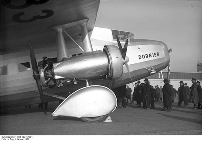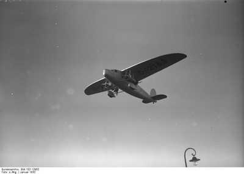
同軸上に星型発動機を二基積む四発機。反転プロペラなのかな？ ソースは Wikimedia Commons です（https://commons.wikimedia.org/wiki/File:Bundesarchiv_Bild_102-12963,_Flugboot_%22Do_X%22.jpg、https://upload.wikimedia.org/wikipedia/commons/8/82/Bundesarchiv_Bild_102-12982%2C_Berlin%2C_Gro flugzeug_%22Do_K%22.jpg、https://upload.wikimedia.org/wikipedia/commons/4/4e/Bundesarchiv_Bild_102-12984%2C_Berlin%2C_Groflugzeug_%22Do_K%22.jpg）。
flugzeug_%22Do_K%22.jpg、https://upload.wikimedia.org/wikipedia/commons/4/4e/Bundesarchiv_Bild_102-12984%2C_Berlin%2C_Groflugzeug_%22Do_K%22.jpg）。
flugzeug_%22Do_K%22.jpg、https://upload.wikimedia.org/wikipedia/commons/4/4e/Bundesarchiv_Bild_102-12984%2C_Berlin%2C_Groflugzeug_%22Do_K%22.jpg）。数年後は既に全金属引込脚の大型機の時代で、H.P.L.存命中の一九三六年、極東の島国でも三菱 G3M（九六陸攻）が開発され、後に中国大陸への渡洋爆撃で名を馳せました。
ドルニエも一九三七年の D17 でこんなのを作っています。
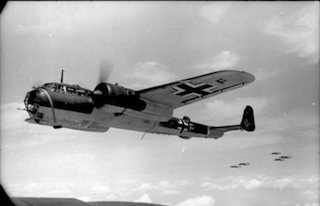ソースは Wikimedia Commons です（https://commons.wikimedia.org/wiki/File:G3M_Type_96_Attack_Bomber_Nell_G3M-18s.jpg、https://commons.wikimedia.org/wiki/File:Bundesarchiv_Bild_101I-341-0489-10A,_Frankreich,_Flugzeug_Dornier_Do_17_Z.jpg）。
(*2) ブリッグは横向きの帆を持った遠洋航海用の船で、バークは縦の帆を持った軽快な船です。ただしなんといっても両者は南極観測船なのですから、この写真の船よりは大きいかもしれません。
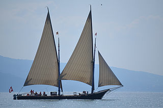
それぞれ、レディ・ワシントン号、ラ・ネプチューン号、ソースはいずれも Wikimedia Commons（https://commons.wikimedia.org/wiki/File:Lady_Washington_Commencement_Bay2.jpg、https://commons.wikimedia.org/wiki/File:La_Neptune_-_Vevey_-_31_juillet_2014_-_04.jpg）で、CC-BY-SAです。
(*3) ポオの Ulalume の一節です。原文は例えば Wikisource（https://en.wikisource.org/wiki/The_Works_of_the_Late_Edgar_Allan_Poe/Volume_2/Ulalume）にあります。日本語訳は例えば 壺齋散人さんの「ユーラリューム」があります（http://poetry.hix05.com/Poe/poe19.ulalume.html）。「アーサー・ゴードン・ピム」は The Narrative of Arthur Gordon Pym のことで、原文は例えば Wikisource（https://en.wikisource.org/wiki/The_Narrative_of_Arthur_Gordon_Pym）にあります。
(*4) beacon sandstones、ビーコン砂岩については、W. Hamilton and P.T. Hayes (1963), Type Section of the Beacon Sandstone of Antarctica（http://pubs.usgs.gov/pp/0456a/report.pdf）に詳しく書いてあります。それによると二畳紀頃まで遡る岩石で、一九〇七年にフェラーによってマクマード湾西のテイラー氷河近くにあるビーコン高地で初めて採取されたとのこと。
(*5) ここは方角が分かりづらい部分です。後の「方位問題」をご覧下さい。
(*6) lingulae and gasteropods、「シャミセンガイ」だとちょっとアレなので……
(*7) わざわざ canned じゃなくて tinned と言っています。
(*8) 「無線通信の歴史と電波の利用状況」（https://pub.nikkan.co.jp/uploads/book/pdf_file4d536bc5e9a72.pdf）や「無線通信の歴史概要」（http://www.geocities.jp/hiroyuki0620785/intercomp/wireless/radiohistorygaisetu.htm）にあるように、この小説当時既に（トンツーではない）無線通話が実用化されていました。
(*9) up to fifty meters、49メーターバンドといえば国際放送のメッカの一つ 5900 - 6200 kHz ですなあ。
(*10) Comanchian、ジュラ紀の頃だと思うのですが、よくわかりませんでした。
(*11) We’re made scientifically.
(*12) The muscular system was almost preternaturally developed. 正確には誤訳ですが、この方が感じがいいので。
(*13) 二〇一五年現在「類推する」という言葉はほぼ「推測する」の意味で使われるようになっていますが、ここでは本来の意味で使っています。
(*14) beyondness
(*15) with vast aggregations of night-black masonry embodying monstrous perversions of geometrical laws なので、幾何学を誤用しているのは本当は一軒一軒の建物なのでしょう。
(*16) Scoresby、多分 William Scoresby (1789-1857)（https://en.wikisource.org/wiki/Scoresby,_William_(1789-1857)_(DNB00)）のこと。恐らく The Arctic Whaling Journals of William Scoresby the Younger (1789-1857) Volume III: The Voyages of 1817, 1818 and 1820（http://www.ashgate.com/isbn/9780904180954）で購入できるのがこの探検記です。
(*17) この「我々」というのが主人公とダンフォースか、生き残った調査隊員全体を指しているのか厳密にはわかりません。
(*18) 捜索タイムライン
一月二十五日：捜索隊がレイクの前進基地の跡に到着
一月二十五日午後：ゲドニーの捜索飛行
一月二十六日九時から二十七日一時：主人公とダンフォースが狂気の山脈を越えて調査を敢行
〇九〇〇：離陸
一二三〇頃：山脈の反対側に着陸
一五〇〇過ぎ：都市の建築者が何ものか渋々悟り、組織的な調査を開始
二〇〇〇：地下の深淵を目指す
二〇三〇頃：恐怖のキャンプその一発見、円形建物を目指す
二一三〇頃：円形建物到着、恐怖のキャンプその二発見、めげずに地下の深淵を目指す
〇一〇〇頃：前進基地跡に帰投
一月二十七日夕方：捜索隊全員が南方基地に帰投
(*19) マチュ・ピチュのピラミッドの写真を
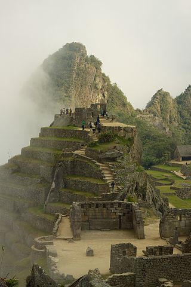ソースは Wikimedia Commons（https://commons.wikimedia.org/wiki/File:Peru_-_Machu_Picchu_133_-_morning_shrouding_mist_(8297865662).jpg）。CC-BY 2.0。
(*20) オックスフォード大とシカゴのフィールド博物館が共同で行った The Field Museum-Oxford University expedition to Kish, Mesopotamia, 1923-1929（https://archive.org/details/fieldmuseumoxfor28fiel）のことだと思われます。写真入りの報告書をこのサイトから得られますが、権利関係が判らないのでローカルには持ってきません。代わりにキシュにあるシュメールの遺跡の写真がいくつかあるので、その一つを載せます。
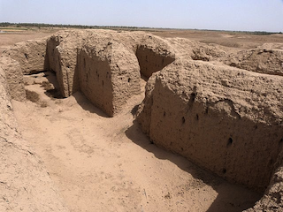ソースは Wikimedia Commons（https://commons.wikimedia.org/wiki/File:Развалины_древнего_Шумерского_г.Киш_(совр._городище_Телль-Ухаймир,_Ирак)..jpg）、CC-BY-SA 3.0。
(*21) Giants' Causeway、図はアイルランドの画家 Susanna Drury の A View of the Giant's Causeway: East Prospect を元にしたエングレービングです。
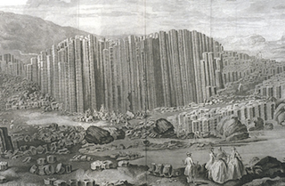ソースは Wikimedia Commons（https://commons.wikimedia.org/wiki/File:Drury_-_View_of_the_Giant%27s_Causeway.jpg）。PD。
(*22) Garden of the Gods（http://www.gardenofgods.com/）のこと。
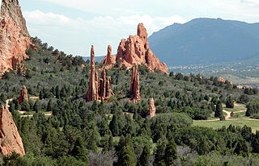アリゾナの沙漠の写真もあったので載せます。こんな道を単車で走ってみたいものです。
ソースは Wikimedia Commons（https://commons.wikimedia.org/wiki/File:Garden_of_the_Gods.JPG、https://commons.wikimedia.org/wiki/File:Monumentvalleyviewfromnorth.jpg）。それぞれCC-BY-SA 3.0、CC-BY 3.0。
(*23) Snake Tomb in the ancient valley of Petra、ヨルダンのペトラ遺跡にある PETRA: The Snake Monument（http://nabataea.net/sagara.html）のことか。
(*24) light provisions、つまり「光源」です。日進電子工業の「ストロボ科学館::ストロボ・ストロボスコープについて」（http://www.nissin-ele.co.jp/tec/index.php?c=5-27）によると、一九〇〇年代頃はマグネシウムフラッシュが広く使われ、現在主流のストロボスコープが開発されたのは一九三〇年代だとのことです。そこでここでは若干意訳しておきます。
(*25) hare-and-hounds、別名 paper-chase。子供達が田舎で遊ぶ一種のかくれんぼで、野うさぎ hare 役の子供達が「臭い」 scent として紙片を撒きながら逃げ、それを猟犬 hound 役の子供達が追いかけるゲーム。
(*26) grinding drive、この grinding が比喩なのか、地圧による粉砕のことを指すのかよくわかりません。直後の記述からすると多分後者です。
(*27) H.P.L.は未来派の美術を持ち出すのですが、ここから先、日本画を含む伝統的な東洋美術の説明を読んでいるような気がします。
(*28) Wikisource では 「the great "Old Ones"」、「偉大なる『古きものども』」。
(*29) a high plane なので訳し過ぎかもしれませんが、「魔女の家で見た夢」（http://www.asahi-net.or.jp/~YZ8H-TD/misc/DreamsInWitchHouse/TheDreamsInTheWitchHouseJ.html）などの記述をみると許容範囲でしょう。
(*30) HPL Archive では小文字。
(*31) HPL Archive では Abominable Snow-Men と abominable が大文字から始まり、Snow-Man と一体の固有名詞のような扱いになっています。
(*32) Charles Wilkes（http://www.south-pole.com/p0000079.htm）及び Douglas Mawson（http://adb.anu.edu.au/biography/mawson-sir-douglas-7531）のことか。それぞれアメリカ及びオーストラリアの南極探検家。
(*33) Wondermondo の Antarctic and Sub-antarctic region（http://www.wondermondo.com/An.htm）にあるように、実在のノルウェー人探検家です。
(*34) 二百フィート。野球場のバッターボックスからフェンスまでの半分くらいです。
(*35) eluding the archways by a sharp turn outward into the open floor、床側に折れるのを outward というのは何かおかしい気がしますが、一応こう訳しておきます。塔の構造（特に壁面内部の）がはっきりしないため、この the open floor が何を指すか今ひとつはっきりしません。特に限定もなく定冠詞つきの単数で書いてあるところを見ると、塔全体で一つしかない何かの「開けた床面」なのでしょう。この塔には最下部以外に「床」があったのでしょうか。
(*36) 周囲の円形公園や前述の問題を措くと、全体の構造は恐らくこういう感じなのだろうと思います。図の中の飛行機の絵は LibreOffice のもの。
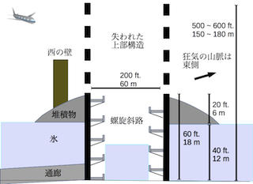(*37) persistence
(*38) 地下鉄銀座線の電車を縦横とも一・五倍に拡大した感じです。
(*39) 前述の Australian Dictionary of Biography: Mawson, Sir Douglas (1882-1958) によるとモーソンは一九二九年から一九三〇年、および一九三〇年から一九三一年にかけて、東経四三度から東経一七九度の範囲の約二千五百 km に渉る南極大陸の海岸線を調査しています。この調査には小型航空機も用いられたとのこと。H.P.L.がいかに現実の南極探検ネタを使って本作を書いたかわかります。南極探検の歴史とこの作品との関連については、Forbes にある David Bressan氏の Geology And Ancient Fossils Inspired H.P. Lovecraft To Write His Best Horror Story（http://www.forbes.com/sites/davidbressan/2015/08/20/geology-and-ancient-fossils-inspired-h-p-lovecraft-to-write-his-best-horror-story/#306b66dd641f）が参考になるかと思います。
(*40) the elder Pharos（HPL Archiveでは pharos）、Pharos はアレクサンドリアの大灯台のこととして訳しました。こういう建物だったようです。
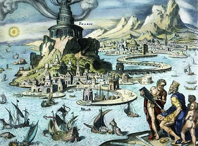ソースは Wikimedia Commons（https://commons.wikimedia.org/wiki/File:Pharos_of_Alexandria.jpg）。
(*41) ―and, of course, Danforth did not hint any of these specific horrors till after his memory had had a chance to draw on his bygone reading. 文脈上は「昔読んだ本の影響で、幻想に具体的な形を当てはめるようになった」という意味ですが、「昔読んだ本にかこつけて、実際に見たものを具体的に仄めかすようになった」という意味にもとれます。
(*42) At the time his shrieks were confined to the repetition of a single mad word of all too obvious source: なのでこれでいいと思うのですが……
固有名詞他
南極の海百合生物の邦名は固定していなかったと思います。この作品中では Elder Things、Elder Ones ないし Old Ones と呼ばれており、前二者は比較級の感じを出すため「旧支配者」、後者は単に「古きものども」と訳しました。海事用語の訳は中内清文氏の和英西仏葡語海洋総合辞典（http://www.oceandictionary.jp/index.html）を参考にしました。一
the Miskatonic University Expedition、Professor Frank H. Pabodie、Ross Sea、Shackleton, Amundsen, Scott, and Byrd、Starkweather-Moore Expedition、Arkham Advertiser and Associated Press、Lake、AtWood、The Nathaniel Derby Pickman Foundation、J. B. Douglas, commanding the brig Arkham、Georg Thorfinnssen, commanding the barque Miskatonic、the Admiralty Range discovered by Ross、Cape Adare、Victoria Land、Franklin Island、Mts. Erebus and Terror on Ross Island、Beardmore Glacier、Mt. Nansen、Gedney and Carroll、Queen Alexandra Range、Danforth二
Queen Mary and Knox Land、Moulton、Sherman、McTighe、Fowler、Mills、Orrendorf and Watkins、Dyer、Boudreau、Clark Ashton Smith、Elder Things、Wilmarth、Great Old Ones三
the sailors Gunnarsson and Larsen、plateau of Leng、Pnakotic Manuscripts、Tsathoggua、Scoresby、Ropes、Williamson四
Machu Picchu in the Andes、Kish、Giants’ Causeway五
Mi-Go、Hyperborean legends of formless Tsathoggua 、Atlantis and Lemuria, Commoriom and Uzuldaroum, and Olatho in the land of Lomar, Valusia, R'lyeh, Ib in the land of Mnar, and the Nameless city of Arabia Deserta.
in the land of Lomar, Valusia, R'lyeh, Ib in the land of Mnar, and the Nameless city of Arabia Deserta.六
Shoggoth、Taylor, Wegener, and Joly、Cthulhu七
Luitpold Land, Wilkes and Mawson、Kadath in the Cold Waste、the Indian Ocean between Budd and Totten Lands on Wilkes's coast line、Constantine the Great、Borchgrevingk十
Palmyrene sculptures十一
Tekeli-li! Tekeli-li!（そういえば「手仮りりこ」って作家がおられるようで、よく考えたものです）、South Station Under―Washington Under―Park Street Under-Kendall―Central―Harvard.十二
the elder Pharos、Yog-Sothoth方位問題
ミスカトニック大南極調査隊の仮説は注 (*5) の部分の原文にあるように
The pre-Cambrian granites and beacon sandstones thus obtained confirmed our belief that this plateau was homogeneous with the great bulk of the continent to the west, but somewhat different from the parts lying eastward below South America―which we then thought to form a separate and smaller continent divided from the larger one by a frozen junction of Ross and Weddell Seas, though Byrd has since disproved the hypothesis.
です。次の図の西南極を東南極とは異なった性質を持つ小大陸だと考えているわけですね。ですからダイアー先生の当初の計画では西南極を調べる予定でした。ここで、「南を向いて右の方角が西」という理屈を思い出せば、図の下半分の中央付近で活動していたミ大調査隊が東南極に向かって右側に進むと「西向き」、西南極に向かって左側に進むと「東向き」で合っていることが判ります。レイクがごねて赴いた「北西」は図の向かって右下方向になります。「西（東）南極」という命名は「南極の西（東）半球部分」という意味でつけられています。
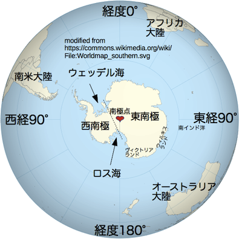
元の図は Wikimedia Commons（https://commons.wikimedia.org/wiki/File:Worldmap_southern.svg）から。PD。
第一章の山々
インターネットとネットの公有地を整備してくださる方々のお陰で、心躍る導入部の風景を手軽に見られるようになりました。まず、大づかみに地理を見ます。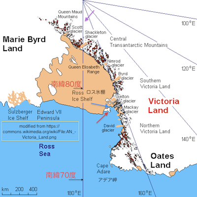
元になっている Wikimedia Commons の図（https://commons.wikimedia.org/wiki/File:AN_-Victoria_Land.png）が CC-BY-SA 3.0 ライセンスですのでこの図も CC-BY-SA ライセンスです。エレバス山は図の赤矢印、マクマード湾は青矢印の地点にあります。ミ大調査隊はちょうど図の下中央からやってきて、アデア岬を右に見ながら面舵を切り、エレバス山を左手に見ながら同湾に入ったことになります。ここから南（図の上方）に飛行機を飛ばして南極横断山脈を越えて行くわけです。作中言及されているベアードモア氷河は南緯八三度四五分東経一七一度〇分、図のシャクルトン氷河 Shackleton Glacier が南緯八四度三五分西経一七六度二〇分なのでそのちょっと右下にあたります。南方基地を設営したのが南緯八六度七分東経一七四度二三分（大体紫矢印のあたり）ですから、本文にあるようにマクマード湾から約千キロメートルの地点ですね。緯度一度あたり約百十一キロメートルなので、南極点まであと四百キロメートルくらいに迫っています。そこから東に八百キロメートル行った所に作るはずだった前進基地もマクマード湾から大体千キロメートルの距離になるかも（「東」というのをどうとるかによります。緯度八六度だと経度一度あたり七・八キロメートルなので、八百キロメートルで経度約百度です。コンパスで常時「南」の方角を確認し、それに直交するように八百キロメートル飛行すると、地軸の周りを百度回ることになり、図の遥か左上にいってしまいます）。
写真１：アドミラルティ山脈のハーシェル山
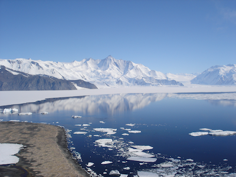
写真２：エレバス山とプレッシャー・リッジ（手前の盛り上がり）
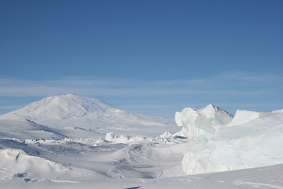
写真３：ニコライ・レーリッヒ「チベット・ヒマラヤ」Тибет. Гималаи、一九三三年
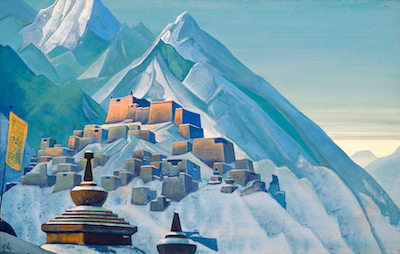
写真４：ロス島を臨む。左がエレバス山、右がテラー山
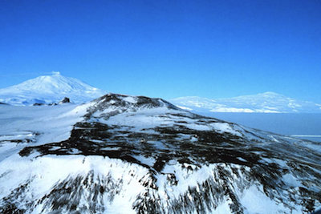
写真５：葛飾北斎「富嶽三十六景 甲州伊沢暁」、一八三〇年頃。伊沢は現在の石和らしいが、石和からはこういう風には見えないはず。
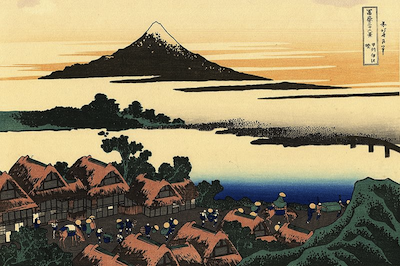
写真６：ベアードモア氷河、一九五六年撮影
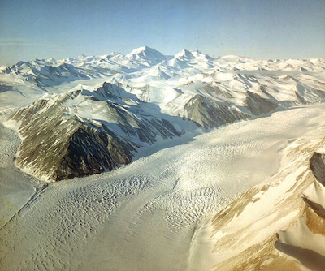
ソースは写真３を除いて Wikimedia Commons より（https://commons.wikimedia.org/wiki/File:Mt_Herschel,_Antarctica,_Jan_2006.jpg、https://commons.wikimedia.org/wiki/File:Ross_Island_Pressure_Ridges_2.jpg、http://basik.ru/painter/roerich/064_roerich/、https://commons.wikimedia.org/wiki/File:ErebusTerror.jpg、https://commons.wikimedia.org/wiki/File:Dawn_at_Isawa_in_the_Kai_province.jpg、https://commons.wikimedia.org/wiki/File:Beardmore_Glacier_-_Antarctica.JPG）。ライセンスは写真１が CC-BY-SA 2.5、それ以外は PD です。写真３の著作権については後の「ニコライ・レーリッヒ」の項目をお読みください。ミ大調査隊の出発が一九三〇年ですから、主人公たちが言及しているのはこの「チベット」ではありませんね。「フジヤマ」の絵は print といっているくらいですから浮世絵の版画だと思いますが、明治時代に大量に流出したので実際にどの絵を指しているのかは判りません。ラヴクラフト作品と絵画との関係はちょっと面白い文学史上の課題になりそう（蔵書に関する研究があるくらいなので既に誰か調べているかも）。ナンセン山の PD 画像は残念ながら見つかりませんでした。
「低い太陽」はどれだけ低いか
極地ものらしく、「低い太陽が斜めから射す」という描写が何度も出てきます。では、どれだけ太陽が低いのか、Stellarium（http://www.stellarium.org/）で計算してみました。次の二枚の画像は、狂気の山脈付近における、ミ大調査隊捜索班が活動していた日の、最も北に位置した太陽と、最も南に位置した太陽の高度です。昼間だと三十度以上に昇りますし、なんとも心憎いことに、この場所でこの季節だと、山蔭に落ちない限り日が沈むことがないのですね。H.P.L. はそこまで計算していたのでしょうか。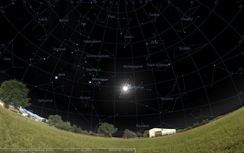
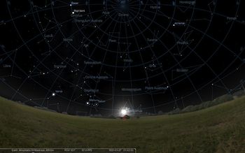
ニコライ・レーリッヒ
作中言及されるレーリッヒ（一八七四ー一九四七）はドイツ系ロシア人で、ロシア語では「ニコライ・コンスタンチノビッチ・リョーリフ」Николай Константинович Рерих です。米国に渡ってからは Nicholas Roerich と名乗りました。英語読みすれば「ニコラス・ローリック（あるいはレーリック）」ということになるでしょう。この訳では、広く知られているロシア・ドイツ語折衷読みにしておきます。どんな人物かはレーリッヒ美術館のサイトによる「リョーリフの生涯」（http://www.icr.su/rus/family/nkr/biograph/）をご覧下さい。また前述のものも含めレーリッヒの作品は basik.ru（http://basik.ru/painter/roerich/） やロシア科学アカデミーシベリア支局の国立科学技術図書館のサイト（http://www.spsl.nsc.ru/~m1-way/rerih/index1-100n.html）で見られます。日本と異なりアメリカ合衆国など一部の地域ではレーリッヒの著作権保護期間が切れていませんので、このファイルを国外に持ち出す際はご配慮ください。海百合
ウミユリは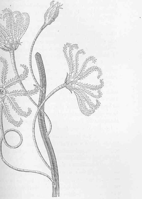
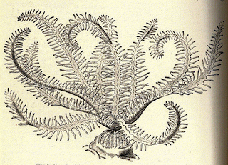
のような、なんというか H.P.L. ファン垂涎の生物で、いかにも植物っぽい形をしています。ところが、東京大学大気海洋研のサイト（http://www.aori.u-tokyo.ac.jp/project/hadeep/pd8.html）にあるように、ウミユリは実は動物なのだそうです。
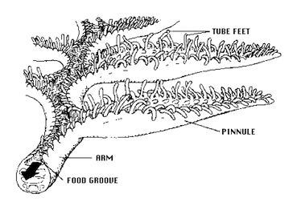
この図の TUBE FEET が FOOD GROOVE という溝を通して餌を左下の口に近い側へと送っていくわけですね。図のソースはいずれも Wikimedia Commons（https://commons.wikimedia.org/wiki/File:FMIB_52652_Feather-star_(Antedon),_illustrating_the_Comatala_form_of_crinoid.jpeg、https://commons.wikimedia.org/wiki/File:FMIB_50121_Pentacrinus_europaenus_(Thompson).jpeg、https://commons.wikimedia.org/wiki/File:Ambulacrum_Crinoidea.png）で、著作権は最初二枚が PD 最後が CC-BY 3.0 です。